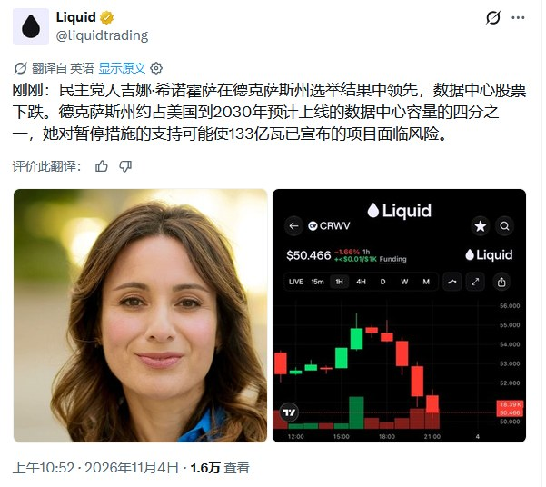
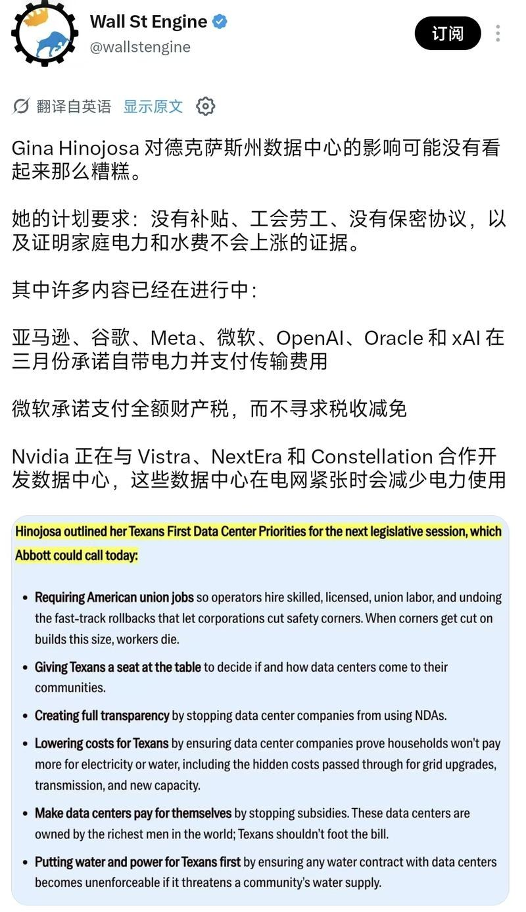
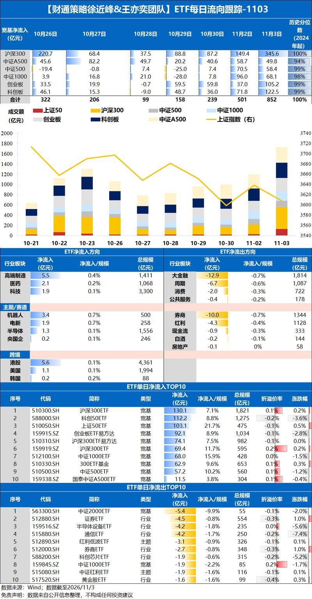
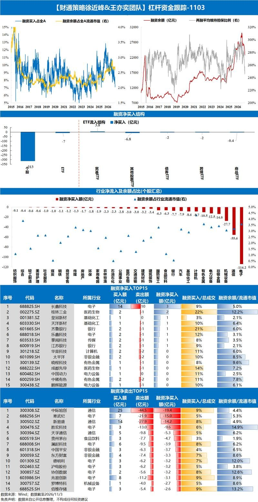

调研纪要 · 2026-11-04 新闻日报
星球 ID: 28855458518111 | 共 259 条帖子 | 精华 71 条
| 查看研究积累
强制同步到研究积累
全部 计算机 其他 电子 电力设备 机械设备 医药生物 传媒 非银金融 宏观策略 汽车 社会服务 建筑装饰 食品饮料 基础化工 建筑材料 通信 国防军工 公用事业 轻工制造 商贸零售 有色金属 美容护理 交通运输 环保 纺织服饰 石油石化 钢铁
书签
中期选举后，市场走势的推演
中期选举后，市场走势的推演
据消息人士透露，受市场疲软影响，中国芯片制造商长江存储已暂停 IPO 计划。
据消息人士透露，受市场疲软影响，中国芯片制造商长江存储已暂停 IPO 计划。
[GSX] 中国：逢低买入？
[GSX] 中国：逢低买入？
📑高盛香港市场综述
📑高盛香港市场综述
📈恒生指数 + 1.7%｜恒生中国企业指数 + 1.4%｜恒生科技指数 + 1.8%｜成交额约 2370 亿港元
🏆领涨板块：医疗保健 + 7.5%，原材料 + 6.5%，工业 + 4.2%
📉落后板块：必需消费 - 0.6%，电信 - 0.2%，能源 + 0.3%
📌港股今日走势明确且强劲，恒生指数再度逼近 24000 点关口。整体似乎主要受在岸 / A 股带动，上证综指上涨 2%，ETF 成交量激增，显示买盘参与来自在岸资金。值得注意的是，南向资金今日转为净卖出，截至撰稿时净卖出 2.67 亿美元。A 股与 H 股的这轮上涨似乎并非源于单一催化剂，而是多重因素叠加：ETF 成交量中可见在岸买盘、部分投资者认为美国中期选举结果对亚洲构成利好，以及 CRO/CDMO 个股的板块性强势对恒生指数形成支撑。
💸资金流向方面 —— 全天大部分时间卖盘占优，但尾盘买盘力度转为卖盘的 1.1 倍。医疗保健板块买盘一致且直接，交易台承接了药明生物、药明合联、信达生物及石药集团的买盘。生物科技板块出现零星卖盘，如金斯瑞等个股。交易台在工业板块（如宁德时代）承接了一些新增买盘，消费 / 饮料板块（古茗）也有买盘，同时减持可选消费板块（名创优品）。科技板块出现部分双向成交。联想集团全天大部分时间间见卖盘，临近收盘时遇到买盘。
📊分板块看，医疗保健板块上涨 7.5%，创下自 2022 年初以来的最大涨幅，美国中期选举结果被认为缓解了市场对《生物安全法案》的担忧。原材料板块上涨 6.5%，受金价走强提振，紫金黄金上涨 14.6%，紫金矿业上涨 7.6%。在岸市场方面，半导体板块同样强势上涨 10%——ETF 成交量显示在岸资金正在买入。今日表现落后的是消费和能源板块，这两个主题近期一直保持韧性。银行等价值主题表现落后，跌幅为 0.0%，而成长主题则重拾涨势。
📑高盛韩国收盘点评：美国中期选举结果出炉
📑高盛韩国收盘点评：美国中期选举结果出炉
📊KOSPI +0.62%，点位 5683.8，成交额 168 亿美元，外资净流入 18.73 亿美元
📊KOSDAQ +1.50%，点位 715.0，成交额 43 亿美元，外资净流出 100 万美元
📰市场复盘
KOSPI 全天走势震荡，开盘受存储板块带动高开，跟随隔夜 SOX 指数反弹；在美国中期选举结果陆续公布后涨幅快速回吐，之后小幅修复，收盘上涨 0.62%。外资早盘为净买入，盘中转为净卖出，抛售集中在科技板块，净卖出规模 16 亿美元；本土机构与散户同步净买入，承接了大部分外资抛盘。在蓝潮预期下，电动车供应链板块上涨 8.2%，太阳能板块大涨，韩华新能源上涨 18.6%、OCI 控股上涨 10.4%；半导体板块反转走弱，SEC 微跌 0.7%、SK 海力士微跌 0.1%。今日交易活跃度抬升，KOSPI 成交额较 20 日均值高出 18.2%，盘中存储股出现多笔卖单，海力士抛压更明显，但尾盘没有继续加码抛售。
📰主要热点
🔻半导体板块走弱：SK 海力士（000660）-0.1%、SEC（005930）-0.7%，早盘受益于 SOX 指数 2.6% 反弹、AMD 和美超微业绩指引超预期而高开，随着美国中期选举结果落地后冲高回落，收盘小幅收跌。资金层面，外资延续对 SK 海力士连续 4 日净卖出，当日净卖出 8.69 亿美元，同时持续卖出 SEC，金额 6.02 亿美元；本土机构、散户同步买入，其他法人也加仓海力士。盘中海力士、三星电子出现多笔卖单，海力士抛压更突出，午后抛压没有继续放大。
🔺太阳能 / 电动车供应链走强：韩华新能源（009830）+18.6%、OCI 控股（010060）+10.4%、现代能源（322000）+12.5%，高盛韩国电动车供应链指数上涨 8.2%。市场预期蓝潮背景下，清洁能源税收支持政策有望重回视野。
🔺KRAFTON（259960）+16.5%：公司昨日盘后公告，计划回购约 165 万股普通股，总额约 3000 亿韩元，用于提升股东回报，回购周期为 2026 年 11 月 4 日至 2027 年 2 月 3 日。
🔻HYBE（352820）-11.5%：公司第三季度营业利润超出预期 12%，达到 1885 亿韩元，但投资者关注点落在净利润不及预期。虽然季度营收创出新高，净利润仅 110 亿韩元，大幅低于预期，主要来自外币现金及存款的非现金汇兑估值损失，公司称该损益属于非经营性，和主业盈利无关。
🔻LG H&H（051900）-11.8%：昨日收盘后披露三季报，营业利润 704 亿韩元，较市场预期 982 亿韩元低 28%，业绩不及预期。
摩根大通｜存储市场更新
摩根大通｜存储市场更新
整体来看，我们从存储厂商 26 年三季度财报当中得到的判断偏向积极：在汇率不利因素的冲击下，企业盈利、利润率依然超出预期，价格上行、HBM 价格谈判顺利、出货量兑现。也存在部分企业层面的不及预期事项（例如 SEC 暂无近期股东回报安排、铠侠给出偏弱的 26 财年四季度指引）；但我们认为这类问题属于短期现象，SEC 的股东回报催化大概率会在 2027 年 1 月回归，铠侠 2027 财年的增长水平有望高于季节性以及同行水平。终端需求信号依旧分化，B2B 端（超大规模云厂商稳定的 AI 资本开支增长，市场一致上调明年预期）和 B2C 端（PC、手机业务面临更大压力）表现不一。我们认为，自下而上的存储行业供需基本面，在 2028 年之前都会维持很强的韧性。
DRAM 板块 —— 基本面持续超预期向好。在 26 年三季度，DRAM 价格再度上行，带动全行业业绩小幅超预期（DRAM 均价环比上涨 23%，我们此前预期为环比上涨 17%-20%）。新增的利好来自四季度的业绩指引：存储厂商指引 DRAM 位元容量环比提升，行业有望在 2026 年末实现同比 20% 以上的位元出货增长。存储厂商已经开始出货 HBM4，并指引 HBM4 位元收入占比将在 26 年四季度至 27 年二季度完成切换；更关键的是，在顺利完成价格谈判之后，厂商指引 HBM 相对传统 DRAM 的盈利差距会持续收窄。我们此前一直提示，HBM 均价大幅上涨是一把双刃剑（利好存储企业利润，但也会压制需求），但我们认为本次全行业谈判推进顺畅，下游客户的风险整体可控（摩根大通预测 2027 年 HBM 均价上涨 96%）。存储厂商一致表态，2027 年之后需求将持续超过供给（部分厂商指引 2027 年存储产能基本已经售罄），我们认为，当业绩在 AI 资金与可持续性的市场担忧当中展现韧性时，这一指引能够对市场情绪形成支撑。
20261104 永赢基金股市异动点评
20261104 永赢基金股市异动点评
📍 市场点评：今日A股呈“早盘承压、午后反转”的极端分化走势。其中，上证指数收涨约2.16%，深成指涨约4.2%，创业板指涨约6.4%，科创50涨约9.9%，全市场超4500只个股上涨，成交额显著放大破2万亿。结构上，半导体、存储、先进封装、CPO、科创板高弹性标的全线爆发，而早盘抗跌的银行、白酒、红利防御方向午后相对走弱。
📍 波动原因：海外政治变量“预期差修复”是午后反转的核心触发点。早盘市场仍受美国中期选举扰动，担忧新国会格局带来AI监管、反垄断与数据中心能源审查压力，日韩股市大幅下挫、纳指100期货一度跌超2%，A股成长端承压。午后随着中期选举结果基本确定、政策不确定性消退，全球风险资产同步回暖：纳指100期货跌幅收窄至0.3%以内，日经225跌幅收敛、韩国KOSPI从深跌4%翻红收涨，港股恒生科技涨超1%，外部利空出尽驱动资金回补，叠加午后多只ETF同步放量配合，共同催化了午后的脉冲式反弹。
📍 后市展望：今日反攻本质是“外部不确定性出清+内部超跌修复+ETF增量资金”的三重共振，而非基本面单边反转。后续一段时间继续观察宽基ETF放量是否延续、科创50关键关口有无承接；若纳指期货与费半继续修复，成长端仍有惯性。中期，美国国会格局变化对AI投资节奏的影响偏“审查加强、节奏约束”，不是需求证伪；全球半导体景气与国产替代逻辑仍在，但定价将从“海外映射普涨”回归“看订单、看毛利率、看国产化兑现、看三季报质量”。配置上，红利资产仍可继续关注，进攻端关注有业绩支撑+前期超跌的科技核心标的，审慎看待无基本面背书的高β概念；同时留意中期选举后冲突预期反复带来的波动回撤风险。
A股市场波动点评20261104
A股市场波动点评20261104
[發]机构票相对非机构票的超额回升是源于机构资金抛压尾声的重要信号。回顾2022年4月末新能源抱团瓦解的阶段性回调底部，是机构票相对非机构票的超额回升。截至11月4日，全部股票机构最高组与最低组的10日、20日滚动收益差分别回升至+0.3、−4.9个百分点。
⚖ 11月2日股指期权首次出现“升波反弹”的底部异动信号。此轮调整中，中证1000股指期权IV通常与当日指数收益率反向波动，而11月2日首次出现了“价波齐升”的现象，这与10月23日、28日两次“降波反弹”后次日即再度大跌（−1.54%、−3.03%）的形态不同。历史上2022年以来4次“回撤≥10%＋升波反弹”之后20日平均上涨12.7%（胜率75%），40日4次全部上涨。
🔍活跃资金仓位处于极低位置，存在大幅回补的空间。对中信证券渠道调研显示，样本活跃私募仓位8月7日当周以来持续回落，10月23日已降至65.4%，为2024年3月以来最低，较76.2%的历史中位数低9.8个百分点。市场融资余额截至11月3日已回落至2.27万亿元，回落至2025年9月初的水平。
⭐中期选举“蓝潮”落地，市场呈现阶段性利空出尽特征。根据目前媒体测算，民主党预计夺回国会两院，并在多个关键州州长选举中取得突破，“蓝潮”的广度进一步强化了美国政策再平衡的预期。对AI算力而言，市场首先担心的是科技监管约束增强，以及数据中心扩张所依赖的能源、审批等政策支持面临更多博弈。A股午后放量上行，创业板指收涨6.40%，科创50涨近10%，沪深成交额回升至2.04万亿元，较昨日增加3343亿元。潜在利空落地后，算力与半导体反而成为反弹主力，这是阶段性利空出尽的典型交易信号。新增利空继续推动卖出的能力正在减弱，叠加国内稳市政策落地，资金开始重新评估超跌资产的配置价值。
[红包]后市展望：调整前置，转机将现，后续行情有望走向更加均衡的修复。AI板块已经经历资本开支增速预期下修后的第一轮估值压缩，非AI板块则更早反映了高利率、汇率与内需偏弱等压力，大部分板块估值收缩的主要进程已在今年发生。按照年度策略截至10月22日的测算，A股非AI非金融龙头估值仅处于2016年以来约21%的分位，制造与医药龙头更接近历史低位，修复并不需要所有负面因素同时逆转，边际改善就可能带来较大的预期差。展望后续，若AI投资扩张逐步回归可持续节奏，对融资、能源与物料的挤出压力有望缓和，为非AI需求修复创造条件。今天科技领涨体现了超跌修复的弹性，明年的机会则有望向更多行业扩散。围绕稳健回报、优秀制造业出海、内需修复和AI新技术适度分散布局，更契合“K型收敛、行情宽度拓展”的方向。
[烟花] 欢迎联系中信证券A股策略团队
【浙商宏观林成炜】如何看待中选的蓝色横扫？
【浙商宏观林成炜】如何看待中选的蓝色横扫？
核心：财政环境短期难变，但28年后加税预期可能升温；数据中心监管压力提升但目前两党共识部分仍然力度温和。中选结束本身也将降低市场不确定性。
🔥财政环境：民主党很难立刻改变
1️⃣虽然民主党控制两院可使用“预算调节”对支出、税收和债务上限立法（特朗普前两次减税法案均以此方式通过）。但可能在行政端被特朗普否决，而推翻否决需要两院2/3的绝对多数，当下民主党仍无法做到。
2️⃣需要关注的是，民主党两院优势较大可能使28年换届后的加税预期升温。
🔥数据中心：监管压力提升但不宜鬼故事化
1️⃣州层面：面临一定挑战，本次中选数据中心六大州中，德州、俄亥俄、佐治亚、内华达州长均由红翻蓝；亚利桑那和伊利诺伊民主党继续执政，监管趋严。
2️⃣国会层面：关注众议院9月16日以417比3通过的《Ratepayer Protection Act》，是目前立法进度最靠前，两党最能达成共识的立法范本。法案要点：一是成本分担，要求大负荷用户承担电网升级成本，包括财务担保。二是非强制执行，只要求各州考虑这一标准，而非立刻落实❗️并非“一刀切”叫停的鬼故事剧本❗️
🔥特朗普较难被弹劾
民主党可能发起相关流程，但最终较难满足参议院所需的2/3票数。
详细交流欢迎联系浙商宏观林成炜18016306832
【中泰电新】#民主党中选胜出，#全面利好新能源
【中泰电新】#民主党中选胜出，#全面利好新能源
[玫瑰]今日，美国中期选举结果已出，民主党获得两院控制权。#民主党大胜预期利好新能源。美国两党对新能源的态度存在根本性分歧，#民主党将新能源视为应对气候变化和降低长期能源成本的核心工具（共和党则优先确保化石燃料的主导地位），#因此民主党上台有望保障新能源补贴力度、加快新能源建设速度、扩张全球需求
[玫瑰]#风光储：经济性方面，风光储等清洁能源税收抵免削减困境有望恢复且扩大，有效降低项目成本、提升建设积极性；审批方面，联邦土地的可再生能源审批收紧也将预期缓和，并网排队和联邦许可节奏改善，以及此前美国东海岸海上风电建设禁令也有望打开；此外，储能也将充分受益风光装机增长，以及AI数据中心业主自担电费的主张也将推动业主装配储能，建议重点关注:
#储能：海博/德业/阳光/上能/正泰电源等
#风电：东缆/大金/天顺/振江等
#以及光伏产业链各环节龙头公司
[玫瑰]#电力设备：2020年电力设备禁令在拜登替代特朗普成为美国总统后立即撤销，本次民主党大胜后，禁令实际落地难度加大，叠加近期各类主体普遍反馈对禁令的担忧甚至反对意见，我们认为禁令实际落地或难产，即使落地影响范围恐难超过20年禁令，即表后市场完全不受影响。#重点关注直接受益北美的电力设备标的：思源电气、金盘科技、特锐德、潍柴重机、伊戈尔等
📩风险提示：政策不及预期、需求不及预期、地缘政治等
☎中泰电新 曾彪/吴鹏
很多降智的观点跑出来了，问的人也比较多（以炒股的灵活资金为主），统一解答下：
很多降智的观点跑出来了，问的人也比较多（以炒股的灵活资金为主），统一解答下：
1、民主党利好清洁能源没什么问题，但人家利好人家的新能源，不是中国的（尤其中国跟人家打擂台赛的）。
2、我们看好清洁能源，尤其SOFC，正解#利好BE，A股买BE供应链。此外，BE不等于AIDC，BE的逻辑是SOFC抢占燃气轮机的份额。
海外目前long BE short GEV，是一个主流的pair。
结论：看好BE，看好SOFC产业链。
国产链新材料，反弹买什么？--AI 新材料更新（1104）
国产链新材料，反弹买什么？--AI 新材料更新（1104）
#【20cm集合】
优选国产替代逻辑强、进程中（还没完成替代、朦胧美可给估值）的品种，例如：cowos-l直写光刻设备、载体铜箔、ABF膜、mlcc离型膜、靶材、静电卡盘、特气、Q布等。
NO.1，芯碁微装
【定位】国产算力CoWoS-L直写光刻设备独供
【三季报】 Q3业绩加回汇兑损失、单季度净利率达32%，26Q1-Q3公司先进封装业务收入接近1E，其中Q3确收3台设备。
【催化】26q4预计确收 6-7 台先进封装设备。27全年订单60-80台、出货50-60台。马来及北美客户 26Q4如期推进。
【市值】353亿，27 年谨慎 12 亿、 中性 15 亿，对应明年仅为24X pe。
（2）铜冠铜箔
【定位】大陆唯一成熟、批量、稳定供货hvlp4铜箔的材料商，已公告增产估计3000吨/年，后续仍有万吨级别高端新增产能，#都是高端产品。
【市值】597 亿，27 年谨慎 15 亿、中性 20 亿，对应明年 30x pe。
【优势】高端铜箔顶流卡位，不受价格干扰（铜箔价格预期低、通胀不显著）。
（3）宏昌电子
【定位】筹码结构好，三季报证明自己，受益CCL涨价（#松下TW工厂大火、CCL更紧缺）
【催化】树脂膜（RCC方案）在光模块的认证进展。公告在珠海新建基地、扩产，已发定增预案。
【市值】152亿，27年中性15亿、仅为10X pe。
（4）斯迪克&洁美
【定位】mlcc 离型膜国产替代
【激励】斯迪克10月底激励目标27年营收目标60E、26Q1-Q3仅24.8E，行业景气度高，同行也在扩产，例如洁美月度出货5000多万平、年底 6000万平/月。27-28年化产能扩至10、20亿平。
（5）方邦股份
【定位】载体铜箔国产替代，三井载体铜箔市占率高达90%以上，且不断提价。
【催化】公司发货从0到1。近期CX验证持续推进。BT载主要承接为SN、XS，下游为存储、光模块等。
【市值】61亿。
（6）广钢气体
受益国内存储/逻辑核心客户CAPEX，10月末已公告中标境内某电子大宗现场制气项目，Q4上海等客户仍在继续推荐投标。往年公司自身CAPEX在10E、而26H1就有17.6E（不包括Q4大订单）。
（7）华海诚科
全球环氧塑封料规模200亿，国内约70亿，其中50亿中高端市场由三家日本企业主导（京瓷/住友/信越），剩余20亿属于20余家国内厂家，公司占55%。国产替代、本土存储技术迭代是前提，最近几年也是替换窗口期。
（8）兴森科技
【定位】abf载板国产化率极低，海外龙头IBIDEN、欣兴产值过百亿，国内企业刚过亿，26H2订单外溢现象频发，兴森对应国产算力大客户（原先供应商为群策+礼鼎，台厂稼动率均已打满）。
（9）江丰电子
【三季报】 Q3扣非净利2.27E、环比+182%，靶材涨价报表逐步反应，Q4提价落地量环比增加。半导体零部件业务全年预计17E、同比50-60%增速。
【市值】512亿，26-27年wind一致预期10.3亿、14.1亿，明年对应PE36x。
------
（一马平川）
腾讯：Hy4正式发布，持续AI商业化探索
腾讯：Hy4正式发布，持续AI商业化探索
#Hy4正式发布、多模态与真实生产力。相较preview版本，Hy4扩大预训练及后训练规模（仍为770B总参/49B激活MoE架构），首次引入视觉理解与Computer Use，补齐了过去的多模态短板，并强化游戏开发、金融研究及办公能力，支持用户与AI实时协作编辑Word、Excel、PPT。目前已同步上线腾讯云、OpenRouter、WorkBuddy、元宝、ima等多个平台，API价格与HY4P相同（输入输出6/18，限时半价），#后续将推出性价比更高的Hy4Flash
#近期腾讯AI商业化探索多、关注办公Agent及AI短剧。办公agent方面，据QM，9月WorkBuddy多端合计月活达3235万，10月发布Buddy One实现腾讯系办公产品如网盘、文档、会议的数据互通，有望推动使用深度及付费转化提升。内容端，绿泡泡短剧前身为25年6月上线的微信短剧小程序，今年7月更名升级，9月月活已达1.56亿，成为仅次于红果（4.3亿）的亿级月活短剧应用。随着模型能力不断升级、下游AI应用多维探索，有望实现协同并加速ROI验证
#向下安全边际高、向上弹性空间足。盈利预测26E约2600亿（考虑AI投入），对应当前PE仅12x
详情联系林起贤/夏嘉励/王昊~
【东北计算机】技术升级线——VPD：关注核心器件增量与国产导入机会
【东北计算机】技术升级线——VPD：关注核心器件增量与国产导入机会
[太阳]#VPD：供电路径垂直化、开启芯片近端供电升级 AI芯片功耗与电流持续提升，传统横向供电面临传输损耗、瞬态压降及板面空间约束。VPD将末级电源移至处理器下方，缩短低压大电流路径，并推动功率芯片、磁性器件、电容与PCB协同升级。目前，AWS等多家云厂商已开始布局VPD供电方案。
[太阳]#DrMOS：用量与性能同步提升、国产厂商加快突破 芯片功率增长推动供电相数及功率器件需求提升，VPD进一步提高对转换效率、封装高度与散热性能的要求。据我们测算，2030年全球数据中心AI芯片用DrMOS市场空间有望超450亿元，关注通过大电流功率级与多相控制器配套推进客户导入的#晶丰明源、杰华特。
[太阳]#电感：薄型化与多相集成升级、TLVR拓展价值空间 VPD下处理器底部空间紧凑，对电感的电流承载与瞬态响应提出更高要求，TLVR可加快电流响应，降低满足同等瞬态指标所需的输出电容量。据我们测算，2030年全球AI芯片供电用TLVR电感市场空间有望超350亿元。相关公司：#铂科新材、顺络电子、龙磁科技（未覆盖）。
[太阳]#高频电容：去耦向芯片近端迁移、硅电容打开封装内空间。高密度供电推动电容向低寄生参数、薄型化及基板嵌入方向升级，低ESL MLCC与硅电容有望形成分工。据我们测算，2030年全球AI芯片硅电容市场空间有望超200亿元。相关公司：布局硅电容的#英集芯（未覆盖）、 布局硅电容封测的#颀中科技（未覆盖）。
[太阳]#PCB及互连：供电与主板深度集成、系统适配能力重要性提升 VPD后续有望向主板及封装基板内集成演进，对埋嵌工艺、互连损耗与热设计提出更高要求。相关公司：推进埋嵌式PCB及集成供电技术的#中富电路。
🚩深度报告：
【东北计算机XAI】行业深度｜VPD开启AI算力“最后一厘米"供电革命 ↗
风险提示：资本开支、产品落地及国产导入不及预期，竞争加剧及盈利能力下降。
上述未覆盖标的不作为推荐，欢迎联系东北计算机团队
[红包]浙商机械 邱世梁|王华君【物理AI】大模型厂商密集入局，特斯拉量产节奏逐步明确，看好大脑+硬件共同驱动的物理AI行情！
[红包]浙商机械 邱世梁|王华君【物理AI】大模型厂商密集入局，特斯拉量产节奏逐步明确，看好大脑+硬件共同驱动的物理AI行情！
我们认为，#本轮物理AI行情由模型竞赛+特斯拉量产双重驱动，未来1）大脑：数采设备、应用场景或将成为机器人大规模落地的主要瓶颈；2）硬件：确定性高的零部件厂商业绩有望释放。
1️⃣大脑：大模型厂商密集入局，但真机数据缺乏仍是模型能力提升的主要瓶颈，看好数采设备+有应用场景的整机、零部件企业
#海外大模型厂商加速入局，数采仍是当前模型训练重点：
①大模型厂商加速入局：#Open AI 已重点布局机器人大脑，通用大模型GPT-6 Astra在部分具身任务评测中表现领先同业；#Meta 已与中国机器人企业傅利叶智能合作推出机器人原型机，未来将作为个人智能体Muse的物理化身。
②龙头企业发力数采：特斯拉计划制造1-2万台机器人用于数采，Open AI 27年数采体量有望达500万-1000万小时。
我们认为，随数采需求逐步释放，①电子皮肤、灵巧手、传感器等#数采核心硬件 ；②有#应用场景 、有高质量数据来源的标的有望受益。
2️⃣特斯拉Optimus量产启动，重视确定性高的零部件厂商
Optimus量产时间表：①26Q2：每周几十台；②26年九月：每周数百台；③26年底：每周1000台；④27年底：每周2万台，对应#年产能约百万台。
Optimus后续落地计划：①26年底左右发布Optimus V3 非预编程的演示视频；②27年4月将AI5集成在Optimus中；③#27年底对外出货。
🚀【物理AI】重视：
1、确定性强的机器人零部件供应商：恒立液压、三花智控、拓普集团、浙江荣泰、汇川技术、双环传动、绿的谐波、五洲新春、金沃股份、奥比中光、中大力德、雷迪克等
2、整机及应用场景：宇树科技、杭叉集团、中力股份、杰克科技、咸亨国际、杭州柯林、新时达、横河精密、中坚科技、优必选、安徽合力等
3、传感器等新技术或低估值转型标的：涛涛车业、上海沿浦、华翔股份、峰岹科技、安培龙、柯力传感、汉威科技、福莱新材、日盈电子等
风险提示：AI发展不及预期等
🔗浙商机械【具身智能】60多篇深度报告合集：
浙商机械【人形机器人】系列深度 ↗
浙商机械 邱世梁/王华君18610723118/蒋逸18158576706/秦乐恒15221680140
基本面高景气预计持续，重视建筑板块内超跌科技标的
基本面高景气预计持续，重视建筑板块内超跌科技标的
[玫瑰]今日美国中期选举逐渐尘埃落定，民主党预计夺取参议院+众议院控制权，市场出现普遍反弹。我们认为科技基本面2027年仍将维持较高景气度，重视建筑板块内超跌标的。
[太阳]民主党对于AI政策预计总体友好，AI企业CAPEX预计保持高位。我们预计民主党此前方针主要为竞选口号，未来主要施政方针将倾向于在选举中更加支持自己的传统MAG7，并不会反对AI产业本身。同时，如果民主党未来能够迫使总统尽快结束中东冲突，则油价和通胀有望下降，降低加息预期，更有利于AI企业融资，因此我们判断AI企业整体CAPEX和建设进度不会受到明显影响。
[太阳]应用端逐渐成熟，端侧需求有望逐渐放量：近期，端侧应用逐渐成熟，例如中科曙光打造10万卡超智融合AI集群“曙光8000”，基于国产芯片的异构计算架构构建，在同一套系统上原生支持高精度科学计算与AI训练、推理，科学计算、工程计算与智能计算得以统一调度，我们预计未来自主可控进程将进一步加快，端侧应用也将逐步丰富，端侧需求也有望逐渐放量。
[太阳]目前板块内科技标的股价已到合适布局区间。目前板块内科技标的相较于2026年内高点普遍回调幅度在50-60%以上，而上述企业在2026年前三季度业绩普遍保持较高增速（如洁净室、罗曼股份等），当前市值对应2027E PE已普遍不足20x，在业绩可持续性较好的背景下，当前建筑板块内科技标的已具备优秀的布局价值。
[玫瑰]推荐洁净室标的【亚翔集成】、【柏诚股份】（2027订单及业绩预计继续保持增长），端侧推理标的【罗曼股份】（AIDC业绩加速结转，端侧产品逐渐放量），【宏润建设】（机器人业务受益于物理AI，布局大功率电池），【华蓝集团】（更换控股股东，未来预计发展第二曲线），【联检科技】（收购AI视觉企业，标的公司2026年业绩高增）。
重点推荐
重点推荐
1️⃣＃困境反转： 关注#伟明环保，运营基本盘稳定，装备出海与新材料业务贡献增量，跟踪业绩底部修复。
2️⃣＃半导体反弹： 重点推荐#盈峰环境，科技风偏修复有望向国产算力扩散；算力租赁持续放量，Q3单季归母净利润同比+50.8%。
3️⃣＃金价受益一： 关注#高能环境、#浙富控股、#飞南资源，关注金银回收带来的价差与库存收益弹性。
4️⃣＃金价受益二： 关注#紫金龙净（电动矿卡、矿山绿电），受益紫金绿电及设备更新。
🌟🌟🌟 中信证券·游戏数据平台10月月度更新！🌟🌟🌟
🌟🌟🌟 中信证券·游戏数据平台10月月度更新！🌟🌟🌟
1、10月手游流水观察：16家样本游戏公司表现分化，网易等部分公司同比趋势有所改善，部分公司仍待观察。
2、10月版号供给充足：共195款游戏获批，其中国产183款、进口12款，腾讯《不可卷卷书店》、网易《
桃花 ↗ 》等产品在列，后续新品储备持续丰富。
3、《
影之刃零 ↗ 》口碑逆袭：前期体验平淡、后期渐入佳境，尤其庞镇的地图体量与内容丰富度令人印象深刻。目前Steam好评率已升至91%，发售72小时全平台销量突破400万份，Steam峰值同时在线约83.4万人。优质国产3A破圈，有望推动国内非移动市场扩容及自研3A出海。
4、未来3A规格产品重点关注网易《
无限大 ↗ 》：游戏定档2027年1月15日全球多端上线，以都市生活体验、外观付费区别于国内传统抽卡养成产品，以免费进入、多端覆盖和动漫画风区别于GTA系列。我们看好其差异化定位有望成为《
燕云 ↗ 》后又一全球爆款，具体表现仍待上线验证。
【长城机械 杨青】华荣股份调研要点20261104
【长城机械 杨青】华荣股份调研要点20261104
🧧#核心将放在主业上&新能源EPC已逐渐剔除
1、公司前三季度防爆电器营收20.47e(占总营收比例达92.33%)，防爆电器净利率达15%-18%；
2、全球防爆电器市场500e（国外400e+国内100e）：公司前三季度海外防爆电器占比60%，增速20%以上，国内增速3%-4%，预计未来主业增速能保持10%-20%；
3、增长点：沙特合资子公司明年启动，约2e(海外毛利率比国内高2pct)；已中标超1.5e新疆煤化工项目；
🧧#安工智能尚处推广前期
1、安工智能已覆盖15个子系统，其覆盖场景远超传统防爆设备，整体市场规模大于现有防爆设备市场，目前已实现数亿元营收，仍处于市场推广阶段，未来可期。
❗️#投资建议
预计公司明年5e业绩，对应估值12倍，建议关注
【国泰海通医药】中国生物制药：牵手BI达成总额70亿美元合作，国际化全面提速
【国泰海通医药】中国生物制药：牵手BI达成总额70亿美元合作，国际化全面提速
[玫瑰]11月4日，公司公告与勃林格殷格翰（BI）订立战略选择权及许可协议。这是双方在肿瘤领域的第二项合作（此前2024年已就BI后期肿瘤产品在中国的合作建立战略合作，宗艾替尼为其中之一）。
[玫瑰]交易内容：
1）协议涵盖6个临床前项目，涉及ADC及TCE两类技术，其中5个来自全资子公司礼新医药，1个来自北京泰德。公司主导各项目的早期开发，直至完成全球I期临床。
2）达成约定的临床里程碑后，BI有权行使选择权：4个项目获得全球（不含中国内地、香港、澳门）开发、生产及商业化独家权利，另外2个项目获得全球范围的独家权利；
3）公司将获得3.58亿美元首付款及近期付款，并有权收取选择权行权、开发、监管及商业化里程碑付款，合计金额达70亿美元，另有未来产品销售额最高双位数的特许权使用费。
[玫瑰]我们的观点：今年以来，公司与赛诺菲、阿斯利康、GSK、BI等MNC陆续达成战略合作，年内授权交易总金额超过100亿美元；国际化路径从单品授权延伸至平台级合作，公司创新平台研发能力得到MNC认可背书。
联系人：余文心/余克清/廖博闻/汪晋
[红包]【招商医药】恒瑞医药2026第三季度业绩点评：创新药收入加速，研发矩阵保持高速进展
[红包]【招商医药】恒瑞医药2026第三季度业绩点评：创新药收入加速，研发矩阵保持高速进展
[玫瑰]2026年Q1-Q3实现营收244.09亿元（yoy+5.26%），归母净利润69.23亿元（yoy+20.38%），扣非归母净利润62.43亿元（yoy+11.70%）。
[玫瑰]2026年Q3单季度实现营收89.53亿元（yoy+20.55%），归母净利润24.58亿元（yoy+88.92%），扣非归母净利润25.14亿元（yoy+90.93%）。
[發]2026年前三季度，创新药销售收入138.71亿元（yoy+17.05%），占药品销售比重提升至64.59%（2025年同期比重为55.28%）。其中，抗肿瘤创新产品收入98.65亿元（yoy+3.13%），占创新药销售收入的71.12%；非肿瘤创新产品收入40.06亿元（yoy+75.36%）。医保内成熟创新产品持续稳健增长，以及新进入医保的创新产品逐步放量成为业绩增长的主要驱动因素。
[太阳]2026年前三季度，公司仿制药销售收入76.05亿元（yoy-16.41%），占药品销售比重从去年全年的41.66%下降至35.41%（26年半年报中占比为36.84%）。26年Q2单季度同比下降24.48%，Q3单季度同比下降17.11%，降幅收敛。
[庆祝]创新药研发和产品矩阵扩展保持高速进展，2款1类创新药获批上市，5项适应症扩展获批，7项上市申请获CDE受理、2款创新药获CDE突破性治疗品种认定。
[礼物]2026年前三季度，对外许可确认收入27.81亿元（yoy+31.12%），主要为GSK及BMS按完成进度的分期收入以及个别已授权产品里程碑款。第四季度预计确认收入包括诺和诺德首付款3亿美元，以及Braveheart Bio首付款及近期里程碑付款。
点评报告：#小程序://招商研究/EBUrCAQ99PDglwD
[抱拳]欢迎联系：梁广楷/许菲菲/焦玉鹏/侯彪/韦文青/李卓凡
[红包]【浙商轻纺 史凡可/马莉/詹陆雨】布鲁可：成长态势延续、期待新品增量，回调关注布局
[红包]【浙商轻纺 史凡可/马莉/詹陆雨】布鲁可：成长态势延续、期待新品增量，回调关注布局
🌟公司近期股价波动较大，我们认为基本面&成长逻辑延续此前趋势未变。#国内稳健增长、海外高速发展，成长性或有低估。
#国内： 行业大盘承压，但16+/9.9/积木车&恐龙支撑稳健增长。
根据蝉妈妈，布鲁可10月抖音GMV指数同比+109%、环比+22%，其中销售居前单品为299元霸王龙/奥特曼捷德尊皇传奇版/假面传奇版。26年新品倾斜于高单价成人向产品，此外积木车IP从变形金刚、奥特曼、蝙蝠侠，拓展至Cyberpink、速度与激情、福特、道奇，价格带从19.9元拓展至39.9元及以上，新品支撑下整体收入预计稳健成长。
#海外： 欧美仍处产品&渠道扩张期，关注27年大客户渠道拓展情况。
根据第三方数据， Blokees美国/英国/法国/印尼/泰国/马来Google Trend处于历史较高水平。26Q3北美新拓2000+渠道，单店产出持续提升，渠道仍有较大提升空间（孩之宝/美泰美国有小几十万网点）；26Q4为北美玩具传统旺季、叠加26年复联5上映，#我们预计当前北美需求较好，此外关注拉美/中东等新兴市场发展。
风险提示：海外拓展不及预期风险，国内需求压力超预期风险等
[玫瑰]欢迎联系：史凡可18811064824/傅嘉成/曾伟/褚远熙/曹馨茗15620152051
【国盛轻工】乐舒适大涨点评（20261104）
【国盛轻工】乐舒适大涨点评（20261104）
[红包]乐舒适今日大涨7.71%，我们预计主要系油价下跌带动公司油系原材料成本下降，公司本身并未调整业绩指引。
[太阳]森大集团赋能乐舒适。
[玫瑰]乐舒适为森大集团下消费品板块唯一上市主体，上市重要目的之一为吸引更多人才、引进高端人才提升集团核心竞争力为核心战略，股权激励推出有助理顺逻辑链完善人才机制。
[玫瑰]乐舒适的投资价值离不开其背后的森大集团为其渠道体系、产品体系和市场结构加杠杆的能力。
[太阳]乐舒适竞争壁垒深厚，中长期空间广阔。
[玫瑰]公司产品需求偏刚性，凭借本地化生产+全球化供应链+深度分销优势+性价比定位，竞争壁垒进一步加固，未来公司在非洲地区市占率有望继续提升，同时公司也在积极拓展拉美中亚等高增长地区。
国盛 徐程颖/陈思琪/盘姝玥
【东财北交所】产能出海+AI供电+特高压建设三箭齐发，关注特高压电磁线龙头公司【宏远股份】
【东财北交所】产能出海+AI供电+特高压建设三箭齐发，关注特高压电磁线龙头公司【宏远股份】
长期技术研发+海外客户建设、公司构建高技术壁垒与海外知名度。公司主营变压器用电磁线的研发、生产与销售，从1980年起开始涉足电磁线的研发与制造、2012年起涉足海外，发展至今，公司构建了较高的技术壁垒和海外知名度：1）公司是国家级制造业单项冠军企业，率先完成±500kV、±800kV、±1100kV三大电压等级的国产替代，为国内仅有的5家特高压电磁线供应商之一；2）公司已成为全球较为知名的电磁线品牌， 产品远销至四大洲，进入了日立能源、西门子、ABB等全球电力装备巨头供应链。
[红包]展望未来，我们认为公司有望持续受益于产能出海+AI供电+特高压，实现业绩的快速增长：
1）全球电网投资进入上行周期、公司海外业务高增并建设海外产能。在老旧电网替换、新兴地区建设等背景下，全球电网投资进入上行周期，如欧盟电网投资指引预计2040年前配电网升级需投入约7300亿欧元，沙特公布2025-2030年1260亿美元电网投资计划等。中国是世界第一大变压器生产国，产能约占全球60%，全球电网投资上行直接利好公司业务，公司2026H1海外业务实现营收6.76亿元，同比+121%，且即将在沙特建设海外电磁线工厂，投产后有望进一步利好海外供货能力。
2）AI算力中心高密度供电推升变压器需求、公司与多家美国客户关系密切有望逐步切入。数据中心负荷对变压器容量与可靠性要求高于常规电网场景，供电设备已成为算力基础设施的组成部分，美国市场变压器交付周期由50周延长至127周。公司与VTC、GTC等美国本土厂商合作多年，关系密切，有望通过其间接进入数据中心供电供应链。
3）特高压进入新一轮建设期、公司作为特高压电磁线龙头受益。国家电网"十五五"期间固定资产投资规划4万亿元，较"十四五"期间+40%，并计划在此期间建设15项特高压直流工程，输变电设备排产向上游电磁线传导。公司作为国内特高压电磁线龙头，特高压配套产品销量有望同步抬升。
⚠️风险提示：沙特工厂建设进度不及预期；汇率大幅波动；铜价大幅波动。
—————————
☎联系人：
周 喆：177-0184-0245
陈 杨：158-4278-9399
胡星亮：199-2122-2154
❤️【继续推荐-特锐德】：中东战事缓和趋势下大单有望加速落地，数据中心订单加速显著！
❤️【继续推荐-特锐德】：中东战事缓和趋势下大单有望加速落地，数据中心订单加速显著！
➡️若美国中期选举结果促使中东紧张局势缓和，则沙特大单落地将显著加速，包括未来潜在的100多台预制舱变电站需求释放&中东其他区域战后重建需求。
➡沙特订单最新预期仍为年内落地（确定性极高），订单金额有望略超此前预期，该订单金额足以支撑未来2年海外业绩。除此外，中东其他国家需求旺盛，欧洲、澳大利亚、中亚等地公司逐步渗透。
➡算力中心订单在今年前三季度呈现加速态势，同时公司持续扩大CSP供货能力，目前基本已经实现国内主要客户覆盖；海外北美地区公司公关进度迅速，产品切中客户核心痛点，有望超预期实现交付突破。
➡Q1-Q3，数据中心订单增速依然高位，金额超15亿，同比+300%；公司海外中标超13亿元，同比+~30%，按非沙特口径统计，同比增速更快。
➡Q1-Q3，公司电力设备板块中标超150亿元，同比+16%，其中电网业务中标超20亿，同比+~40%；充电量约200亿度，同比+45%，特来电盈利持续提升。
➡我们再次重点提示：公司海外市场持续开拓，在夯实传统中东市场的同时，新场景、新区域订单持续落地；数据中心相关产品国内需求加速，海外推进顺畅，另一增长曲线即将打开。从估值角度来看，目前公司对应2027年仅约15X，仍处在低位，空间大，坚定推荐！
#赛维时代#更新：服饰主业延续高增，非服饰主业减亏贡献27年业绩弹性
#赛维时代#更新：服饰主业延续高增，非服饰主业减亏贡献27年业绩弹性
品牌聚焦：公司覆盖男装、家居服、内衣、女装、运动、童装六大方向，未来重点投入对应的六个核心品牌，其中家居服、男装、女装三个品牌今年收入预计接近90亿元；内衣品牌约10亿+，童装和运动品牌分别为几亿。
服饰主业高增：25年服饰主业收入增速20%+，为近几年增速最慢，26年预期增长30%+至110亿元左右，27年目标增长30%至140亿元左右，剔除汇兑影响后的净利率预期5-6%，按照5%测算，27年主业利润预期7亿元。
非服饰业务减亏：24-25年非服饰业务分别亏损2亿+，随着库存从高点8-9亿元降至目前2-3亿元，风险基本出清，26年亏损额目标控制在1.7亿内；27年库存影响基本消除，物流业务仍会产生少量亏损，目标27年亏损额控制在5000万内。
净利率拆解：服饰平均售价约19美元，其中采购成本约20%（对应加价倍率4-5倍）、头程海运和尾程配送费合计约30%、平台抽佣和推广费合计约30%、员工薪酬及仓储等合计约8-9%、研发和管理费用率合计约3%、税费约1-2%，净利率5-6%。
交易员暂忘中期选举，科技股出现逢低买盘
交易员暂忘中期选举，科技股出现逢低买盘
【中信海外策略｜美国中选落地影响几何】
【中信海外策略｜美国中选落地影响几何】
民主党预计横扫国会两院，聚焦医疗保障、清洁能源及 AI 安全合规；大型药企、科技平台、油气和金融或承压。
【开源电子】半导体设备估值一览
【开源电子】半导体设备估值一览
【广发机械】专用设备反弹标的选择思路
【广发机械】专用设备反弹标的选择思路
#半导体设备。板块从高点回调60-70%（未算今日反弹），和海外相对脱敏，基本面强劲，明年有望继续高增，属于增速&估值相对较好板块。
推荐长川科技、强一股份、华峰测控、精智达、联动科技、金海通、矽电股份、欧康诺以及精测电子、微导纳米、迈为股份等半导体设备。
#光设备。此次民主党大胜，FCC等规则的制定过程预计将有较多阻力；我们建议首选光里面未来2-3年产业趋势向上的CPO等新技术，其次为高扩产背景下高确定性的光模块设备。
CPO设备关注罗博特科、联讯仪器、天准科技、帝尔激光（FAU）、强一股份、科瑞技术等，光模块设备关注联讯仪器、罗博特科、华兴源创、、华盛昌（伽蓝特）猎奇智能、矽电股份、凯格精机、博众精工、奥特维、快克智能、科瑞技术、智立方等。
#新能源设备。此次民主党大胜，对于新能源的态度预计将有太大转变，此外新能源行业筹码较好，且有边际改善趋势。
风电设备主要关注中际联合（对美敞口高，边际改善明显），光伏设备关注Spacex与Tesla链条，包括迈为股份、拉普拉斯、晶盛机电、高测股份、奥特维、捷佳伟创、京山轻机等。
#新技术以玻璃基板为典型。载板持续紧缺，AI发展对玻璃基板的需求越发迫切，未来1年量产可见度越来越高。
强调帝尔激光、芯碁微装、长川科技、强一股份、汇成真空、长信科技以及大族激光、德龙激光、英诺激光、东威科技等。
欢迎交流。
孙柏阳/汪家豪/王宁/许贝尔
⚙️⚙️【西部机械】明日若有承接则看趋势性反弹窗口。先588170，再零部件！1104
⚙️⚙️【西部机械】明日若有承接则看趋势性反弹窗口。先588170，再零部件！1104
1️⃣本来无一物，何处惹尘埃
横向对比各AI硬件中游板块的Q3业绩，不少子领域存在业绩miss，但国产半导体设备收入基本符合预期，且没有任何下修明年订单的小作文。本就是大科技方向的流动性问题导致的下跌，修复后也理应回归价值均值。
2️⃣哪走的，到哪来
本轮半导体设备的下跌中枢均50%左右，截至目前27年市值订单比均为5-6倍左右。除个别标的尤其超跌（如微导纳米，27年3-4倍订单ps），板块整体比较统一。流动性修复后率先反应的应为588170中的权重股。
3️⃣零部件应为反弹窗口最锐利的茅
1、筹码！筹码！筹码！零部件跌幅远高于设备，目前基本处于筹码及其干净状态；
2、6月份以来零部件各家公司接单统一明显环比加速，按照交付节奏，#Q4环比增速应明显高于Q3。属于最有锐度方向。
——————
核心推荐：
1、板块整体增配；
2、富创精密、臻宝科技、微导纳米。
——————
欢迎联系：王昊哲、徐凡
为什么中期选举共和党被横扫会对有色影响这么大？我们有几点不那么成熟的理解，欢迎交流讨论：
为什么中期选举共和党被横扫会对有色影响这么大？我们有几点不那么成熟的理解，欢迎交流讨论：
过去几周，市场经历了持续大幅的调整，背后逻辑主线跟中期选举之后、市场担心美伊局势再度升级有关，但共和党中选被横扫后，特朗普并未失控，市场最终担心的尾部风险概率就大幅降低了。
而对贵金属来说，美伊缓和之后已经看不到大的风险，后续大概率的演绎路径应当是美伊局势缓和→加息预期降温→贵金属结束年度调整、重启长牛！
#当下或许是未来数年贵金属的一个重要低点[抱拳][抱拳]
此外最近虽然看空有色的观点特别多，但我们并不悲观，铜供应端仍将继续超预期的收缩，当下紫金矿业等铜矿公司股息率甚至超过了煤炭，电解铝龙头股息率在 2w 铝价下也超 5%，AI 一定是未来重要的产业革命、算力金属的高景气也将持续……
欢迎联系申万金属获取最新重点公司弹性表[玫瑰][玫瑰]
📢民主党重掌两院评论
📢民主党重掌两院评论
【中期选举扰动不改美股盈利主线，财政约束提升美债技术性胜率】
对美股中期走势审慎乐观：中期选举属短期事件性扰动，不改企业盈利为核心的投资逻辑，不确定性消退后市场将回归基本面定价。
1. 【AI产业仍有跨党派共识】：民主党控制两院虽加大AI监管与财政政策担忧，但不宜视为系统性利空——2022年《
芯片与科学法案 ↗ 》即在拜登任内签署。未来监管更多影响产业利益分配与估值定价，而非逆转AI产业趋势。
2. 【盈利仍是核心支撑】：截至10月30日，82%已披露公司盈利超预期，标普500三季度盈利同比增速预计30.2%；动态PE约18.7倍，低于五年和十年均值。只要AI商业化未被证伪、盈利无系统性下修，当前波动属阶段性估值调整，而非趋势性熊市。
3. 【历史经验指向风险偏好修复】：1950—2022年19次中期选举后，标普500选后12个月平均上涨15.1%，明显高于非选举年；VIX在选前2日至选后3日平均下降约7.3%。
4. 【政策影响体现为结构分化与财政约束】：新能源（光伏、储能）政策预期改善；医疗加强药价谈判，部分药企险企承压；半导体本土制造支持延续，但大科技监管趋严；两院制衡约束减税与财政扩张，边际缓解美债期限溢价压力，但仍需警惕预算谈判与停摆风险。
结论：选举改变的是短期政策预期与风险溢价，而非企业盈利及AI中长期逻辑；盈利韧性与不确定性下降将共同支撑风险偏好修复。同时，AI财报要求趋严、股债相关性重回负值、财政扩张受限，美债对冲价值增强，技术性上涨胜率有望提升。
📈【算力能效铁三角】
📈【算力能效铁三角】
📈【电链路SST、光链路CPO、热链路液冷】
民主党占优，AI算力新建项目环评、PUE、碳排放、用水审查全面收紧，通过能耗红线带来方案筛选，主推大型AIDC强制上报能耗、用水、碳排。
SST做供电端降损耗、直通800V高压直流，适配风光直供；CPO压低单bit光互联功耗；冷板式液冷优化制冷侧PUE，三者构成低碳算力三件套。传统UPS、高功耗可插拔模块、风冷方案环评阻力抬升，这套组合更容易通过审查、拿到IRA绿色税收抵免。注意分化：浸没液冷受水资源指标约束受益偏弱。
SST、CPO、冷板液冷是获批项目里的优先配置，同步带动阵列耦合、光电测试、CDU配套设备的结构性机会。份额切换的α，带来细分行业beta爆发提前，虽然总蛋糕节奏有一定放缓，但新技术的beta值得乐观。
⚡️【电链路SST】：新风光（国内南网、海外施耐德、已过ul认证）、阳光电源（已过ul认证）、四方股份、特锐德、伊戈尔
🔅【光链路CPO】：逸飞激光（兴启航、唯一具备cpo耦合千万级订单稀缺标的）、华盛昌（海外巨头测试仪器独供）、罗博特科、博众精工、联讯仪器、科瑞技术、华兴源创
🆒【热链路液冷】：华翔股份（冷板odm低估值标的）、美湖股份（rvl认证屏蔽泵稀缺标的）、金富科技、鸿富瀚、博杰股份
☎️【东财机械】陆陈炀、张艺蝶、蔡梦琦、杨云杰
【中金互联网】AI应用速评（4）：Hy4补齐视觉，强化生产力场景任务优势
【中金互联网】AI应用速评（4）：Hy4补齐视觉，强化生产力场景任务优势
[玫瑰]11月4日，腾讯混元正式发布Hy4，相比8月28日开源的Hy4 preview扩大预训练与后训练规模。官方表示Hy首次跻身最强开源模型之列，计划近期开源模型权重。同日，Workbuddy国内、国际版同步接入Hy4，开启两天的限时免费体验。
[太阳]引入视觉与电脑任务，生产力场景可用性改善。腾讯Hy4与preview处于同一参数量级（总参数770B、激活49B、上下文1M）、API定价也一致（输入6元、输出18元、缓存0.3元），能力升级在于：1）提升长程任务的稳定性；2）视觉理解叠加工具调用后；3）能通过图形界面与命令行操作电脑，提升办公场景的流程深度。
官方承认Hy4在高难度测试集上与顶尖闭源模型仍有较大差距，同期明确Hy5规模将进一步扩大、且计划近期发布Hy4 Flash，侧重模型性价比与推理速度，并与产品保持更高频的协同迭代。
[太阳]模型迭代仅为竞争维度之一，策略重心转向Agent上下文积累。此前大会Buddy One的发布将模型、Harness与上下文三层能力向同一Agent入口收敛，WorkBuddy既是交付界面也是训练数据的采集端，而上下文的厚度或持续影响：1）模型能力相当时，单次任务成功率；2）Co-Design的反馈质量，以及模型团队的定向优化的靶心；3）客户迁移成本的提升。
[庆祝]正如我们此前报告观点，在混元系列与顶尖闭源模型仍有差距的前提下，生态侧的横向整合提供了下限，Buddy One把入口升为账户体系则让上下文开始正向累积，两者叠加的优势或相对模型能力更具确定性。
【zx汽车】物理AI观点更新
【zx汽车】物理AI观点更新
产业视角：人形机器人本体当前没有成熟硬件基座（智能车都是4个轮子转向制动+感知硬件），各类数采方式也无法解决手部物理AI数据泛化，数据无法泛化迁移闭环（尤其是感知+执行的交汇处灵巧手），Optimus目标形成通用机器人成熟基座（本体+手），类似特斯拉HW3.0，去掉雷达采用纯视觉，形成车体+感知硬件的标准成熟底座，目前V3定位已达到目标，开始沉淀高精度交互真机数据（过去的真机数据类似雷达数据），从百万到千万小时（FSD V9到V12），因此V4预期27年下半年开始商业化；OpenAI经过10年具身智能经验也加入同样路线（放弃纯仿真、软硬分离），身体是模型的一部分，需要在源头定义数据集控制训练质量，并加速大脑进化，并预期27年有精彩亮相，27年底进行机器人生产和数据中心等设施建造；Anthropic想通过大脑端直接接管各类机器人及设备，共同指向物理AI的2027年是质变的一年
量的视角：18-21年，特斯拉销量分别为24.55/36.77/49.95/93.62万辆，行情从2019年10月-2021年11月，持续2年，累计涨幅2400%，启动时月销3万，特斯拉目前对明年7月月产规划是4-8万，已经超越2019年特斯拉月销量，差异点在于还未商业化，27年5月开始跟踪
#特斯拉产业链
减速器：斯菱股份、宁波东力、双环传动、科达利；
总成：三花智控、拓普集团、新泉股份（潜在）
丝杠：浙江荣泰、恒立液压、北特科技等；
电机：恒帅股份、鸣志电器；
其他总成&结构件：福赛科技、模塑科技、均胜电子、旭升集团、岱美股份、日盈电子、恒勃股份、科森科技、万向钱潮等；
Tier-2：五洲新春、铁流股份、正强股份、凯迪股份、肇民股份、恒辉安防、金沃股份等。
#OpenAI链： 长盈精密、兆威机电、浙江荣泰、鸣志电器等
#建议关注数采产业链： 凡拓数创、海天瑞声、索辰科技、奥比中光、华依科技、福莱新材
#物理AI场景： 继峰股份（缝纫）、大千生态（运动机器人）
【长城机械 汪湛帆】沪光股份调研要点20261104
【长城机械 汪湛帆】沪光股份调研要点20261104
🧧#智元机器人核心代工厂和数据采集商
1、给上纬新材做2款机器人Q1和T1的代工，公司70%-80%的份额，预计上纬新材机器人明年出货10-20万台
2、明年上半年上纬新材之后会把供应链开放出来，公司会考虑做机器人零部件如电机和关节模组
3、具身智能创新中心：具备50台真机，做了1年多的数据采集，公司和智元深度合作
🧧#汽车线束业务短期承压
1、今年受到了整车客户压价和原材料价格大幅上涨的影响，汽车主业承压，预计后续汽车线束价格底部企稳，原材料价格已回落，后续毛利率有望修复
❗️#投资建议
预计公司明年3e业绩，对应估值30倍，建议关注
【东吴电子陈海进】订单/发货印证景气依旧，持续推荐芯碁微装！
【东吴电子陈海进】订单/发货印证景气依旧，持续推荐芯碁微装！
📈Q3业绩再提速，订单/发货环增增强业绩兑现确定性
📍公司26Q3实现营业收入6.76亿元，环比增长14.42%，实现归母净利润1.8亿元，环比增长3.92%，6月底港股募集资金受人民币升值在单三季度产生超4000万汇兑损失，调整后公司单三季度经营业绩环比增长仍然显著。Q3新签订单，近期发货情况仍然呈现环比增长态势，后续收入增长及业绩兑现确定性进一步增强。
📈先进封装进入放量期，mSAP需求爆发。
📍2026年是公司先进封装WLP系列批量订单元年，前三季度已贡献近亿元收入，随着发货增加，后续收入有望快速增长。WLP、PLP性能比肩海外头部厂商，公司已与多家海外客户密集交流；PLP2000已获订单，预计明年发往客户端验证。面板级封装中，直写光刻无需拼接、可实时纠偏和再布线，优势更加突出。PCB/mSAP方面，光模块向1.6T、3.2T升级驱动类载板需求，相关设备订单爆发式增长，下游扩产积极，预计明后两年贡献较大收入增量；
📈加急备货优化供应链，为大规模交付蓄力
📍面对相关设备供不应求的情况，公司加急备货，优化供应链，为明年大规模交付做准备。从财务数据来看，26Q3期末合同负债1.80亿元，较年初增长218.63%，存货10.53亿元，较年初增长36.55%，预收与备产同步强化。
[红包]观点重申：
我们坚定看好芯碁微装作为 AI 时代 “金铲子” 的核心价值。公司自带半导体光刻技术底色，PCB 业务筑牢业绩安全垫，先进封装打开长期成长空间，光刻能力跨场景覆盖推动业务逻辑重塑，在 AI 算力扩产周期中受益确定性强，当前市值对应明年仅24倍（盈利预测取自东吴证券最新外发报告），持续推荐！
⚠️风险提示：市场竞争，需求，地缘政治风险等
🎁欢迎联系东吴电子：陈海进/解承堯
把握反弹高弹性！新锐股份基本面更新！
把握反弹高弹性！新锐股份基本面更新！
#慧联电子加速扩产：厦门产能Q4加速爬坡；金刚石涂层钻针25元+，高端光模块铣刀13元+，行业需求旺盛供不应求，已有头部厂商签订保供合同，27年同增1000%，28年同增50%，预测明年贡献利润5亿+。
#钨价稳健回升： 在成本支撑下，粉末厂商追涨意愿明显，钨粉与碳化钨粉价格先后重返80万元/吨水平，价格重心略向卖方倾斜。
#主营矿用刀具盈利向上： Q3无低价库存因素同比增长110%+，矿用刀具出海定价跟随外资上行，盈利能力逐季向上。
#机器人布局有成效： 机器人刀具同比增长68%，海外钨显著高于国内推动高端磨削刀具的国产替代。
#分红不减持： 分红预期高，实控人无减持诉求（持股25%若减持对实控权有风险）。
领导，周二早晨我们进门财经重点推荐重汽 H，股价连续大涨，再文字重申一下我们的观点～另外我们有深度的跟踪和动态更新，如有需要欢迎私戳发资料或约路演汇报
领导，周二早晨我们进门财经重点推荐重汽 H，股价连续大涨，再文字重申一下我们的观点～另外我们有深度的跟踪和动态更新，如有需要欢迎私戳发资料或约路演汇报
中国重汽H：多重利空充分定价，悲观预期下仅7倍PE、近10%股息率，坚定看好底部布局机会
近期重汽H股价持续调整，主要受出口退税退坡、人民币升值、油价上涨、MAN潜在减持及内需走弱等多重因素压制。我们认为当前股价已充分反映悲观预期，但基本面韧性显著强于市场预期，当前位置具备较高配置价值。
1️⃣ 多重利空影响有限，市场担忧或已过度。
① 退税： 当前退税调整仅涉及新能源车，占公司出口不足2%，直接影响可忽略；即使假设未来燃油车退税下降4%、70%成本向下游传导，测算EPS影响仅约8%。
② 汇率： 公司通过提高人民币结算比例、加快结汇等方式积极应对，Q3汇兑损失预计收窄至1.5-2亿元，较上半年单季近3亿元明显改善。
③ 油价： 非洲物流景气度较高，油价上涨可通过运价传导；当前国际油价有回落趋势；东南亚短期订单扰动亦包含淡季季节性因素
④ 减持： 市场对MAN第四次减持的时间及幅度已有较充分预期，当前更多是情绪压制，靴子落地有望催化估值修复。
2️⃣ 27年出口增长确定性仍强，市场预期过于悲观。
① 非洲： 矿业投资、跨境物流、基建建设及新车替代持续驱动需求，景气度有望延续。
② 东南亚： 越南受新法规切换、基建投资及物流高增长驱动，需求具备韧性；印尼、马来西亚等低份额市场仍有突破空间，预计27年东南亚销量增长10%-15%。
③ 拉美： 今年重汽出口有望达到约1.4万辆，份额提升驱动快速增长，巴西工厂后续投产进一步打开中期空间。
3️⃣ 内需下滑不改盈利增长趋势。 预计27年国内重卡需求仍有一定下行压力，但重汽H内销利润贡献较低，且出口增长可对冲内销下滑，整体产销量及规模效应有望继续改善。同时，电动重卡减亏、轻卡盈利改善及汽车金融增长有望贡献增量。
4️⃣ 估值与股息率极具吸引力，安全边际突出。
我们预计27年出口销量中性/谨慎情景分别为25万/23.6万辆，对应净利润约110亿/100亿元。当前股价对应27年PE仅6倍多/7倍多，假设70%分红比例，股息率分别超过10%/约9.5%。
🎯 投资建议：当前是典型的“情绪低点≠基本面拐点向下”。 多重利空预期已充分交易，而出口增长、盈利改善及高分红逻辑未变。短期关注MAN减持预期落地带来的估值修复，中长期看海外份额提升、高端市场突破以及后市场业务成长，坚定看好当前位置的左侧布局机会。
金达威员工持股计划点评：考核锚定2027-2029，藻油放量期绑定核心团队，继续重点推荐！-20261104
金达威员工持股计划点评：考核锚定2027-2029，藻油放量期绑定核心团队，继续重点推荐！-20261104
🔥事件：公司发布《
2026年员工持股计划（草案） ↗ 》。
①规模与价格：拟受让回购股份不超过581.36万股（占总股本0.95%），受让价8.60元/股，资金总额不超过5000万元；参与对象不超过120人，其中董监高6人、合计份额21.6%，另设10%预留；存续期60个月，锁定期16个月，分三期归属（40%/40%/20%，对应满16/28/40个月）。
②考核目标：考核年度为2027-2029年，以2025年为基数，营业收入或归母净利润达成其一即可解锁——2027年营收≥1.34倍/归母≥1.53倍；2027-2028年累计≥2.95倍/3.70倍；2027-2029年累计≥4.93倍/6.79倍。（即2027-2029年，对应营收分别不低于45.10/54.18/66.63亿元，CAGR 18%；对应归母净利分别不低于5.20/7.38/10.50亿元，CAGR32.6%）。
🔎我们的分析和判断：
#看过去，25年利润承压主要因四季度商誉减值和汇兑损失集中体现。#看现在，26年截至三季度，压力主要来自原料价格和费用。目前来看，原料价格或已在底部区域，汇兑负面影响逐步消化，三季度收入端基本企稳，压力最大的阶段大概率正在过去。#看未来，核心逻辑并非等待原料涨价，而是藻油的第二成长曲线——鱼油受资源约束、价格易上难下，饲料企业把藻油写进长期配方的动力或越来越强，公司万吨级项目已投产爬坡、十万吨级项目按计划推进；保健品端高毛利占比提升，也能对冲原料波动。
[红包]投资建议：我们认为，公司正处在"原料价格底部+藻油放量起点"的叠加期，短期业绩承压主要来自辅酶Q10、VA价格下行和汇兑、可转债利息。短期看Q4藻油爬坡对收入利润的贡献、以及跨境电商费用前置投放后的品牌放量；中长期看辅酶Q10扩产后份额稳固、藻油在鱼油高价背景下加速替代，10万吨项目建成后打开新一轮成长空间，继续重点推荐！
🚀【开源中小盘】十一月金股：#频准激光
🚀【开源中小盘】十一月金股：#频准激光
🔥Q3营收延续高增，双赛道共振打开成长空间
[太阳]#从业绩情况看，频准激光Q3营收维持此前的高增态势。公司#前三季度实现营业收入 3.84亿元，同比增长44.45%；实现归母净利润1.12亿元，同比增长17.11%；实现扣非净利润1.09亿元，同比增长21.64%。公司#Q3实现营业收入 1.27亿元，同比增长49.35%；实现归母净利润2362.41万元，同比下降4.34%；实现扣非净利润2314.86万元，同比下降1.04%。公司业绩增长主要系销售规模扩大所致，我们维持2026-2028年业绩预测，预计2026-2028年归母净利润分别为1.89/2.31/2.87亿元，当前股价对应的PE分别为110.1/90.1/72.6倍，维持“买入”评级。
[太阳]#从内在逻辑看，公司“量子+半导体”双轮驱动逻辑仍然清晰。#量子方面，窄线宽激光器在量子计算及精密测量设备中的#成本占比可达30%–50%，公司作为国内量子用激光器龙头，将深度收益于量子科技产业商业化进程提速。公司近期订单情况对上述逻辑形成印证，今年9月以来，公司连续中标浙江大学、清华大学等科研机构采购项目，合计金额超1900万元。#半导体方面，公司精准激光器可广泛应用于晶圆制造、量检测及隐切，#已导入中安半导体、昂坤视觉等大客户供应链。随着半导体设备及其零部件的国产化率不断提高，国内市场半导体设备对激光器的需求规模预计将于2030年达到10.93亿美元，为公司带来良好发展契机。
[太阳]#从盘面情况看，公司股价上行弹性充足。公司当前总市值仍接近200亿元的底部区间，流通市值约42亿元。公司作为#高景气赛道中稀缺性突出的近端次新股、筹码结构清晰、股价反弹时抛压阻力较小。我们看好公司的长期成长空间，有望复刻 #宇树科技 的行情走势，反弹目标看到 400-500 亿市值。
风险提示：技术研发与迭代不及预期、产业政策变化、下游量子产业落地不及预期、公司治理及信息披露相关风险。
☎欢迎联系：开源中小盘 周佳/郑维汉
中科曙光：国产计算生态领军，拟增资互联芯片子公司
中科曙光：国产计算生态领军，拟增资互联芯片子公司
🔥#与关联方海光信息拟共同增资参股互联芯片子公司，进一步完善产业布局
✔公司公告，为进一步完善公司产业链的布局，充分利用、整合各方资源优势，公司与关联方海光信息共同投资了参股子公司。本次交易前，公司与海光信息分别持有标的公司27.40%的股权。两期增资完成后，公司与海光信息将分别持有标的公司25%股权。
✔标的公司专注企业级互连芯片，成立于2020年，专注于企业级互连芯片的技术研究与产品开发并提供相关解决方案，2025年度营收10.64亿元。标的公司主营业务与中科曙光、海光信息现有业务具备良好协同效应，是公司落实算力基础设施发展战略、布局企业级芯片产业的重要举措。
🔥＃主营利润占比超过投资收益；十万卡级集群落地后商业模式具备持续进阶空间
✔2026Q3，实现营收47.73亿元，同比+60.68%，环比+11.87%；归母净利润7.53亿元，同比+217.19%；扣非归母净利润7.09亿元，同比+275.46%。参股公司海光信息（持股27.96%）2026Q3营收58.56亿元，同比增长45.46%；归母净利润10.48亿元，同比增长37.90%。#我们测算：Q3中科曙光的投资收益对利润的贡献降至50%以下，具有较强信号意义，或代表公司盈利增长结构迎来拐点。
✔2026年7月，曙光8000落成并同步接入国家超算互联网，同月，公司与北京科学智能研究院启动第二套全国产十万卡超智融合算力系统研制建设，十万卡级集群或将进入规模化复制新阶段。公司也有望从“硬件商”进一步演变为“算力运营商”，商业模式持续进阶。
🔥＃全栈自主能力构筑核心壁垒、可转债加码先进算力集群系统产品升级
✔公司持续完善"算-存-网-管"全栈技术布局，通过ScaleX640超节点、scaleFabric高速互联、ParaStor高性能存储与浸没相变液冷技术等核心产品协同，构建了从核心部件到整机系统再到集群级一体化交付的全栈能力。
✔公司7月发行80亿元可转债募投，拟投入先进算力集群、下一代高性能AI训推一体机和国产化先进存储，其中先进算力集群项目规划推动Scale-Up域由640卡向1024卡及以上扩展，网络端口由400G向800G/1600G升级。
🔥我们预计2026-2028年公司归母净利润41.3/71.0/107.6亿元，当前股价对应PE27.35/15.90/10.50X，维持“买入”评级。
风险提示：中美博弈加剧，宏观经济影响下游需求，AI算力产业发展不及预期
【兴证医药】明慧医药与ASKA达成MHB018A日本权益授权
【兴证医药】明慧医药与ASKA达成MHB018A日本权益授权
明慧医药宣布与ASKA Pharmaceutical就MHB018A在日本的开发与商业化签订独家许可协议。明慧医药将获得1.1亿美元首付款，并有资格获得额外高达3.3亿美元的开发、监管和商业化里程碑付款，以及基于日本净销售额、最高可达mid-30%的分级特许权使用费。
MHB018A是用于治疗TED的皮下注射IGF-1R单域抗体。2026年6月15日，明慧医药在美国内分泌学会 ENDO 2026公布I/II期数据，在32例活动性TED患者中，450mg剂量组第12周眼球突出应答率达到81%，平均眼球突出改善2.83mm，临床活动性评分降至0或1分的患者比例为84%，复视改善率为85%，其中59%的患者复视完全消失；在33例慢性TED患者中，第24周眼球突出应答率达到76%，平均改善2.65mm，复视改善率为61%，完全消失率为50%。作为对比，Tepezza静脉制剂在活动性TEDⅢ期研究中第24周眼球突出应答率为83%，皮下注射Ⅲ期结果为76.7%；Tepezza静脉制剂在慢性TEDIV期研究中眼球突出应答率为61.9%，MHB018A具备潜在的疗效优势。
MHB018A具备安全性的差异化优势，MHB018A在98例已接受治疗的TED患者中尚未观察到严重或永久性听力损伤，而一项针对Tepezza的131例TED患者多中心回顾性研究显示，全部级别耳部及迷路系统不良事件发生率为30.5%，其中Ⅲ级严重耳部不良事件发生率达到6.9%。
MHB018A于2025年12月获得美国FDA批准开展Ⅲ期临床，2026年9月启动两项全球Ⅲ期研究，分别计划纳入84例活动性TED患者和135例慢性TED患者，覆盖美国、欧洲及日本等市场。
资料来源：明慧医药公司公告
注：仅为公开资料整理，不具备投资建议。
联系人：高尹伟业13761718734/杨希成/黄翰漾/孙媛媛
【天风医药杨松团队】中国生物制药更新：与BI达成多个分子合作，超预期！
【天风医药杨松团队】中国生物制药更新：与BI达成多个分子合作，超预期！
🔥事件：2026年11月4日，公司公告与勃林格殷格翰订立战略选择权及许可协议，涵盖6个临床前资产（ADC与TCE），其中5项来自全资子公司礼新医药、1项来自北京泰德。
公司将主导早期开发至完成全球I期临床，BI在达成约定临床里程碑后行使选择权：4个项目获全球（除中国大陆、香港及澳门）独家权利、2个项目获全球独家权利。#公司将获3.58亿美元首付款及近期付款，并有权收取合计70亿美元的选择权行使、开发、注册及商业化里程碑付款，以及最高双位数销售分成。
[玫瑰] 中生负责早研至全球1期临床；达成约定临床里程碑后，勃林格殷格翰有权行使选择权（需另付行权费），获得4个项目全球（除中国大陆、香港及澳门）、2个项目全球范围内的开发、生产及商业化独家权利。
[烟花] 双方肿瘤领域第二次合作，也是中生2026年第三次MNC对外授权，年内授权交易总金额超过100亿美元。
#值得注意的是，本次合作主体为礼新医药，因此预计在2027年产生的收入及利润将全额计入
更多：天风医药 杨松/刘一伯
🔥 重磅！中国生物制药 × 勃林格殷格翰达成70亿美元战略合作
🔥 重磅！中国生物制药 × 勃林格殷格翰达成70亿美元战略合作
💰 3.58亿美元首付款及近期付款，总金额70亿美元
🔬 6个临床前资产选择权，覆盖ADC、TCE、TME；5个来自礼新医药，1个来自北京泰德
[玫瑰] 中生负责早研至全球1期临床；达成约定临床里程碑后，勃林格殷格翰有权行使选择权（需另付行权费‼️），获得4个项目全球（除中国大陆、香港及澳门）、2个项目全球范围内的开发、生产及商业化独家权利
[烟花] 双方肿瘤领域第二次合作，也是中生2026年第三次MNC对外授权，年内授权交易总金额超过100亿美元
🎬AI电影+AI游戏催化
🎬AI电影+AI游戏催化
🎬AI电影审核趋势变松，27年上半年将获批大量动画电影，定点暑期档，下半年AI+真人电影扩充题材；利好发行方与IP方；
上海电影，独家动画IP+美影整合
捷成股份，4-6部AI电影27年上院线，预计10部年内完成；
📈东方材料，头部IP作家耳根头部5大IP作品《
仙逆 ↗ 》等院线电影27年完成首部制作
🎮AI游戏：互动影游成本低且利润翻正，《
不问凡尘 ↗ 》3周近800W销售额盈利，传统游戏《
影之刃零 ↗ 》72h破4000W销售量；seedance3.0迭代利好；
华智数媒，《
天坑追匪 ↗ 》定档11.24上steam；
德才股份，旗下奇想AI agent提供互动影游制作，3部影游储备+《零号档案：降临》已上抖音，10月agent流水超7000W
上海电影，《
谍影成双 ↗ 》《
新世界：暗影成双 ↗ 》；
华策影视，《
代号：迷失 ↗ 》27年上，储备AI综艺。
中文在线，《
藏局 ↗ 》27年
📈建议关注大票+低位弹性票，🏷️东方材料、🏷️德才股份，华智数媒、华是科技、中文在线、上海电影。
重视电子布调整后的向上弹性
重视电子布调整后的向上弹性
[太阳]电子布景气度无虞，经过前期调整后，当前位置电子布龙头估值回到低位，随着电子布涨价落地，电子布龙头业绩增长的确定性较强，重视回调后的反弹行情；11月初电子布价格如期上涨，延续年初以来月度提价趋势，以华东地区电子纱/布为例，其中7628电子布提价1.5元/米（10月份提价1.5元/米），提价后价格约14.4-14.8元/米，价格再创历史新高；2116和1080电子布均提价2.5元/米，与10月提价幅度一致，提价后价格分别为19.9-20.5元/米和20.5-21元/米。
[太阳]电子布企业三季报业绩亮眼，中国巨石前三季度业绩同比增长108.15%，宏和科技同比增长435.63%，国际复材业绩同比增长371.2%，中材科技同比增长29.06%。当前电子布延续供不应求的趋势，低库存、电子纱短缺、织布机短缺依旧是电子布最现实的情况，且电子布到CCL涨价链传导顺畅，预计后市依旧延续价格上涨的趋势
[太阳]我们认为，当前电子布-CCL-PCB产业趋势并未发生变化，对于CCL及PCB厂商，电子布仍处于抢货，保供阶段，能稳定拿到电子布、CCL供应的PCB企业才有竞争优势，回归基本面，产业链高景气度持续，预期27年仍处于紧平衡或有供给缺口状态，对应27年业绩，电子布、CCL龙头估值仅10倍左右，EPS快速增长的确定性较高，先赚EPS增长钱；随着外围市场情绪企稳，压制估值的因素或逐步缓解，看好电子布的反弹行情。
[太阳]重点推荐中国巨石（业绩确定性首选，低估值，对应27年业绩不到10倍）、国际复材（二代布龙头，弹性首选）、宏和科技（T布龙头）、中材科技（定增落地，扩产提速）。
【AI4S观点】因果数据——机制理解瓶颈突破口，AI+生物数据新基建正崛起【中邮医药】
【AI4S观点】因果数据——机制理解瓶颈突破口，AI+生物数据新基建正崛起【中邮医药】
🎉对于AI而言，临床前研发是附加价值更高的“快反馈”环节，同时AI亦有望从临床前快反馈的迭代中去提升药物最终研发成功率。其次，AI在分子设计领域（尤其是小分子领域）已取得亮眼表现，而AI4S更长远的发展依赖于理解疾病机制/靶点发现，而后者依旧处于早期，存在庞大的需求与空间。
🎁长远来看，AI制药的发展绕不开的是疾病机制的理解。而行业存量数据大量是观测类数据（单细胞、细胞图谱、蛋白结构），只能得到相关性结论，建立因果关系需要大量干预/扰动实验数据。当前可用高质量带标签扰动数据集，相比理论需要，还差约1000倍，因此自建实验平台建立干预/扰动实验数据是下一代AI模型竞争中的必要条件。上一代AIDD闭环：大多停留在分子层面闭环（分子生成合成活性测试回流）。下一代面向靶点因果发现的闭环：需要扰动细胞实验 + 人体临床结果标签对齐。
🧧AI 驱动药物研发阶跃式进步极度依赖于高质量湿实验数据，而其绕不开的是对疾病机制的理解。我们看好虚拟细胞（AIVC）成为揭示细胞系统的“编程语言”的接口，带动AI+生物基础设施建设。
#标的：湿实验：数据瓶颈环节对应的工具栈均受益：
1）蛋白合成表达：金斯瑞、义翘神州、奥浦迈、百普赛斯、近岸蛋白等；
2）动物模型验证：百奥赛图、药康生物、南模生物。
3）试剂&耗材：皓元医药、毕得医药、洁特生物、昌宏科技等
4）测序&自动化实验室：华大智造、诺禾致源、华大基因
5）设备：东富龙、楚天科技、海尔生物等。
6）临床前CRO：昭衍新药、益诺思、美迪西、维亚生物、康龙化成、药明康德
美国选举大败后，AI数据中心热潮面临动荡
美国选举大败后，AI数据中心热潮面临动荡
🔥🔥【民主党横扫国会参议院！黄金、锂矿与国产AI科技迎来新一轮政策博弈】
🔥🔥【民主党横扫国会参议院！黄金、锂矿与国产AI科技迎来新一轮政策博弈】
11月4日，美国中期选举结果出炉，民主党重新掌控参众两院，全球资产迅速重新定价。国际金价盘中大涨超2%，站上4000美元/盎司。我们认为，市场交易的核心，是美国政策博弈加剧、美元与美债收益率同步下行，避险资金率先涌向黄金。
第一条主线是黄金。 国会与白宫形成制衡格局，财政政策、地缘局势以及美联储路径的不确定性上升。美元回落叠加实际利率下行，黄金持有成本下降，有利于贵金属估值修复。#A股重点关注赤峰黄金、湖南黄金、西部黄金。
第二条主线是锂矿。 民主党历来重视电动车、储能和清洁能源，市场开始博弈新能源政策的边际改善。上游锂资源有望获得估值催化，#重点关注融捷股份、天齐锂业等锂矿资源股。锂矿行情能否持续，仍取决于碳酸锂价格、供需改善及政策落地情况。
第三条主线是国产科技。 短期美国AI及数据中心产业链面临监管趋严预期；在严监管背景之下，#FCC制裁等合规风险会重新审核、短期海外科技供应链利空落地；中期若中美科技竞争与供应链限制延续，国产算力、先进封装、半导体设备有望获得自主可控主题关注。#重点关注：中际旭创、新易盛、源杰科技等。
☎️ 我们认为，本轮选举催化的三条逻辑值得重点跟踪：黄金交易避险，锂矿交易清洁能源政策预期，国产科技交易供应链安全。 后续关注美元、美债收益率、碳酸锂价格及美国政策变化，寻找资金共振的结构性机会。
【国金电新】民主党中选大胜，明确利好新能源！
【国金电新】民主党中选大胜，明确利好新能源！
据Polymarket，民主党中选拿下众议院与参议院控制权，我们认为对美国新能源构成明确利好，有望#打消市场对新能源税收抵免提前削减/终止的担忧、带动新能源需求。此前市场担忧共和党削减甚至废除IRA清洁能源税收抵免，民主党大胜后，IRA框架下光伏、储能、风电、SOFC等行业税收激励有望保持完整，绿电运营商的中长期资本开支预期夯实，美国新能源装机预期有望迎来上修。
#光伏：补贴预期稳定、需求有上修空间。ITC投资抵免、48C本土制造补贴等政策稳定性抬升，有利于大型地面电站、工商业分布式项目推进长周期融资与PPA落地，美国光伏需求预期有上修空间。建议关注具有合规供美电池片/辅材产能、或受益美国本土制造相关标的：信义光能、福莱特、福斯特、永臻股份、阿特斯、钧达股份、晶科能源、天合光能、隆基绿能、晶澳科技 等；及光伏设备相关标的：奥特维、拉普拉斯、捷佳伟创、高测股份、晶盛机电 等。
#储能&锂电：关注美国大储需求及合规供应链机会。民主党在国会席位上的优势有望增强对清洁能源支持政策的保护力度，降低储能税收激励进一步削减的风险，有利于项目融资及开发商中长期投资安排。叠加电网调节、光储配套及数据中心用电需求，美国大储需求有望获得支撑，带动上游储能电芯及材料需求。建议关注海外渠道、交付及服务能力较强的系统集成商，及具备全球化布局和合规合作基础的电池龙头：阳光电源、阿特斯、宁德时代、亿纬锂能、海辰储能产业链等。
#太空光伏：地面审批约束有望推动太空算力发展进程。部分民主党议员及民主党主政州已推动收紧地面数据中心监管，包括主张暂停新建项目、暂缓大型项目环保许可、强化水资源和社区影响审查，并要求开发商承担新增供电及电网建设成本。地面资源约束上升有望提升太空算力的探索价值、进而催化太空光伏需求预期。相关标的：钧达股份、迈为股份、东方日升、天合光能 等。
#风电：北美需求修复有望带动全球风电供需改善。受特朗普个人对风电的负面态度影响，近年来美国风电补贴持续收紧，部分已拍卖海风场址租赁权也相继收回，行业长期建设预期受到明显压制。民主党中选获胜或将改善北美风电中长期建设预期，推动海外风电整体供需边际趋紧、竞争格局改善，为国内企业出海创造更大空间。建议关注直接受益北美需求修复及间接受益海外需求增长及供需改善的标的：中际联合、金雷股份、日月股份、大金重工、东方电缆、金风科技、三一重能、运达股份、明阳智能 等。
#美国中期选举民主党表现超预期，新能源市场发展有望迎来转机
#美国中期选举民主党表现超预期，新能源市场发展有望迎来转机
[月亮]事件催化：从需求催化角度看，美国中期选举民主党表现超预期。相较民主党对光伏等新能源的支持力度，特朗普支持力度明显偏弱；此前市场预期2027年美国储能增速同比持平略增、光伏同比基本持平，如果民主党表现超预期，美国新能源市场发展有望迎来转机。
[月亮]筹码结构：2026Q3光伏板块已转为公募低配。从公募基金重仓持股数据来看，2026Q3期末公募基金重仓总市值中光伏占比0.88%，持仓占比与市值占比差值为-0.13pct，低配信号明确。
[月亮]光伏基本面趋势：在预期2027年需求基本稳定略增的背景下，多数企业正努力维持经营性现金流为正并推进减亏，部分企业26Q3已实现单季度扭亏；后续龙头企业有望通过深耕细分市场、强化提质增效，推动2027年行业基本面持续修复。
[月亮]储能基本面趋势：2027年国内储能需求有望实现高增；海外需求方面，随着碳酸锂价格回落、叠加海外油气价格高位，大储、户储及工商储市场需求潜力有望充分释放，整体需求有望超预期。
[月亮]建议关注筹码结构较优、具备α属性的储能及光伏标的：阳光电源、德业股份、爱旭股份、晶科能源、隆基绿能、天合光能、通威股份、晶澳科技等。
【招商电新】中期选举强化自备电源逻辑，继续推荐SOFC-20261104
【招商电新】中期选举强化自备电源逻辑，继续推荐SOFC-20261104
#MZ党夺回参议院，电价问题成为核心议题
美国中期选举落地，MZ党夺回参议院，居民电价及数据中心用电成本成为重要政治议题。预计后续对数据中心新增用电成本的监管趋严，科技巨头自行解决供电需求的动力进一步增强。
#电网扩容受限，自备电源价值进—步凸显
数据中心建设面临电价、社区及电网接入约束，未来新增项目或更多采用自备电源，减少对公共电网的依赖。SOFC具备快速部署、离网运行、连续供电及碳捕集+低污染物排放优势，有望持续受益。
#新能源政策预期升温，不改SOFC竞争优势
MZ党控制国会有望提升新能源政策关注度，但风光储难以独立满足AlI数据中心全天候可靠供电需求。SOFC与新能源互补性较强，且符合条件的燃料电池项目仍可享受30%投资税收抵免。
我们认为，中期选举带来的核心边际变化是数据中心供电成本内部化、自备电源需求强化，继续推荐SOFC产业链。
核心标的:先导基电、春晖智控、振华股份
其他:三环、壹连科技、京泉华、德昌电机控股、龙佰股份、云意电气、壹石通、潍柴动力
🍁🍁🍁ai利空出尽
🍁🍁🍁ai利空出尽
很多把民主党两院实力增强与ai凉凉挂钩，可能也不尽然，民主党大佬们都是满手ai持仓。而且前期ai利空交易比较充分。总体来看，ai应用逻辑更强，板块我们比较看好
海外Token：润建股份、引力传媒
物理ai与机器人：德尔股份、鹿山新材、索辰科技、华依科技、凡拓数控、阿尔特等
散热板块：中石科技、九州一轨、沃尔德、鸿富瀚
国产半导体以及新技术设备：科翔股份、正帆科技、迈为股份
🍁🍁🍁民主党预计两院大胜，对新能源继续利好
🍁🍁🍁民主党预计两院大胜，对新能源继续利好
民主党一直比较支持新能源，鼓励对新能源补贴，对板块进一步刺激。
最近储能板块领涨。总体来看，龙头的渗透率在提升，阳光电源电话会提到从#在手订单看明年翻倍较为积极。主要储能公司对4季度的展望是一致的，也就是q3即是业绩拐点，伴随碳酸锂价格下降，#未来几个季度同比数据都会很好看！
公司自下而上也有动作变化，如派能科技pb跌破1倍开始回购，青鸟消防（储能消防+消防机器人）公布大额回购并且近日已经开始回购，今年两次大额回购合计占总股本比例合计7.5-10%，力度之大比较罕见。宁德时代目前也进入分红股高价值区间。
另外，如果美伊战争结束，中东需求起来 #中信博上能电气特锐德也比较受益。还有之前推荐的非洲新能源核心标的金冠电气继续看好。
【伊戈尔】北美变压器弹性标的，拐点已现-261104
【伊戈尔】北美变压器弹性标的，拐点已现-261104
1、Q3收入单季度新高，后续有望体现规模优势
公司Q3收入17.93亿元，同比增长33.69%（创单季度历史新高）；归母净利润8860.79万元，同比增长20.53%。26年前三季度，公司营业收入44.77亿元，同比增长17.56%；归母净利润2亿元，同比增长12.53%，环比增长106%。
2、数据中心贡献增量，往明年看具备较大弹性
前三季度拆分来看，新能源占比52%，收入约23亿，同比微增；数据中心占比12%，收入约5.4亿，yoy400%+。单Q3来看，我们判断美国数据中心交付2亿+，形成主要业绩增量贡献，Q4有望持续交付（26年预计接近10亿美国数据中心订单，目标27年订单体量有望翻倍）
3、储能北美大客户落地
此前持续推进的北美储能T客户合作落地，目前已开始陆续交付，往明年来看有望形成增量贡献。
#盈利预测
预计26年3亿利润；27年预计收入yoy25%，对应80亿+收入，假设规模优势体现，净利率6%-7%,对应利润预计有望5-6亿，建议关注！
🍬硬件端和q4主线的思考
🍬硬件端和q4主线的思考
🍬之前硬件最大的问题不是缺少增长，而是缺少定价锚。现在所有的利空基本面已经落地或者说充分定价，看多做多回补仓位是最正确的选择
🍬#之前一直路演提到的是硬件多头这个阶段最重要的不是证明自己看对了，而是有足够的信仰和流动性，熬到基本面定价重新恢复。
#当前市场真正的麻烦是无法定价而不是没有增长。 从海外csp财报的反应可以看出，市场不再关注收入增长多少or云增速有多少，而是在看还需要烧多少钱？还要多久才能收回投资？股东还要承担多少新增债务和股权融资成本？当主营业务持续增长，但可分配现金流反而下降时，只看增速已经无法回答这些问题。
没有新的定价锚，就只能等仓位结构止跌。这也是为什么大家说的看图反而比基本面有效。
#叙事上两条思路：
1）新技术和新的应用场景（机器人和端侧）
2）足够便宜的硬件分支（观察光和存的走势），反弹开始会是普涨后面会有分化，硬件基本面都足够好的前提下，还是看位置
by ty
🤖【国金具身】关注确定性高的T链，V4是重要边际催化
🤖【国金具身】关注确定性高的T链，V4是重要边际催化
1️⃣#产业叙事已经发生变化。此前机器人板块叙事及行情演绎主要围绕“龙头量产”这一主线，随着基模龙头接连下场，“模型竞赛”将是新一轮产业叙事，行业也将真正从demo迈向部署和应用阶段。
2️⃣#催化时间表愈发明晰。26年底到27H1，我们或可以看到：（1）众多模型大厂发布新一代具身模型架构（O、G、ZJ等）；（2）T机器人视频发布；（3）特斯拉股东大会真机展示；（4）包括T在内的头部本体硬件迭代，v4启动。
3️⃣#看好【数采+O+T】共振。特斯拉率先生产的1-2万台本体用于数采，OAI下场人形第一步也是采购数采设备及数据服务。数据的“军备竞赛”带来数采及本体的需求爆发，无论硬件供应链（T/O）还是数据链都不会缺席这轮行情。
[礼物]投资建议：产业叙事在变化，龙头量产在加速，数据驱动的数采及真机资本开支，是这一轮产业和行情演绎的核心驱动力。#建议重点关注：
1）特斯拉链：三花、拓普、恒立、五洲、nbhx、hsgf、双环、浙江荣泰、科达利、福赛、科森、长盈、斯菱智驱、金沃等，新增新泉股份（结构件、手套）、田中精机（设备供应商）。
2）物理AI模型公司: 上纬新材（稀缺）。
3）数采链：凡拓数创、奥比中光、芯动联科、华依科技、日盈电子等；
4）Oai链：兆威机电、长盈精密、立讯精密等；
☎️联系人：陈传红17321398777/宋源峰19921941071/张小勇
【国海机械】当前位置，Call 3D打印设备❗
【国海机械】当前位置，Call 3D打印设备❗
——————
🥝为什么当前位置看好？
#催化：3D打印迎来拐点击球时刻！Iphone20周年机型上下U及I件需要用3D打印，根据产业链，10月下旬EVT已给部分设备商下单，预计11月上中旬仍会给其他设备商下单。这次下单后，后续仍有2个下单批次：预计26年年底前及27年Q1左右。
#需求：根据A客户需求测算，1）20周年机型：我们预计7500万台左右，对应3000-3500台8激光3D打印设备；2）Iphone DUO：我们预计对应400-500台左右8激光3D打印设备；3）UBS及Mac\Air等其他结构件等：我们预计对应几百台设备。A客户合计27年对应3D打印设备需求4000台+，单台设备300-350万，订单规模140e左右。
🥝资金筹码结构怎么看？
11-12月业绩真空期，筹码结构非常重要！3D打印设备头部几家标的持仓分散且筹码结构很好，叠加11月左右开启的订单及27年总体订单催化，我们认为当前时点迎来3D打印设备的击球时刻！
🥝标的弹性如何？
#铂力特：根据我们测算，仅考虑设备，假设订单140e左右，假设公司40%+份额，新增订单50-60e（25年公司营收18.5e，再造2-3个公司），订单对应净利润9e+，市值先看翻倍空间！
#华曙高科：根据我们测算，仅考虑设备，假设订单140e左右，假设公司20%+份额，新增订单30e左右，订单对应净利润4-5e，给予25-30x PE，有望增厚市值中枢120e左右。
#大族激光：根据我们测算，仅考虑设备，假设订单140e左右，假设公司40%+份额，新增订单50e+，订单对应净利润8-9e，给予25-30x PE，有望增厚市值中枢240e左右。
——————
联系人：国海机械 张钰莹 19121096486/对口销售
【西部计算机】汇顶科技端侧AI与超声波指纹识别打开第二增长曲线
【西部计算机】汇顶科技端侧AI与超声波指纹识别打开第二增长曲线
[太阳] 公司是指纹识别与触控芯片双龙头，2026年上半年指纹识别芯片收入占比42.63%、触控芯片37.59%，两块基本盘合计约八成；OLED手机触控方案市占率稳居全球前列。超声波是最新指纹识别技术，公司产品已商用至小米、vivo、OPPO、荣耀高端旗舰机型；2025年在安卓手机渗透率约10%，公司预计未来2—3年提升至20%。
[太阳] 端侧AI时代，生物识别与安全正成为智能体的身份认证入口。公司安全产品实现NFC＋eSE＋eSIM独有的三合一架构，独立安全芯片已获SOGIS CC EAL6+等国际权威认证，使用该方案的品牌在2026年进一步拓展；2026年上半年推出全球首个为AI大模型安全使用设计的解决方案，API key永不离开安全芯片，目前正面向AI设备厂家推广落地。努比亚全球首款AI智能体手机搭载其双指纹方案。
[玫瑰] 终端需求短期受存储价格压制，公司前三季度业绩由此承压。但超声波指纹渗透率翻倍空间与端侧AI安全卡位构成中期成长主线，消费电子企稳后，公司盈利弹性可期。
郑宏达 谢忱 李想 王朗
【开源电子】珠海冠宇：Q3盈利拐点已至，iPhone钢壳电池放量加速盈利释放🚀
【开源电子】珠海冠宇：Q3盈利拐点已至，iPhone钢壳电池放量加速盈利释放🚀
[玫瑰]A客户从24年iPhone 16系列开始导入钢壳电池，迅速迭代升级，进入“钢壳+高硅负极+异形”升级周期。钢壳电池渗透率上，16系列1款、25年17系列2款、#26年18系列全面使用，折叠屏单机2块钢壳电芯，#27年预计至少5款机型采用钢壳电池，且有望导入硅碳负极并升级为3D异型钢壳电池形态。#iPhone钢壳电池ASP是原来普通电池的2-4倍，折叠机ASP是普通机型2倍，钢壳电芯毛利率较普通电芯提升5-10pcts。
[玫瑰]公司从23年进入A客户iPhone电池，23年给A客户供应1000万颗电芯，24年约2000-3000万颗，25年约4000万颗（其中超过1000万颗钢壳电芯），26年预计供应8000万颗（其中4000万颗钢壳），27年有望达到1-1.2亿颗（其中8-9千万颗钢壳）。#A客户钢壳电池机型数量提升+公司份额提升+盈利改善预计将在27年贡献显著增量。除A客户手机业务增量外，#公司给S客户mini 2卫星地面终端供应的电池即将进入量产，并且参与OAI多款端侧AI硬件产品电池研发供应。
[玫瑰]26年由于存储对消费电子需求压制、汇率、税费等因素，公司26H1亏损2亿，伴随股价深度回调，#较早完成筹码出清。#Q3公司迎来经营拐点，利润环比扭亏，明显改善。进入Q4，随着折叠屏手机钢壳电池进入出货旺季、无人机客户相关业务进入量产周期，以及公司在费用率方面的持续控制与改善，#Q4业绩有望持续环比改善！当前市值对应27年PE仅12-14倍，26年PS不足1倍，处于较低估值水平，建议重点关注！
☎️开源电子：陈蓉芳/张威震
我们也非常看好这一轮行情中先导基电的上涨弹性，民主党横扫隐含的叙事是对于aidc的建设将更加倾向于清洁能源，对sofc产业链也有一定带动，bloom energ...
我们也非常看好这一轮行情中先导基电的上涨弹性，民主党横扫隐含的叙事是对于aidc的建设将更加倾向于清洁能源，对sofc产业链也有一定带动，bloom energy也在持续获取订单中，看好tier1先导基电的业绩弹性，向上的业绩空间百亿级别[拳头]
各位领导，请关注民主党控制两院后光通信的逻辑反转:
各位领导，请关注民主党控制两院后光通信的逻辑反转:
Lumentum本季度委托一家有共和党国会幕僚背景的游说机构，就光子技术、供应链和国家安全等议题接触白宫及FCC。Marvell的政府事务负责人
曾任共和党众议员凯文·麦卡锡的国安顾问。
民主党控制两院后，秉持着“共和党支持的我就反对”，国会对FCC的监督大概率加强，现任FCC主席布伦丹·卡尔为共和党人，5个委员席位中，目前2个共和党人，1个民主党人，空缺2席。民主党极大概率增补2位席位，届时fcc的政策落地将难度必然加大，将面临两党反复的博弈
半导体设备大涨解读:
半导体设备大涨解读:
1. 民主党倾向对美国本土AI、数据中心加强监管、约束资本无序扩张；市场会担心美国本土AI资本开支放缓，昨夜日韩存储、算力链先跌了一波 。
2. 资金的反向思路：既然海外AI扩产预期降温，资金会更加重视国内自主可控这条主线，国产半导体设备是自主可控最核心一环，资金顺势回流科创、设备板块。
民主党众议院领导人杰弗里斯10月14日表态，民主党控制众议院后，前100天优先解决四项问题：
民主党众议院领导人杰弗里斯10月14日表态，民主党控制众议院后，前100天优先解决四项问题：
1、恢复《
平价医疗法案 ↗ 》（ACA）医保保费税收抵免。
2、撤销共和党在2025年法案中削减的Medicaid支出。
3、推动撤销特朗普关税，恢复国会在关税方面的权力。
4、推动结束伊朗战争，并启动对特朗普政府的调查。
传Anthropic上市计划取消
传Anthropic上市计划取消
【中泰策略】中期选举：“蓝色海浪”超预期的影响有哪些
【中泰策略】中期选举：“蓝色海浪”超预期的影响有哪些
1.中期选举虽然目前结果尚未完全出炉，但从目前已经开票的选区看，共和党败选幅度比远前最亲民主党的《
纽约时报 ↗ 》民调还要夸张，共和党而言，堪称1940年代以来最大的败选：南卡、艾奥瓦选前依然为共和党占优的参议员、德州州长等，目前民主党拿下概率极高；诸多24年领先20%以上的深红州选区，出现30%以上的蓝移。
目前看民主党拿下参议院、众议院、多数深红州州长的概率已经非常高，这是我们周末指出的，特朗普让选民带着选后战争预期走向投票站的直接后果（特朗普在最后一刻依然没有向伊朗要求妥协的不理性）。
如同众议院议长约翰逊所言，这一结果实际标志着“特朗普时代”的结束。或者准确的说，意味着美国权力中心将由特朗普大幅转移至民主党主导的国会。
今日，日韩等全球科技股下跌，美债利率、美元指数下跌，油价下跌的组合，均是市场对中期选举民主党超预期大胜的反映。
2.油价、美债利率因何下跌，美伊停战或在两党“钢性压力”下为期不远
特朗普美伊战争不理性的坚持了大半年，共和党诸多选区已出现几十个点的蓝移，再坚持1-2年，或发动新一轮大规模战争，即使在共和党内将面临选前难以承受的压力。
特朗普本人其大概率将在选举后，撤换战争部长等诸多内阁成员，共和党内部的分裂亦将进一步加剧，这也将强化民主党弹劾成功的可能性。
而明年民主党上台后，对战争预算的严审，对各级官员的弹劾，虽然伊朗选后给出的谈判条件亦会比此前更加严苛得多，美国在中东的利益受损更大，但两党压力都将使得特朗普难以维系对伊朗的战争，今日这一前景的明晰化，是油价、美债利率下行的主因，和美元下行的部分原因。
3.全球科技因何下跌？民主党两院大胜，特别是“反AI候选人”在红州州长大胜，AI放缓法案与成本增加担忧上升。
今日，民主党大比例控制两院，特别是，明确反AI的“进步派”候选人，如：密歇根州参议候选人赛义德等大规模胜出，意味着美国可能全国范围内强推AI监管法案；考虑到当前前沿实验室单位算力产生的收入增速已经因为更高的合规、对齐成本而放缓，相关法案或将进一步增加算力的对齐、合规成本。
对于数据中心建设起最直接作用的州长改选中，大量对“暂停数据中心新建”持明确主张对民主党候选人获胜，则将显著增加数据中心建设成本，并拖慢增速。
此外，本次中期选举，马斯克等科技巨头对共和党支持力度远大于民主党，或也存在选后，被民主党调查的担忧。
二者共同将增加市场对算力资本开支增速放缓的担忧，这是今日日韩等全球科技下跌主因。
此外石油美元的支柱崩塌，以及算力美元前景的担忧，也增加了市场对美元前景的担忧。
4.地缘影响：俄乌战争或进一步延长，明年我国出口贸易环境或受一定影响。
民主党两院大胜，意味着，援助乌克兰财政资源将被和预算法案绑定，乌克兰获得的美国的支持力度相对过去两年显著改善。
民主党主导下美国的外交往往倾向于与欧盟建制派等传统盟友联合，考虑到欧盟明年进一步推动对华贸易措施可能性较高，明年我国出口贸易环境或受一定影响。
5.对美国国内政治的影响：两党中主张对外干预、亲以色列的建制派候选人被选民系统性抛弃，两党未来或均将沿着左翼民粹和右翼民粹进一步激进化。
6.投资建议：就海外而言，当前走势沿着我们此前2周预想情形中相对较差的情形演绎，即特朗普选前不理性，未与伊朗达成协议的路径，就四季度而言，特朗普败选超预期后，美伊停战明晰的前景，或带来类似降息效果的美债利率下行，并助推四季度市场或出现一波科技反弹。但民主党大胜，使得市场加剧明年AI法案等影响的担忧，这将使得明年市场走势较为复杂。
7.风险提示：市场博弈复杂性超预期等
【中泰建材&化工|孙颖团队】PTFE方案专题报告：若PTFE方案落地，硅微粉、碳氢树脂与PTFE树脂受益几何
【中泰建材&化工|孙颖团队】PTFE方案专题报告：若PTFE方案落地，硅微粉、碳氢树脂与PTFE树脂受益几何
[玫瑰]#448G时代介质损耗成为主导_PTFE凭借极低Df进入产业视野。PTFE在10GHz下Dk约2.1-2.2、Df低于0.0004，较M9（Df约0.0009）代际领先，介电性能优势无与伦比；英伟达在2026 OCP大会正式展示NVLink PTFE板样品，该路线有较大概率落地。
[玫瑰]#落地路径：改性+混压初步确立_无布PTFE或成主流。当前代表性方案为“PTFE做高速core层+球形硅微粉改性，M9/M10碳氢PP提供机械支撑”。方案两大特征，①core层无布，规避玻纤效应；②50-60%的高比例化学法球硅填充，补强刚性，我们测算“以粉代布”后CCL+PP综合物料成本（不含铜箔）较M9+Q布方案下降36%。
[玫瑰]#空间测算： 若Rubin Ultra NVL576 switch tray采用PTFE方案，测算每1万台对应PTFE树脂需求约1152吨、市场空间约1.7亿元；碳氢树脂约864吨、17.3亿元；化学法球硅约3040吨、12.2亿元。两个关键判断： ①球形硅微粉是“路线无关型”受益者，AI-CCL迭代本身就驱动了填充量提升，PTFE方案进一步拉高用量；②碳氢树脂并非被PTFE完全替代，而是与其互补配套（碳氢硬而脆、PTFE软而韧），M9/M10升级亦带动其价值量提升。
[玫瑰]#相关标的： 建议重点关注具备产能布局、技术研发优势及客户卡位的企业：硅微粉#联瑞新材、国瓷材料、凌玮科技，碳氢树脂#东材科技、圣泉集团，PTFE树脂#东岳集团、昊华科技，PTFE膜#肯特股份、沃特股份 等。
[玫瑰]报告链接：
PTFE方案解析：若PTFE方案落地，定量测算硅微粉、碳氢和PTFE树脂受益几何【中泰建材&化工|孙... ↗
[爆竹]风险提示：AI服务器升级及PTFE方案导入不及预期；高频高速PCB需求不及预期；技术路线变化；原材料价格大幅波动；竞争加剧；市场空间测算偏差等。
【天风建材 π点求支持】消费建材行业更新20261103
【天风建材 π点求支持】消费建材行业更新20261103
三棵树：1）10月整体订单预计同比增长约20%，订单动能较9月改善，零售端表现相对更好，Q4营收增速有望明显修复。2）公司暂无提价计划，现阶段仍以抢占份额为主。
兔宝宝：1）装饰材料销售公司10月A+B类折算销售额同比小个位数增长，板材动销增速较前期有所放缓。2）10月全屋定制收入同比中个位数下滑，定制工厂接单金额同比中个位数增长，订单端表现好于收入确认端，定制业务仍有一定韧性。
聚杰微纤：1）老厂薄布、厚布满负荷生产，25台丰田织机预计11月完成安装调试，新增设备将于Q4投产，Q4有望形成约150万米电子布产能。2）新厂预计2027H2投产；2027年高端电子布规划约170-200台织机，中低端产能100+台，超薄E布、Q布和T布同步推进客户验证。
国际复材：1）10月二代布发货量超过100万米，珠海二期及高频高速电子布项目陆续投产，预计Q4二代布产销量继续提升。2）二代布供需仍然紧张，现有产能无法充分满足主流客户需求，价格稳中小幅上升；普通电子布月发货约1600万—1800万米，库存低位，需求及发货基本稳定。
☎️详情请联系，并恳请支持：鲍荣富/王丹/于那18610713604/周丹丹/上官京杰/林晓龙/曾子峻
【关注】#几个业绩超预期的公司@1104
【关注】#几个业绩超预期的公司@1104
1️⃣#【翱捷科技-拐点】‼️Q3净利2.7亿+434%，扣非1.4亿。#AI端侧芯片+ASIC（订单大增）+其他重大变化。30X。
2️⃣#【杰普特-超预期】 ‼️Q3净利2.33亿 +114%【计提0.6亿激励】。#MPO+Shuffle+激光等。12X。
3️⃣#【蘅东光-超预期】 ‼️Q3净利3.5亿 +332%。#MPO+FAU等。12X。
【东吴电子陈海进】江丰电子：靶材提价或超预期，零部件动能充足
【东吴电子陈海进】江丰电子：靶材提价或超预期，零部件动能充足
#下游扩产+先进制程用量提升双逻辑驱动溅射靶材放量
溅射靶材全球市场规模超200亿美元，半导体高景气度下需求持续扩张。竞争格局看，全球靶材高度集中于日本JX、霍尼韦尔、江丰电子等头部玩家，客户粘性极强。先进制程下单片晶圆靶材消耗量显著提升，全球晶圆厂扩产与国产替代深化共振，高端靶材供需偏紧支撑价格上行。
#靶材量价齐升逻辑驱动公司业绩释放
公司核心产品聚焦钽、铜、铝、钛、钨靶材，覆盖130nm-3nm全技术节点，客户覆盖台积电、海力士、中芯等全球主流晶圆及存储厂；公司充分整合产业链上下游，新建产能释放周期精准匹配下游Fab厂扩产周期，靶材涨价预期明确，量价齐升逻辑驱动业绩释放。
#零部件第二曲线加速放量
公司积极布局半导体精密零部件，通过收购凯德石英进一步向石英零部件延伸布局，有望成为公司新增长引擎，首枚静电吸盘于2026年9月试制下线，高端零部件国产替代空间广阔。
[爆竹]风险提示：晶圆厂扩产不及预期；零部件业务进度不及预期；原材料价格波动；市场竞争加剧；
🔥路演/电话/模型：陈海进/王宣宇
FT：甲骨文放弃向腾讯租赁芯片的 70亿美元交易
FT：甲骨文放弃向腾讯租赁芯片的 70亿美元交易
【1】市场此前担心（民主党胜选后）会因监管收紧而抛售AI股票，但特朗普不会签署限制AI的法案，而且民主党也没有足够多的席位来推翻总统否决权（veto-proof...
【1】市场此前担心（民主党胜选后）会因监管收紧而抛售AI股票，但特朗普不会签署限制AI的法案，而且民主党也没有足够多的席位来推翻总统否决权（veto-proof majority，即2/3多数）。所以联邦层面的AI监管风险很低。
【2】回调即买点，但有结构性风险：看多AI的人认为任何下跌都是买入机会；真正的风险是市场在AI主题内部"de-gross"——即基金不需要清仓股票，只是降低AI板块的总敞口（减少杠杆/持仓规模），这仍会给AI股票带来卖压。
【3】调查风险：据《
华尔街日报 ↗ 》（WSJ）报道，与特朗普有关联的金主（捐赠人）面临被"调查"的风险，其中包括超大盘科技股（MegaCap Tech）公司——即这类政治关联可能带来监管/司法调查的不确定性。
中期选举对AI/数据中心股票的影响——州层面（如德州）的监管风险更值得关注。
数据中心
数据中心


2 图
【广发机械】峰岹科技调研反馈：机器人+服务器散热双轮驱动，27年迎来业绩大年
【广发机械】峰岹科技调研反馈：机器人+服务器散热双轮驱动，27年迎来业绩大年
1.#机器人业务
受益T灵巧手方案持续升级，从V2到V3手部空心杯数量大幅提升。公司与三花合资公司单月出货空心杯超过1万台，后续产线按照年产百万台量级规划。
#产品矩阵还包括：关节控制模组、手部控制模组，4in1芯片（传感器+驱动+MCU+域驱）等。技术上对标外资龙头，转矩实测高70%。
除机器人外，也在开发医疗、调动工具客户。
2.#服务器散热
风冷层面，已打入台达、AVC、富士康、奇鋐等台湾六大散热厂供应链，AVC生态出货份额约10%，仍在爬坡。
液冷层面，合作开发GPU贴微泵方案，送样完成，最快年底拿批量订单。
#并购欧洲老牌传感器公司，覆盖流量检测、气体检测、温湿度、压力等领域，补齐感知拼图，目标26年底交割。核心看点是芯片化降本+场景协同：传感器+MCU集成模组切入AIDC液冷精准温控、机器人触觉传感器，远期导入驱动方案BOM。
#公司是机器人灵巧手+AI散热双卡位标的，26年受涨价节奏压制、弹性后置，2027年将迎来工业/汽车占比提升+涨价传导+新品放量的共振。
详细情况欢迎交流。
半导体材料&零部件今明年估值
半导体材料&零部件今明年估值
【开源电子】半导体材料：业绩兑现，估值低位，确定性值得重新定价
【开源电子】半导体材料：业绩兑现，估值低位，确定性值得重新定价
#材料_q3业绩兑现、建议关注估值低位、有确定性的超跌龙头
——制造端扩产+国产化双轮驱动，材料龙头26q3业绩全面兑现：安集科技26q3单季度扣非3e/yoy+66.84%；鼎龙股份前三季度抛光垫营收11.36e/yoy+42.93%，9月出货量再创历史新高；江丰电子26q3单季度扣非2.27e/yoy+94.23%。
——11/2安集科技大幅上涨，收盘市值422 亿，对应 26/27/28 年扣非 PE 42.1/30.8/22.8x（我们预计 26–28 年扣非10.01/13.70/18.50亿）。#市场定价锚已由2026切向2027、这是本轮反弹的实质。
——当前半导体设备/材料极端拥挤或已消化，以远期来看龙头估值已具备性价比。
#需求_市场或低估扩产落地后材料需求的持续性
——我们测算国内 Top4 制造厂（长存 / 长鑫 + SMIC / 华虹）2027 / 2028 年材料采购需求增速仍有望超20%，其中具通胀属性的环节接近30%。
——材料厂增速高于晶圆厂产量增速，差额来自三条：① 工艺升级推升每万片单位材料消耗（工序数增加）；② 国产化率提升；③ 供需偏紧下的价格传导。
——市场分歧在于将短期高增视为扩产周期的一次性脉冲；我们认为材料消耗强度是台阶式上移，即使周期波动材料业务仍有极高确定性和稳定性。
当前关注有业绩、有估值位置的材料龙头：安集科技、鼎龙股份、上海新阳、兴福电子、雅克科技，特别关注靶材涨价落地、盈利中枢提升的江丰电子。翰博高新收购整合稳步推进，看好中期平台建设+半导体材料放量。
PS：开源证券研究所2027年度策略会将于11月10-12日在上海浦东召开，欢迎交流参加。
☎模型与细节欢迎联系 陈蓉芳/祁海超
很多领导担心数采设备的天花板: 第一，根据我们和具身模型交流，市场低估了预训练的数据占比。第二，只有生活中您常看到普通人 服务员戴上这数采设备在工作，才是行业的...
很多领导担心数采设备的天花板: 第一，根据我们和具身模型交流，市场低估了预训练的数据占比。第二，只有生活中您常看到普通人 服务员戴上这数采设备在工作，才是行业的高峰。
Robotaxi加速商业化，Cybercab载客服务持续增长【国信汽车】
Robotaxi加速商业化，Cybercab载客服务持续增长【国信汽车】
事件：2026年11月4日，特斯拉Cybercab总注册车辆数达到573辆，特斯拉Robotaxi自动驾驶车队规模已达1244辆（Cybercab 573+Model Y 671）。有载客服务的
Robotaxi车辆数已达438辆（Cybercab 249+Model Y 189），其中Cybercab有载客服务车辆数占总注册数量的比重达到43.5%。
核心节点跟踪：我们对Cybercab的车辆数进行了回溯跟踪，Cybercab注册数量变化的核心节点（累计值）：8月31日（45辆）、9月26日（126辆）、10月2日（158辆）、10月9日（319辆）、10月15日（349辆）、10月24日（420辆）、10月25日（463辆）、10月28日（573辆）。有载客服务的Cybercab数量的核心节点（累计值）：8月31日（1辆）、9月5日（36辆）、9月30日（60辆）、10月5日（80辆），10月8日（101辆）、10月11日（140辆）、10月12日（178辆）、10月22日（200辆）、10月26日（230辆）、11月1日（243辆）。#Cybercab注册数量和载客服务数量均呈现加速渗透的趋势。
点评：我们认为，特斯拉作为全球智能驾驶和Robotaxi龙头，其Robotaxi的商业化进展对行业的渗透率有决定性作用，Cybercab专用车型持续扩容，有望推动Robotaxi大批量运营节奏，Robotaxi行业有望由技术展示转向车队投放、运营效率和收入兑现，看好Robotaxi和智能驾驶板块的投资机遇！#推荐小鹏集团、小马智行、文远知行、地平线机器人、momenta、德赛西威、华阳集团。
欢迎交流~
物理AI：数据规模化+模型突破+Optimus量产稳步推进，物理AI产业迎来拐点【东吴传媒互联网&海外张良卫团队】
物理AI：数据规模化+模型突破+Optimus量产稳步推进，物理AI产业迎来拐点【东吴传媒互联网&海外张良卫团队】
1）数据：数据规模化已具备理论基础和需求端验证。理论端26年2月Scaling Law为训练数据规模化提供理论基础，产业需求端26年5月GENE‑26.5采用了20万小时数据训练，26年8月Dyna‑2使用100万小时Ego数据预训练，百万小时级数据需求将不断涌现。核心数据供应商Maxinsights累计数据时长已超过200万小时，采集容量达到45万小时/月，规划量大幅提升，多模态数据需求将不断提升。
2）模型：大模型参与机器人控制性能超预期及世界模型快速迭代。Astra长程任务拆解能力超预期，谷歌DeepMind发布最新世界模型Genie 4，实现更高写实度和实时交互，稳定运行时长超2分钟，实时生成背景音，能力持续突破。
3）载体：特斯拉Optimus早期生产已启动，人形机器人将是物理AI最合适的载体。物理AI的训练语料主要来自人类，比如Ego数据采集是人类的第一人称视角，用于训练的网络视频主要包含的是人类的行为动作，人形硬件天然适配模型和数据，训练效果最佳。首批六项人形机器人国家标准已发布，特斯拉2026年三季报显示弗里蒙特工厂的Optimus早期生产已启动，机器人产业进展不断涌现。
观点重申：
1）物理AI是AI应用的第三级演进，从生成式AI做内容到智能体AI做数字任务，再到未来物理AI做物理世界增量价值，对AI应用框架而言是继大模型、Agent之后的第三次演进，数据、模型和本体是物理AI三大关键环节。
2）相关应用领域包括机器人、智能驾驶及自主运行工厂，正推动AI进一步参与生产执行，并围绕任务完成率、人工干预频次及投入回报形成可衡量的商业价值。
建议关注：风语筑、奥比中光-W、福赛科技、五一视界、均胜电子、仙工智能。3D感知硬件：风语筑、奥比中光-W、凌云光、敏芯股份；物理仿真平台：五一视界、索辰科技、能科科技、凡拓数创、品茗科技；工业控制/工业智能体：均胜电子、中控技术、东土科技、仙工智能；端侧AI：乐鑫科技；机器人本体与零部件：福赛科技、斯菱智驱。
风险提示：世界模型仿真效果不及预期；人形机器人商业化落地慢于预期；技术路线迭代风险；制造业资本开支下行。
[礼物]中药低波红利资产配置价值凸显
[礼物]中药低波红利资产配置价值凸显
近期大市场风格偏谨慎，中药板块凭借"低估值+高股息+成本端改善"三重属性，关注度持续上升。
[玫瑰]估值来看，中药板块估值处于历史底部。截至2026年二季度末，中药生产（中信）（CI005153.WI）在全市场机构重仓持股市值中持仓比例仅为0.21%，动态市盈率处于过去20年以来11%分位。
[玫瑰]原材料价格下降，成本端持续改善。根据康美中药网，中国中药材价格指数自2024年7月以来持续回落，指数2026年10月14日报1454.16点，同比−7.66%；动物性原材料降价显著，根据中药材天地网天然牛黄2026年10月12日报价为58万元/公斤，较2024底高点170万元/公斤下降66%。经过库存清理调整，中药公司业绩陆续迎来拐点。2026年上半年68家中药上市公司23家实现收入正增长，32家归母净利润正增长，利润端改善快于收入。
[玫瑰]中药板块已形成清晰的高股息梯队，股息率普遍达3%-7%。例如按照股息率TTM排序，济川药业、东阿阿胶、佐力药业、羚锐制药、云南白药。综合梳理两条投资主线：1）高股息率具备持续性的标的。建议关注云南白药、东阿阿胶、济川药业、华润三九、华润江中、佐力药业。2）业绩向好、稳健股息率的标的。建议关注马应龙、羚锐制药、方盛制药。
欢迎交流更多标的
【华西食品】金达威—注入强心剂，150亿市值起！
【华西食品】金达威—注入强心剂，150亿市值起！
[加油]公司推出员工持股计划注入强心剂！周期上行价格为催化剂，目标值为基准下限，确保预期更大程度达成！
➡️参考金达威员工持股计划披露，27-29年营业收入分别需达到45.1/54.2/66.6亿元，扣非归母净利润分别需达到5.0/7.1/10.1亿元，29年扣非归母净利润最低10亿，给15倍，150亿合理市值。
❕风格切换期，价值成长周期有望轮流搭台。周期个股重点关注！
华西食品：寇星/卢周伟/李嘉瑞
【东吴电新】继续强推！阳光电源：悲观预期尽数释放，27年有望量利高增，AIDC带动中远期弹性
【东吴电新】继续强推！阳光电源：悲观预期尽数释放，27年有望量利高增，AIDC带动中远期弹性
#盈利/政策担忧陆续落地、悲观预期基本释放 今年以来，公司股价表现低迷，核心原因包括：1）中美、中欧贸易政策变化；2）受原材料涨价、关税变动等影响，储能业务单位盈利短期下行。26Q3公司储能系统毛利率21%表现低迷，环比下滑13pct，主要系碳酸锂价格波动、出口退税退坡、汇率及运费等影响。此外，中美/中欧政策问题已尽数预期，当下看27年估值仅11x，处历史低位。
#价格具备品牌溢价、欧洲美洲占比快速提升、27年有望量利高增 我们预计26Q4储能出货可达20GWh+创季度新高，26年出货可实现60GWh+，欧洲美洲等地区需求旺盛，公司订单已实现同比翻倍，因此预计27年出货有望达120GWh，远超行业。盈利上，公司在高端市场仍具备显著的品牌溢价，价格始终保持第一梯队，欧美占比提升也带动平均价稳定；碳酸锂Q3起已进入降价周期，预计公司Q4毛利率会有所修复，27年碳酸锂继续降价、PowerTitan3.0上量使用大电芯降本，预计毛利率提升会更明显，实现27年量利高增！
#构建AI电源生态、AI储能及SST潜力可期。 公司AI储能在手订单2GWh，跟进项目约十几GWh，27年进入订单交付期，后续要继续跟进政策变化。AIDC上 公司已进入英伟达生态链，SST产品与谷歌、AWS等紧密对接，国内已有中标和项目交付，预计27年小批量交付，28年规模化交付阶段；新产品上，今年底到27年陆续推出机架及板载电源、35kv SST等，建立整体备电产品解决方案，未来潜力可期！
[爱心]盈利预测：预计26-28年归母净利润100/140/171亿元，同比-26%/ +40%/+22%，对应PE为16.2/11.6/9.5x，给予27年18x，目标价122，继续强推！
风险提示：需求不及预期，格局加剧，政策风险等。
【华通线缆】非洲安哥拉电力保障有望突破，未来新兴业务值得期待！持续力推！[福][福][福]
【华通线缆】非洲安哥拉电力保障有望突破，未来新兴业务值得期待！持续力推！[福][福][福]
根据公司最新公告：公司已经和当地政府有关部门签订了电力协议，能够保证安哥拉项目一期（12万吨电解铝）及二期（24万吨电解铝）大部分产能的正常运营，少量电量缺口目前正在与当地政府推进新的电力协议签订。
预计电力保障有望获得突破。公司也在大力研讨新兴业务。如果获得便宜且稳定的巨量电力，我们预计未来不仅仅是电解铝，未来新兴业务有望获突破。
低估值标的，2026-2028年PE估值为15、6、4倍，明年即使在电解铝中也是估值最低的之一，公司还有电缆和油气装备业务估值应远高于电解铝。未来如果三期项目及新兴业务落地，业绩有望大幅超预期！[福][福][福]
[太阳]【国金计算机&科技】佳都科技：深度携手国星宇航，太空算力合作从技术验证走向产业落地
[太阳]【国金计算机&科技】佳都科技：深度携手国星宇航，太空算力合作从技术验证走向产业落地
#携手国星宇航深耕太空算力_合作从模型上星验证迈向产业协同
——佳都科技与国星宇航在太空算力领域合作渊源深厚。1）2025年9月，交通AI模型成功上星： 佳都科技旗下佳知慧行与国星宇航联合完成“慧行·AI上星”任务，将交通路网分析模型部署至国星宇航“星算”计划01组卫星，在3分钟内完成广州市琶洲遥感影像的在轨分析，并将结果回传地面，验证交通AI模型与天基算力结合的可行性。2）2025年12月，联合打造琶洲太空智算中心： 佳知慧行与国星宇航、千星控股联合打造“PZ-SPACE琶洲太空智算中心”，规划建设500P太空算力集群，其中首期100P，合作进一步延伸至太空算力基础设施建设。3）2026年10月，宇算星河首批算力卫星成功入轨： 佳都科技战略孵化并参股的太空算力企业宇算星河，持续与国星宇航开展星上大模型研发合作。10月14日，宇算星河“琶洲智算A组”两颗算力卫星（星时代-47、星时代-48）成功发射并进入预定轨道，两颗卫星由国星宇航研制，面向天基世界模型在轨验证及商业应用需求。
#宇算星河推进天基世界模型产业化_佳都科技太空算力布局持续深化
——宇算星河是佳都科技在太空算力领域战略孵化的重要企业，重点布局天基世界模型、卫星在轨计算及商业化应用。——根据规划，宇算星河拟建设由24颗算力卫星组成的琶洲太空智算中心，探索多模态数据在轨计算、模型推理及轻量化分析结果回传，面向智慧交通、应急救灾等领域提供智能化服务。
——10月14日，国星宇航及宇算星河卫星已成功发射2颗。
#AI+大交通主业持续发展_太空算力打开新成长空间
——佳都科技深耕智能轨道交通、智能城市交通及企业数智化，围绕“佳都知行交通大模型+交通佳鸿操作系统”推动AI信控、智能调度等产品落地。2025年公司实现收入101.28亿元，同比+27.42%，归母净利润1.74亿元，实现扭亏；2026H1实现收入53.54亿元，同比+8.83%，扣非归母净利润0.16亿元，同比+7.27%。
——公司依托智慧交通领域的行业模型及应用场景积累，叠加与国星宇航的持续深度合作及宇算星河产业布局，有望受益于太空算力由技术验证向商业化应用发展。
风险提示：太空算力技术验证及商业化不及预期、卫星部署进度不及预期、AI业务拓展不及预期、行业竞争加剧等。
☎️联系人：陈芷婧/鲍淑娴/刘高畅
新洁能：AI算力+涨价周期共振，业绩加速兑现
新洁能：AI算力+涨价周期共振，业绩加速兑现
🌟10月29日，新洁能披露2026年三季报：Q3单季营收7.23亿元，同比+58.6%；归母净利润1.44亿元，同比+44.6%；扣非净利润1.55亿元，同比+84.9%。前三季度营收18.90亿元（+36.4%）、归母净利润3.77亿元（+12.7%）。
1️⃣ 业绩：单季提速，盈利改善
➠营收增速由上半年约26%跳升至58.6%，扣非+84.9%，主业弹性充分释放
➠Q3毛利率约33.4%，同比环比均升超2pct，中高端下游占比提升+涨价传导
2️⃣ 需求多点开花
➠AI算力：800V HVDC重构AIDC供电，功率器件单机价值量数倍提升；公司SiC MOSFET、高速SGT MOSFET比肩国际一线，已导入E-Fuse、液冷服务器电源
➠车规+低空：48V平台80V-200V MOSFET大规模量产，800V平台SiC MOSFET严苛验证中；对接大疆等龙头，无人机BMS、机载电驱规模化出货
3️⃣ 壁垒：四大平台+全电压覆盖，国产替代打开空间
➠Trench/SGT/SJ MOSFET+IGBT四大工艺平台，4000+型号、12V-1700V全覆盖，延伸SiC/GaN/功率模块/驱动IC/MCU
➠SGT-MOSFET全系列量产落地，批量导入新能源车、充电桩、AI服务器，比肩国际一线
风险提示：基于公开资料信息整理，可能存在信息滞后或更新不及时、不全面的风险；任何情况下，不构成投资建议。
新泉股份——受益Robotaxi放量，潜在T机器人旋转关节总成标的
新泉股份——受益Robotaxi放量，潜在T机器人旋转关节总成标的
#汽车内外饰龙头，全球化布局。公司主要产品包括仪表板总成、门板总成，保险杠总成、座椅总成等，主要客户包括特斯拉、奇瑞、吉利、理想、比亚迪、小米等。在智能化技术持续催化及新能源渗透率继续走高的趋势下，公司积极进行工艺改进和研发创新，推动产品从内饰向外饰、座舱模块的扩展，驱动单车价值量持续提升；同时，公司积极进行全球化产能建设，不断提升海外营收和全球竞争力
#Robotaxi扩展汽车座椅业务。9月3日特斯拉Robotaxi正式发布，公司美国工厂配套生产汽车座椅总成，单车价值量远高于传统内外饰，预计公司将全面受益robotaxi出货量上升。
#汽零+机器人双轮驱动
当前，公司正从传统内饰供应商转型为全球化汽车智能座舱系统服务商，同时积极扩展机器人第二增长曲线。我们预计公司2026年主业净利润为9亿元，给予20PE，对应主业估值为180亿元；公司在北美大客户机器人旋转关节执行器有望突破，假设公司份额30%，单机价值量3.5万元，100万台对应收入120亿，利润18亿，20x看360亿市值。主业+机器人合计540亿元，维持买入评级！
🎉欢迎交流～
博源化工：供给侧出清信号已现，天然碱龙头持续高分红
博源化工：供给侧出清信号已现，天然碱龙头持续高分红
🎈金晶科技拟关停135万吨纯碱，供给侧出清信号已现
1）10月31日，金晶科技旗下山东海天拟关停135万吨纯碱
2）据百川盈孚，截至11月3日，行业超过800万吨产能停车检修且恢复时间未定，约占行业的17%，行业开工率69%，库存下降
2）新增产能：中盐通辽500万吨天然碱项目截至26年中报，工程进度仅0.7%
🎈全行业除博源阿拉善项目外，均已深度亏损
26Q3，国内纯碱行业除公司阿拉善项目外，全行业深度亏损（大部分已亏现金），煤炭涨价加剧氨碱法/联碱法成本压力
1）氨碱法：26Q3中盐化工亏损3亿元、山东海化亏损2.2亿元，环比亏损扩大
2）联碱法：26Q3双环科技亏损0.6亿元，环比亏损扩大
🎈26年资本开支收尾，周期底部每年分红11.2亿元
1）公司2023年-2025年，已连续三年保持现金分红11.2亿元，股息率5%
2）26Q1-Q3业绩11.3亿元，其中计提应付长期职工薪酬影响Q3净利润7kw，还原后经营利润12亿元，底部年化16亿元
3）25年折旧15亿元，26年资本开支收尾，预计27年起折旧20亿元，底部经营活动现金流量净额36亿元
🌟风险提示：煤炭价格上涨、下游需求不及预期等
🌟资料来源：Wind、各公司公告、百川盈孚
#AMD 2026Q3 财报点评：数据中心加速兑现，Helios 放量打开增长空间
#AMD 2026Q3 财报点评：数据中心加速兑现，Helios 放量打开增长空间
☀️ 一、财报及电话会要点
#1、整体业绩超预期，盈利增速快于收入：Q3营收133.77亿美元，同比+45%，高于FactSet预期约130.1亿美元；GAAP净利润24.28亿美元，同比+95%；Non-GAAP EPS为2.09美元，高于预期1.95美元。Non-GAAP营业利润率为29%，同比提升5个百分点。财报发布后，股价盘后一度上涨超过9%。
#2、数据中心收入接近翻倍：数据中心收入 85.46 亿美元，同比+97%、环比+27%，占总收入约 64%；部门营业利润 28.82 亿美元，同比+168%。EPYC CPU 和 Instinct GPU 共同拉动增长，公司未单独披露 GPU 收入。
#3、Q4 指引显示收入继续加速：公司预计 Q4 营收 170 亿美元，上下浮动 3%，中值同比+66%、环比+27%；Non-GAAP 毛利率约 55%，较 Q3 下降约 1 个百分点。Helios 和 Venice 产量爬坡是主要增长驱动力。
#4、2027 年增长展望强劲：据电话会报道，管理层预计 2027 年营收增长超过 80%，Helios 部署及 EPYC 份额提升将推动数据中心增长。管理层表示已与供应链合作，保障晶圆、先进封装、基板和存储等关键资源。
#5、PC 与游戏业务分化：客户端收入 29.49 亿美元，同比+7%；游戏收入 7.73 亿美元，同比下降约 40%。苏姿丰预计，受存储成本上涨影响，2027 年全球 PC 出货量可能出现双位数降幅。
☀️ 二、我们的观点
#1、Helios开始规模交付，AMD正在成为AI算力市场的重要增量供应商。
Q4数据中心收入预计环比增长约50%，AI收入将首次超过服务器CPU；Anthropic、Meta等客户已部署首批Helios机架。我们认为，这意味着AMD正在从芯片供应商升级为机架级算力供应商，有望分享云厂商扩大AI算力及供应商多元化的需求。ROCm生态仍落后于英伟达，但前沿客户的实际部署有望推动软件适配和生态成熟。
#2、Agent带动服务器CPU需求扩张，EPYC增长空间有望超预期。
管理层将2027年服务器收入增速预期从超过70%上调至约100%，增量主要来自出货量和核心数提升。我们认为，Agent需要调用工具、处理数据并运行企业应用，有望带动CPU需求增长；同时，EPYC也受益于传统服务器份额提升和定制AI芯片的主机CPU需求。Venice及Helion放量，有望进一步强化AMD在数据中心的竞争力。
🔥 总体而言，AMD正迎来AI GPU放量与服务器CPU扩张的双重增长周期。Helios商业化进展提升了公司在AI算力市场的竞争地位，2027年业绩弹性将取决于客户部署和供应链扩产的兑现程度。
【AMD】 CY26Q3不只是当季Beat，2027年增长中枢再次上修
【AMD】 CY26Q3不只是当季Beat，2027年增长中枢再次上修
#Q3收入、EPS、营业利润率均超预期
AMD本季收入133.77亿美元，同比+45%，较彭博一致预期130.29亿美元高2.7%；Non-GAAP EPS为2.09美元，较预期1.94美元高7.7%；Non-GAAP营业利润39.23亿美元，较预期36.18亿美元高8.4%，营业利润率29%，高于预期约1.2pct，毛利率56%基本符合预期。分业务看，数据中心收入85.46亿美元，同比+97%，较预期81.01亿美元高5.5%，是本季最主要的超预期来源；其中EPYC服务器和Instinct均创历史新高。Client收入约29.49亿美元，略低于预期；Gaming收入7.73亿美元、Embedded收入11.09亿美元，分别高于预期约14%和2%。
#Q4指引大超预期，数据中心为贡献主力
公司预计收入中值170亿美元，较Bloomberg预期161.90亿美元高5%；数据中心收入预计环比增长约50%，隐含收入约128亿美元，较市场预期114.61亿美元高近12%。管理层明确表示，Q4数据中心AI业务收入将首次超过服务器CPU，而且不是小幅超过，而是“明显更高”。按照55%毛利率、37.5亿美元Non-GAAP费用和13%税率粗算，Q4 EPS约2.9美元，较市场预期2.67美元高约9%。需要注意的是，Q4毛利率指引55%略低于预期55.6%，主要由于MI450及Helios快速放量、AI GPU业务毛利率暂时低于公司平均水平，但利润绝对额和经营杠杆仍在显著改善。
#全年收入增长超80%，数据中心占比超80%
电话会最大的增量来自2027年：公司预计全年收入增长超过80%，数据中心占总收入比例超过80%；服务器CPU收入预计约翻倍，数据中心AI收入增速将显著快于服务器CPU。公司表示当前需求仍高于可供应量，并正进一步争取晶圆、基板、先进封装、内存等供应。EPYC增长也不只是依赖ASP提升，更多来自出货量、核心数增长及Agent、Head Node和传统云计算共同拉动。
#个人端产生拖累，库存提升用于备货
负面因素主要集中在非数据中心业务：Q4 Client和Gaming合计预计环比下降超过20%，公司对2027年PC市场的规划假设为出货量双位数下滑；同时本季库存环比增加约30亿美元至115亿美元，自由现金流仅5.54亿美元，反映为2027年高增长提前备货及锁定产能。
我们认为这次财报是数据中心现实超预期、Q4指引大幅超预期、2027增长预期再上修的强业绩，AMD的逻辑正在由单一MI450放量，升级为GPU、EPYC CPU及Helios整机架共同扩张。后续核心观察点是55%左右毛利率能否企稳，以及供应链扩产能否将超额需求顺利转化为收入。强烈建议继续关注公司的AI Server和CPU（独立机架）的放量情况。
东方甄选股东会纪要要点：战略转向产品IP，自营、品控、渠道三线提速
东方甄选股东会纪要要点：战略转向产品IP，自营、品控、渠道三线提速
[礼物]战略与组织
🎈转型过半：经营重心从个人IP转向产品IP，俞敏洪判断转型已完成至少一半，推进运营体系化、规范化。
🎈新东方整合提速：孙进加入后高频协同产品研发、设计、营销，今年1-11月业务持续增长（增长翻倍以上、管理层称好于此前节奏）。
[礼物]自营品：爆品机制成型
🎈10月单月上新199款新品；产品经理人数不到一年翻倍（+100%），自称所知企业中最多。
🎈爆品数据：燕窝3个月销售额约6000万元（售价约为知名品牌一半）；阿胶首日超2000万、黄精首日1800万；气垫（YSL同工厂）首日700万+、部分色号缺货。
🎈自营占比：上一财年52%，今年6-9月继续提升；小单快返控库存，秋季服饰几乎零积压。
[礼物]品控大幅加码（正面回应舆情）
🎈近3个月品控投入2700万元+，本财年检测费用预计超1亿元；品控人员由80余人增至110余人，仍在扩编。
🎈机制收紧：90%验厂由公司自己人执行、保健品要求基因检测+安装监控，自营品出问题“以一赔十”。
[礼物]渠道与履约扩张
🎈上播团队：2025年12月27位→2026年11月2日127位，年底预计150位、明年超200位。
🎈线下体验店基本盈亏平衡、定位会员入口；市集单场两天收入几十万元、转化数百上千会员。
[礼物]会员经营
🎈APP每天新增上万名注册用户；会员人数稳步增长、年消费金额高于去年、续费率逐年提升；客单价提升的核心驱动为保健品等品类拓展。
宁德时代：新能源长坡厚雪，坚定看好零碳时代龙头
宁德时代：新能源长坡厚雪，坚定看好零碳时代龙头
#长期空间：2030 年需求复合增速 20% 以上，零碳打开第二层空间
26H1 国内储能占锂电需求 13%、国内乘用车动力占 25%，增量由欧洲动力、国内商用车、新兴市场、非美储能四条线接力，2030 年需求复合增速维持 20% 以上。储能业务已由电芯供应转向交流侧系统产品，天恒储能已覆盖直流侧、交流侧集成与运维，26 年海外订单合计约 12GWh。
#竞争力：技术进步齿轮开动，保持领先优势
26 年 1-8 月国内乘用车装机份额 45.0%，售后综合服务费累计计提 512.3 亿元，实际支出仅约 9%。28 年初将推出成本低于铁锂的新体系，能量密度与铁锂相当；钠电 27 年出货 20-40GWh，钠电免征消费税、原料供应不受制约。公司以海量电芯数据训练 AI 模型辅助研发，持续技术迭代将进一步巩固竞争力。搭载宁德电池的车型可提供质保，二手市场电池残值高出 5,000 元以上。
#业绩信心：税费与客户分担，报表蓄水池深厚
近期市场较为担心税费影响，二线电池厂基本反馈客户接受度较高，公司也表示税费与客户存在分担机制，公司对利润总额仍有较强信心。碳酸锂下降过程中，前期高价订单的成本也在下探，过去几年的快速折旧和严格的会计政策形成了业绩蓄水池，有望对抗后续扰动
多重悲观预期释放充分，新一轮产品周期增量明确，重点推荐 网易！
多重悲观预期释放充分，新一轮产品周期增量明确，重点推荐 网易！
[烟花]#去年同期高基数压力持续消化、新一轮产品周期正在酝酿。《
遗忘之海 ↗ 》已于双端上线、后续26/27年管线仍有《
无限大 ↗ 》（都市开放世界，定档27年1月全球上线），《
诡影藏锋 ↗ 》（中式志怪搜打撤，26年8月首测，有望27年春节前后上线）、《
归唐 ↗ 》（3A买断制单机）、《
雾海之下 ↗ 》（俯视角搜打撤）等多款大单品可期。
[玫瑰]#MMO基本盘维稳、新品类创新抓住年轻人和海外机遇。《
梦幻西游 ↗ 》等构成稳固基本盘，长青原因在于成熟的经济/社交系统与高频运营。品类创新：《
第五人格 ↗ 》（非对称竞技）、《
燕云 ↗ 》（开放世界）等大单品，多为发行不到三年，过往一年一爆品。
[玫瑰]#自研出海第二增长曲线、与端游结构性增长亮点匹配。中国以外市场全球占比73%但PC游戏占比高。近年海外3A厂商经营平淡，国产游戏自研进步，国产3A《
影之刃零 ↗ 》于10月29日发售并登顶Steam全球畅销榜；据SteamDB，峰值同时在线约83万人，国产端游认可度高，网易出海策略从投资出海到自研出海，其3A工业化能力已通过《
漫威争锋 ↗ 》《
燕云十六声 ↗ 》在欧美主流市场得到验证，海外占比仍低于20%，潜力大。
#税收政策未见行业性变化、担忧消化已久、AI+UGC有望打开创新空间。复盘网易历史税率，除去递延所得税抵扣及投资损益影响，整体税率中枢保持稳定；短剧的用户时长及付费竞争亦不改游戏多端互通趋势，AI方面网易已有超5000万创作者的“蛋仔工坊”及累计生成UGC动画超千万条的逆水寒“剧组模式”等多个优秀游戏应用案例。
[玫瑰]#估值与股东回报：安全边际高、向上有弹性。近十年调整后ROE基本在20%以上，过去五年股东回报率均值在4%左右。50亿美元回购计划延长至29年初，季度派息稳定。预计26-27年Non-GAAP净利润397/467亿元，同比增长6%/18%。
再次强call下能科科技，物理AI核心标的，非常好的买入位置
再次强call下能科科技，物理AI核心标的，非常好的买入位置
📑GS China Midday GS 中国午间
📑GS China Midday GS 中国午间
📉上证综指 - 0.1%；上证 50 持平
📈深证成指 + 0.14%；创业板指 + 0.1%
💸成交额 1 万亿元人民币；环比 - 13%
📰中国股市今日再度震荡，成交额环比略有下降。一方面，国家队支持持续，指数成交活跃 —— 创业板、沪深 300 和科创 50ETF 最为活跃，其次是中证 1000 和 A50。另一方面，区域市场疲软以及美国中期选举前的谨慎情绪对市场情绪构成压力。指数收盘基本持平，成长股跑赢价值股。板块方面，物理 AI 及其他硬科技板块在连续两日后下跌后反弹，AI 应用板块紧随其后。然而，光通信个股延续弱势。另一方面，房地产、建材及其他周期股走低。除此之外，市场缺乏方向，其他板块基本持平。
💱资金流向：我们交易台的资金流向偏向卖出。我们买入电子设备、芯片、医疗保健，卖出 CPO、消费、金融。
📑HK Mid-day Wrap 港股午间综述
📑HK Mid-day Wrap 港股午间综述
📊CSI300 +0.04%（0.04 倍标准差）；创业板指 +0.1%（0.04 倍）；恒生指数 +0.02%（0.03 倍）；国企指数 +0.03%（0.03 倍）；恒生科技指数 -1.01%（0.51 倍）；恒生综合行业指数 +1.89%（0.95 倍）｜港股成交额 870 亿港元
📈领涨：医疗保健 +2.2%，能源 +0.9%，工业 +0.6%
📉领跌：非必需消费 -1.2%，信息科技 -0.5%，材料 -0.4%
💵资金流入：中芯国际 981，建设银行 939，药明康德 2359，药明生物 2269，百济神州 6160，五一视界 6651，招商银行 3968，百胜中国 9987
💸资金流出：阿里巴巴 9988，比亚迪 1211，中国人寿 2628，吉利汽车 175，携程 9961，京东 9618，小鹏汽车 9868，新华保险 1336，理想汽车 2015
💱南向资金上午净买入 1.7 亿美元，占港股成交额 17.5%，52 周均值为 21.7%
🤝南向资金活跃于以下个股（据 Infocast 估算）
✅买入：阿里巴巴 9988，腾讯 700，小米 1810，比亚迪 1211，中国海洋石油 883，美团 3690
❌卖出：长飞光纤光缆 6869，RealLord 1196
📰中国通过国家队买入和回购增强市场防御
📰香港：第三季度实际 GDP 增长强于预期
📰香港：10 月 PMI 小幅上升
📰英伟达中国客户将获得所订购 700 亿美元 RTX 芯片中的 1%
📰长江生命科技 775 子公司 Polynoma 宣布，其两份研究摘要已被癌症免疫治疗学会（SITC）选中，将在 2026 年 11 月 4 日至 8 日于亚利桑那州凤凰城举行的第 41 届 SITC 年会上展示。两项研究均证明对肿瘤生长具有抑制作用，其中 PDL1/PRAME 在人源化临床前模型中诱导了持久的抗原特异性免疫反应，并在肿瘤再挑战时产生保护作用
📰据悉中国通用技术集团考虑收购瑞士公司 Kellenberger
📰股市随美元下跌，因蓝潮押注升温
📰纳斯达克期货跌破 200 日均线
💹资金流向：长线基金买入药明康德 2359、李宁 2331，卖出格林美 00811、海亮股份 002203、威高股份 1066、中国外运 598｜对冲基金买入宁德时代 3750，做空东山精密 002384
大摩——云半导体：2027年云资本开支（Capex）持续扩张
大摩——云半导体：2027年云资本开支（Capex）持续扩张
核心结论：头部云厂资本开支上行周期延续至2027年，瓶颈在供给而非需求，云半导体链（BMC、内存接口、互联芯片）需求确定性强化。
一、资本开支强度超预期
• 四大超大规模云厂（Hyperscaler）C3Q合计Capex约1850亿美元，同比+90%。
• 2026年指引：微软约1700亿、谷歌1950–2050亿、Meta上调下限至1350–1450亿、亚马逊约2200亿美元。
• 2027年前瞻：微软上半年提速、谷歌显著增加、亚马逊明显加码、Meta维持激进投入。
二、核心矛盾是产能约束，不是预算约束
• 微软交付延期，部分产能顺延至1H27；谷歌C3Q末启用第三方算力（Third-party Computing）补供给。
• 短期制约环节：GPU、先进制程、HBM、先进封装、电力与数据中心运维。
• 收入确认仅为时间差，不是需求消失。
三、自由现金流（FCF）阶段性承压，但战略回报考量优先
• 谷歌、Meta、亚马逊单季FCF分别为-91亿、-21亿、-335亿美元；微软仍为正。
• 云业务毛利率短期受折旧、第三方算力成本、TPU库存现金占用拖累。
• 管理层以长期ROI（投资回报率）为导向，AI推理已占AWS AI收入过半，变现路径验证中。
四、开支结构向“短周期资产”倾斜
• 微软C3Q约75%的Capex投向短寿命资产：CPU、GPU、高带宽内存、存储（高于此前三分之二）。
• 谷歌约65%投向服务器与网络。
• 对应半导体链条：AI服务器、BMC（基板管理控制器）、DDR5内存接口、PCIe Retimer、CXL、光通信。
五、标的映射（大摩覆盖口径）
• 信骅（Aspeed，5274.TWO）：BMC龙头，受益于服务器放量与规格升级，维持增持（Overweight）。
• 澜起科技（Montage，688008.SH / 6809.HK）：内存互联+PCIe/CXL，受益于AI服务器内容量提升，维持增持。
六、推演与风险
• 正向推演：Capex→服务器出货→BMC/内存接口放量→云半导体业绩兑现。
• 反向风险：2027年FCF缺口扩大引发融资压力；供给缓解后订单节奏波动；光通信限制或地缘扰动供应链；估值提前透支多年成长。
大摩——核心美国CPU供应商3Q26业绩会：对覆盖板块的关键映射与推论
大摩——核心美国CPU供应商3Q26业绩会：对覆盖板块的关键映射与推论
翻译精华
本次某核心美国CPU供应商（英特尔）3Q26业绩会释放明显“冷热分化”信号：PC端因终端动销走弱与渠道去库存，短期指引显著下修；服务器端AI智能体（Agentic AI）拉动CPU需求，单位出货与总可用市场（TAM）重定价上行。对大摩覆盖的大中华及亚太科技硬件链条，影响并非普涨，而是结构性重排：PC OEM/ODM偏利空，服务器ODM/代工与先进封装材料偏利多。
PC链：偏空，聚焦中低端出清风险
英特尔指引2H26 PC单位出货同比下滑超20%，与摩根士丹利自有模型约25%降幅相互印证；去库存过去两个月加速，OEM端主动砍单。负面传导集中作用于中低端消费段组装厂与品牌——宏碁（Acer）、仁宝（Compal）等受冲击更直接；高端化占比更高、商用结构更优的联想相对防御。逻辑上，前期PC CPU均价上行部分由渠道备货支撑，当前进入“量价齐跌”确认段，四季度客户端收入环比下滑超预期是大概率。
服务器链：偏多，量增叠加供给约束溢价
英特尔指引2026、2027年服务器CPU单位出货均增30%+，若晶圆与基板供给缓解，存在上修空间；公司更判断服务器CPU TAM将从当前约400亿美元，五年内抬升至2000亿美元以上，核心驱动来自AI智能体推理负载。对应覆盖标的：
• 整机与ODM：纬颖（Wiwynn）、联想、纬创受益于CPU放量与企业级通用服务器回暖；
• 连接器与精密件：洛碴（Lotes）随平台迭代内容价值量提升。
但需注意，英特尔自身交付受“晶圆+先进基板”双瓶颈约束，短期份额提升不完全等于收入线性兑现。
ABF载板：供需进一步收紧，定价权强化
此前市场讨论的ABF载板约40%扩产多数要到2H27才释放；英特尔明确未来数季度关键零部件采购承诺陡升，并优先锁EMIB-T所需先进基板产能与良率。复杂封装设计抬升良率风险，有效产出可能被折损，反而加剧ABF短缺、支撑涨价预期。直接利多欣兴（Unimicron）、南亚电路板（NYPCB）营收与毛利率，定价周期比原预期更强、更早。
封装与制程隐含约束
EMIB-T先进封装依赖有机基板与硅桥良率，以色列晶圆厂事故叠加Intel 3爬坡，使“晶圆出来仍封不出”成为近端制约。大摩视角下，服务器高景气是真实的，但英特尔能否把缺货红利转化为份额护城河，仍看18A-P、14A与Coral Rapids路线图执行力；AMD与Arm阵营在营收增速上仍更陡，长期份额博弈未结束。
投资映射结论
• 减持/回避：中低端PC权重高的OEM/ODM（宏碁、仁宝）。
• 增持/超配：服务器ODM（纬颖、纬创、联想）、CPU插槽与互连（洛碴）、ABF载板（欣兴、南电）。
• 行业观点：大中华科技硬件维持In-Line，选股优于赛道，AI基础设施链溢价继续向“被忽略的封装材料”扩散。
关键风险
下行变量包括PC去库存时间长于预期、服务器基板良率修复慢于节奏、AI资本开支边际退坡、x86份额被AMD/Arm持续侵蚀、以及载板涨价引发客户替代方案（如CoWoP或封装路径切换）。
大摩——大中华区科技硬件：美国超大规模云厂商3Q26业绩对下游科技硬件公司的正向映射
大摩——大中华区科技硬件：美国超大规模云厂商3Q26业绩对下游科技硬件公司的正向映射
我们将美国超大规模云厂商（Hyperscaler）的业绩表述与资本开支（Capex）指引视为对大中华科技硬件供应链的明确正向信号。下一观察点在于：云厂对2027日历年（CY27）Capex的指引，将如何映射至大中华科技硬件公司4Q26业绩表现。
四大云厂Capex指引要点
• 微软（MSFT）：将CY26 Capex指引下调50亿美元至1700亿美元，反映第三方产能交付延迟，而非需求走弱；同时指引2027上半年（1H27）Capex“加速”，驱动项主要为CPU（含更高内存与存储成本）、GPU及延迟的第三方产能交付。
• Meta（META）：将CY26 Capex指引由1350–1450亿美元收窄至1350–1450亿美元（原下限1300），并表示2027年将继续“激进投资”。
• 谷歌（GOOG）：维持CY26 Capex 1950–2050亿美元指引，重申2027年Capex将“显著”同比增长。
• 亚马逊（AMZN）：维持CY26 Capex 2200亿美元指引，并称2027年Capex将“明显”高于2026年。
整体语调一致偏积极：需求持续超过供给。CY26接近收官后，市场焦点转向CY27 Capex；虽本季未给定量指引，但云厂表述显示2027年需求仍将保持强劲。
供应链偏好与标的映射（原文覆盖名单）
• 纬创（Wistron）：英伟达与AMD关键L6伙伴，新客户带来更多L10（联想与某AI实验室）及L11 AI服务器敞口（亚马逊、甲骨文）。
• 联想（Lenovo）：微软与甲骨文通用服务器核心供应商，AI服务器份额上升，截至2Q26/F1Q27管道约540亿美元。
• 纬颖（Wiwynn）：三家超大规模云厂（微软、Meta、亚马逊）通用服务器核心供应商，潜在新增两家客户（某云厂+某AI实验室）组装伙伴；亦为Trainium服务器机柜及Meta用AMD Helios机柜关键供应商。
• 金像电（GCE）与EMC/台耀（TUC）：受益于云厂通用与AI服务器对PCB（印制电路板）及CCL（覆铜板）需求。
• 欣兴（Unimicron）与南电（NYPCB）：大中华区关键ABF载板供应商，覆盖CPU/GPU/ASIC及网络芯片。
• 嘉泽（Lotes）：CPU插槽核心供应商，AI组件业务（QD、SOCAMM、NPO插槽）放量。
产业链含义
云厂Capex上行周期未结束，供给约束在第三方产能、GPU、内存与网络端，而非需求端。大中华硬件链中，服务器ODM、AI机柜、PCB/CCL、ABF载板、CPU插槽环节直接受益；后续需跟踪CY27 Capex定性/定量指引对4Q26财报预期的上修弹性。
伯恩斯坦——AI实验室的数据中心与算力承诺规模几何，对超大规模云厂与新兴算力云（Neocloud）意味着什么
伯恩斯坦——AI实验室的数据中心与算力承诺规模几何，对超大规模云厂与新兴算力云（Neocloud）意味着什么
一、核心结论：承诺额≠现金支出，系统性违约风险被高估
市场此前把“AI实验室已宣布的算力承诺”简单等同于“必须兑现的现金义务”，造成对Oracle（ORCL）、Microsoft（MSFT）、CoreWeave（CRWV）的过度担忧。伯恩斯坦以OpenAI为代理样本拆解后认为：头部AI Lab的算力合同是分层、分阶段、可调节的，并非全部不可取消；在收入持续增长前提下，现有头部供应商的合同现金流风险显著低于市场定价。
二、OpenAI承诺的“三层解构”
• 媒体口径：至2030年累计算力相关支出预期约7500亿美元（含愿景式、未签约、多年摊薄）。
• 伯恩斯坦建模：若所有合同准时交付，累计基础设施支付约6140亿美元；考虑延期/取消，实际现金支出更低。
• 峰值年度承诺：约1840亿美元/年（约2031年口径），且交付节奏天然滞后于收入曲线。
关键机制：芯片端（NVIDIA、AMD、Broadcom）多为供应商融资、按6年有用寿命摊薄；AMD附带认股权证（Warrants），实际现金成本可大幅抵消；部分合同数量与交期不固定，OpenAI有替换路线与取消弹性。
三、收入覆盖能力：算力支出增速将落后于变现增速
OpenAI年化收入运行率（Revenue Run-Rate）截至2026年9月约500亿美元，同比增速约77%。若2027年营收超800亿美元、且基础设施支出（剔除自建园区前期投入）约1290–1390亿美元，则收入增速持续跑赢算力支出增速。训练成本可部分资本化，推理（Inference）规模放大后毛利率改善，自费现金流覆盖能力增强。
四、对覆盖公司的差异化判断
• Oracle（跑赢大盘，目标价325美元）：OpenAI相关RPO（剩余履约义务）约3000亿美元，分5–6年批次上线，非取消性较强；OpenAI占Oracle RPO低于50%且占比递减。FAM已澄清融资、ROI与执行路径，客户集中度风险可控。
• Microsoft（跑赢大盘，目标价722美元）：增量2500亿美元Azure容量承诺，按6年硬件寿命分笔执行；MSFT兼具股东、模型授权方、算力供给方三重身份，投资积分抵扣训练算力，合同确定性与单位经济性强于Neocloud。
• CoreWeave（未予评级/偏谨慎）：累计OpenAI合同上限约224亿美元（119亿+40亿+65亿），本质是“上限封顶”而非固定最低采购；现有积压真实但续约与增量定价存疑，竞争加剧后议价权弱化。伯恩斯坦持续质疑Neocloud商业模式——长期租约与短周期客户合同错配，类“WeWork 2.0”。
五、行业层面：风险不在AI Lab违约，而在稀缺性消退后的劣质供给
真正的下行不是OpenAI付不起，而是2028–2029年前后容量稀缺缓解后，投机性自建、弱信用Neocloud、低质量Colocation（托管）项目出现空置与再融资断裂。算力价值将向“平台层+数据驻留+企业工作流”迁移：超大规模云厂靠生态黏性留存，Neocloud仅作为容量桥接角色。
六、投资含义与推演
• 头部云厂（MSFT/ORCL）合同具备“收入可预测+客户融资能力支撑+硬件摊薄”三重缓冲，估值回撤提供配置窗口。
• 算力租赁链需重估：市场把RPO当Backlog线性贴现的错误定价将修正，重点看非取消部分、上电节奏、电力交付与续约斜率。
• 对国产算力与自主可控链条的映射：海外AI Lab“承诺分层+供应商融资+自建园区”的路径，验证了“算力—电力—资本开支”三角约束；国内算力运营端核心变量同样是合同资产周转、电力获取与上架率，而非单纯卡数堆叠。
七、风险边界
尾部情景仍是：AI变现不及预期、IPO窗口关闭、训练需求见顶、电力审批延迟、芯片交付集中取消。但就2026–2028年已签批次而言，伯恩斯坦判断Oracle与Microsoft现有OpenAI收入可视度较高，CRWV积压无即时崩塌风险但长期经济回报存疑。
英伟达中国客户将获得所订购 700 亿美元 RTX 芯片的 1%
英伟达中国客户将获得所订购 700 亿美元 RTX 芯片的 1%
【11月4日大类资产点评：美国中期选举迎正式投票日，大类资产迎重估与博弈】
【11月4日大类资产点评：美国中期选举迎正式投票日，大类资产迎重估与博弈】
📍【核心结论】：美东时间11月3日，美国2026年中期选举迎来正式投票日，市场预期民主党大概率包揽参众两院。受财政刺激受阻与两党博弈影响，选后一个月内美股或短期承压，但参照历史规律，2027年中期选举次年随着市场稳定性回归，美股有望迎来大涨；同时，赤字扩张放缓与避险升温将带动美债利率下跌、美元承压及黄金走强。不过，鉴于近期美股大跌或已提前计价民主党横扫两院的利空，待选举靴子落地、稳定性恢复后，美股即便在短期内亦可能触底反弹。
📍【事件回顾】：美东时间11月3日，美国 2026 年中期选举迎来正式投票日，两党全面角逐众议院全部435个席位、参议院35个改选席位及36个州长职位。当前预测市场数据与主流美媒均指向民主党大概率包揽参众两院；特朗普在选前收官演讲中也流露出为败选做铺垫的迹象，未来两年白宫或将面临国会山的立法掣肘与调查弹劾压力。
📍【简要分析】：在民主党横扫两院的基准假设下，大类资产定价逻辑将迎来显著切换：第一，美股短期承压、中期大涨：选后一个月内，由于新增财政刺激空间受阻、企业加税与科技反垄断监管担忧升温，叠加预算博弈、政府停摆与弹劾风险，美股大盘短期风险偏好将受到压制；但从中期来看，参照历史规律，2027年即中期选举次年随着市场稳定性回归，美股往往迎来大幅上涨，且AI产业链中长期表现仍取决于技术突破与商业化收入兑现。
第二，美债利率下跌：民主党控制国会后，财政赤字扩张放缓与生活成本管控政策推进，有助于降温通胀与增长预期并减轻发债供给压力；叠加政治摩擦触发避险买盘流入，10年期美债期限溢价、名义及实际收益率均趋于下行。
第三，美元承压与黄金走强：财政紧缩、企业盈利走弱及美债收益率回落将收窄美债利差优势，拖累美元指数震荡偏弱；黄金则受益于实际利率下行降低持仓机会成本、以及两党围绕预算与弹劾交锋强化避险需求的双重利好而走强。
📍【后市的另一种可能】：后市美股亦存在另一重演化可能。近期美股尤其是科技板块大跌，或已提前计价（Price in）民主党横扫两院的利空冲击；当选举结果水落石出、政治不确定性靴子落地后，市场稳定性逐步回归，即便在短期内美股也有可能走出“利空出尽”的触底反弹行情。
美国中选观察
美国中选观察
1.民主党大获全胜
投票和计票还没结束，结果已经基本没有悬念。截至11:25，根据Polymarket：
众议院435席，民主党266:166；参议院100席，民主党55:45；州长50个，民主党30:20
2.中选变得重要起来
之前普遍认为中选不够刺激，是因为总统拥有否决权，而民主党又难以赢下2/3的席位，所以很难直接推翻过往已经存在的事项。
但现在局势不同，民主党距离2/3并不遥远，这就必须考虑共和党议员反水的情况，特别是对一些明显错误、可能进一步导致28年大选失败的事项。
3.美伊战争可能更快结束
对伊战争从来没有得到共和党内支持，基本上是特朗普和身边少数亲以色列群体推动的。之前党内反对声音少，是避免在中选前激怒特朗普。
现在中选结束，特朗普没有第三任期，如果一意孤行，将面临党内（如建制派）反水的风险。只要有11名共和党参议员反水，民主党就可能弹劾成功。
因此，后续两党很可能同步施压要求结束战争，迫使特朗普想办法尽快在过渡期内退出。
另一面是，普京可能错过了结束俄乌战争的最佳时机。
4.财政赤字可能不降反升
世道变了，过往在野党获胜，经常会令执政党达成妥协，约束财政纪律。现在民粹盛行，谁也不敢轻言削减福利，否则很快就被民众推翻。
因此，近十年更常见的情况，是执政党通过允许在野党增加有利赤字，换取不削减执政党赤字，结果就是赤字越来越高。
美国27财年的预算还没通过，未来两个月的过渡期内，两党必然就此展开博弈，如果共和党不让步，年底将会政府停摆。
5.关注AIDC的地方监管
由于没有2/3席位，民主党仍然难以在国会层面，即全国层面通过限制AI的法案。
然而在地方层面，共和党州长输掉太多，包括很多AIDC规划建设规模较大的州：德州、俄亥俄、乔治亚、宾州、亚利桑那等。
从选前主张来看，并非所有民主党州长对AIDC的立场都比共和党州长更强硬，因此，后续是以检验实际政策为主。
6.其他
面对几十年一遇的大败，特朗普很可能会在发起选举起诉、尝试推翻结果的同时，开展对内部团队的清理，造成很多人事变动。
这场大败，对于特朗普的MAGA事业，他最重要的政治遗产来说，也是相当大的考验。
国金宏观赵宏鹤 敬上
最新消息：
最新消息：
1）基本盘全面崩。得州、佛州、南卡，这些以前特朗普闭着眼睛都能赢十几二十个点的深红铁票仓，现在全被民主党逼近甚至直接反超了。
2）得州最关键的变化是，拉美裔投票率奇高，而且近三分之二的人直接倒向了民主党，连美墨边境地区都不投共和党了。
3）南卡州的共和党老牌大佬Graham，在几乎没人预测到的情况下，居然被民主党爆冷掀翻（Flip）。
总结：
老家被偷，小弟倒戈，大佬翻车。特朗普的众议院+参议院怕都没了……
🍬昨天晚上和sharpa的专家聊了一下，对维宏评价很高，
🍬昨天晚上和sharpa的专家聊了一下，对维宏评价很高，
1市面上能见到的灵巧手大部分都是客户，
2一级可以说是最前沿的灵巧手公司S公司大部分用的维宏的
现在市场共识集中在触觉和灵巧手，如果沿灵巧手找通胀或者格局好的
🍬vh做的电机1）随关节自由度通胀，2）格局好，国内在多轴控制小电机上没有对手
🚀AI for Engineering 打开下游需求新场景，看好物理 AI
🚀AI for Engineering 打开下游需求新场景，看好物理 AI
🔥 #从写代码到设计硬件、AI 正加速进入物理世界的研发环节。 OpenAI 最新披露，Astra 已参与设备外观、机械结构、PCB 及固件设计，两名成员利用业余时间、不到一周完成测试设备设计，制造商不到一个月完成小批量原型；同时，OpenAI 与马自达探索将 AI 用于汽车气动及碰撞安全设计，与 CGR 探索从零件扫描到 CAD 模型和制造图纸的工作流。AI for Engineering 的下游场景正向汽车、电子及工业研发延伸。
🚀 #核心看点在于：工程设计门槛下降、迭代提速，有望创造更多设计与仿真需求。我们认为，随着 AI 降低建模、出图和仿真准备的成本，工程师能够探索更多方案，过去受制于人力和预算的研发需求有望释放，推动“更多设计方案—更多仿真验证—更多模型与算力调用”的正向循环。OpenAI 硬件团队自今年 2 月以来，模型 token 使用量增长 23 倍，已提供工程场景高强度调用的早期信号。
💡 #物理AI：需求空间从数字内容生产拓展至实体产品研发与制造。 工程设计与仿真有望成为物理 AI 的重要落地入口，并为后续制造与执行提供基础。看好具备工业数据、专业工具集成和客户场景积累的企业，关注工业设计与仿真软件、工程智能体及推理算力的增量机会。当前制造公差、装配约束等环节仍需人工审核，后续重点跟踪从原型验证向规模化付费的转化。
建议关注：
#物理ai：奥比中光、索辰科技、五一视界、中控技术
#专业工业工具：华大九天、中望软件等
☎️华泰计算机 郭雅丽/范昳蕊/袁泽世/岳铂雄/王浩天（17860627839）/徐诚伟
——据SMM，10月12日磷化铟再涨价，4/3/2英寸磷化铟衬底当日均价分别由7,050元/3,850元/1,250元涨至7,100元/3,900元/1,275...
——据SMM，10月12日磷化铟再涨价，4/3/2英寸磷化铟衬底当日均价分别由7,050元/3,850元/1,250元涨至7,100元/3,900元/1,275元，产业价格信号持续景气向上。
——据头部外延片厂反馈，上游年内多次涨价，且付款条件严苛，预付款50+%。
——据通美反馈，国内4/3/2英寸磷化铟衬底报价分别为7,000元/4,500元/1,200元，海外6/4/3英寸报价分别为1~3万元人民币/800+美元/450美元。
半导体材料类的个股明年业绩弹性大
半导体材料类的个股明年业绩弹性大
#江丰明年我们先看平均单季度扣非3亿+，
#翰博（上海芯东进）今年截止930湿化学品利润已超1.4亿，全年看2亿，明年看4-5亿利润
🐮【重要】峰岹科技董事长交流要点20261103【浙商新兴产业吴婷婷/钟凯锋团队】
🐮【重要】峰岹科技董事长交流要点20261103【浙商新兴产业吴婷婷/钟凯锋团队】
#机器人业务
1️⃣产品布局：机器人产品分为大关节驱动、小关节灵巧手方案及空心杯电机相关布局；
2️⃣#空心杯电机（和三花成立合资公司，公司持股约36%）
👉合作分工：峰岹拥有空心杯电机设计和应用相关专利，负责设计管理布局；三花负责供应链整合、生产产线和人员培训。
👉产能阶段：空心杯电机当前已实现#月产能1万套+，年底可能扩充产能；产品主要供给三花使用，也有部分单独对外销售，终端客户包括T以及国内客户；
👉性能优势：#公司空心杯电机扭矩密度较国际大厂或竞品至少高30%以上，产品一致性控制在5%以下。
👉 技术来源：#优势来自电机结构创新，公司产品不是传统绕线式结构，从而提升量产良率和一致性；相关专利已公开。
👉应用拓展：除了机器人，也在电动工具、医疗等领域拓展客户。
#AI服务器散热
1️⃣公司判断风冷未来仍是刚需：公司当前收到的下游客户需求仍以风冷为主；以GB300服务器架构为例，#交换机、电源和CDU系统仍需要大量风扇，仅运算单元更多采用冷板加液冷泵。
2️⃣液冷布局：液冷泵芯片以及下游客户新方案（液冷微泵用于CPU/GPU,ASP提升）。
#9月底收购荷兰传感器公司sciosense
1️⃣技术方向：标的为欧洲老牌传感器上市公司，技术覆盖流量检测、气体检测、温湿度、压力等领域，并拥有高精度TDC术，#该技术填补国内空白，峰岹就是看重技术才收购的。
2️⃣#协同方向是形成感知、决策、执行一体化方案
👉机器人数采：传感驱控模组 = 传感器（位置 / 流量 / 温湿 度等，sciosense提供）+ 信号调理 / TDC + BLDC 驱控 MCU（峰岹科技提供） + 电机一体化的关节 / 执行模块 ，#应用方向：触觉/力觉/关机运动数据等数采方向。
👉 数据中心协同：公司设想将传感器获取的GPU、CPU温度信息转换为电信号并传给MCU，由MCU控制供液交换和散热运转，以提升数据中心智能化和节能水平。
👉 客户协同：公司希望借助标的在奔驰、宝马、特斯拉等老牌车厂的资源和经验，将峰岹产品带入原有客户群体，并借助峰岹在国内汽车市场的能力推动标的产品在国内起量。
#业绩：核心逻辑下游各行业智能化水平提高带来的无刷电机替代有刷电机的渗透率提高+汽车、AI领域产品品类扩张ASP上升
#其他:由于晶圆、封测紧张，公司计划涨价，利润弹性更多落在2027年。
[加油]详细纪要dd
【华鑫汽车&机器人】飞亚达1104：#灵巧手精密结构件核心玩家，已获Sharpa量产订单，对接合作Wuji
【华鑫汽车&机器人】飞亚达1104：#灵巧手精密结构件核心玩家，已获Sharpa量产订单，对接合作Wuji
#长空齿轮加飞亚达今年机器人收入预计超过1亿元。灵巧手客户包括sharpa、wuji、它石智航、SH、因时、灵心巧手、银河通用等。#仅Shrapa单一客户收入就超3000万元，供应灵巧手的结构件、精密件，单只手ASP超过1万元。#灵巧手齿轮箱今年预计出货15万套，年底产能将超过3万套/月。
本体客户包括优必选、星海图、逐际等本体业务目前每月出货超过1万套，仍在爬坡，#预计明年一季度达到2万套/月。
液冷产品正对接海光、华为、寒武纪、等服务器厂商、预计明年上半年陆续通过认证，#明年液冷业务内部收入目标接近10亿元。
传统业务今年扣非净利润预计接近2亿，将逐步关闭飞亚达低效门店、清理库存，进一步降本增效，保证传统业务利润。
[玫瑰][玫瑰]估值：主业2e利润，25x估值，对应50e市值；灵巧手减速器asp6000，20%份额，54e市值；关节减速器，asp15000，10%份额67.5e市值，#目标市值171e+液冷期权。
林子健/程晨/钱臻
新增推荐~【国科军工】
新增推荐~【国科军工】
1、产业逻辑：一线院所/军贸公司反馈军贸需求已爆发，消耗性装备需求最为迫切。
2、核心变化：2025年已披露4.66亿军贸产品发动机装药订单，近期又迎来重大变化，一是订单持续性大超预期，二是多家意向客户已进入导入期。
3、长期成长：军贸已上升至十五五核心战略，产品端从装药延伸至发动机总装，配套层级提升带来价值量3~5倍提升，构建“装药+总装”的一体化动力平台，内需+外贸双轮驱动打开长期成长空间。
中国通过国家队买入和回购加强市场防御
中国通过国家队买入和回购加强市场防御
纳斯达克期货下跌，蓝色浪潮迹象令人工智能综合体承压
纳斯达克期货下跌，蓝色浪潮迹象令人工智能综合体承压
尘导体设备，连3年后的合同都已排起长队
尘导体设备，连3年后的合同都已排起长队
据决策台总部预测，民主党将赢得美国众议院控制权。
据决策台总部预测，民主党将赢得美国众议院控制权。
#民主党将核电视为碳中和支柱，扶持在运机组、投资先进堆与微堆，严控安全监管，配套废料治理，同步发展风光等可再生能源。
#民主党将核电视为碳中和支柱，扶持在运机组、投资先进堆与微堆，严控安全监管，配套废料治理，同步发展风光等可再生能源。
【国金宏观】每日研究观察20261104
【国金宏观】每日研究观察20261104
#全球供应链与海外科技产业追踪
1. 供应链方面，SK海力士旗下Solidigm正评估约450亿美元的纽约州NAND建厂方案，选址未定，大连厂的美国设备许可也牵动筹资。欧盟拟于12月中旬提出经济安全方案，进口保障措施则另行研究。印尼旱情迫使部分炼镍装置降负荷，CRU将印尼下半年MHP产量预测由约40万吨下调至37万吨（按所含镍量计）。比亚迪10月在巴西的新车注册份额升至9.7%，当地焊装和涂装设施进入收尾与测试阶段。
2.科技方面，AMD第三季度数据中心收入同比增长97%，自由现金流由上季15.6亿美元降至5.54亿美元。Anthropic据报用Claude辅助自研芯片设计，设计成果仍需工程验证和制造测试。SemiAnalysis估计，临时燃机退役后，SpaceX的Colossus 2园区可能面临约300兆瓦的供电缺口。Meta于11月3日发行150亿美元债券，最长档信用利差仍比4月可比新债宽约90个基点。雷达另关注ChatGPT类搜索与爬虫统计的区别、Modal GPU调价、模型权重编辑复验和AAOI磷化铟供货。
#韩国流动性
1. 截至11月2日，韩国融资余额单日回升至29.22万亿韩元，近五日仍减少0.85万亿韩元，降幅较前一窗口收窄。账户现金回升，但融资余额与预托金之比也小幅升至32.30%。短期欠款与单日强平同步回升，单日强平由32.92亿升至111.83亿韩元，五日累计则基本持平。11月3日，KOSPI下跌3.59%，外资净卖出扩大至1.51万亿韩元，本土机构转为净卖出0.49万亿韩元，个人转为净买入1.64万亿韩元。
🚀 AI端侧加速落地：AI手机Agent有望开启新一轮消费电子换机周期
🚀 AI端侧加速落地：AI手机Agent有望开启新一轮消费电子换机周期
近期GitHub开源项目 Mika 展示了AI端侧的新方向：用户只需通过自然语言下达指令，AI就能自动操作微信、小红书、抖音、购物软件等App，完成搜索、浏览、信息整理等复杂任务。
这意味着AI手机正从传统的AI聊天、拍照助手，向真正能够替用户操作手机的 AI Agent（智能体） 演进。未来如果AI Agent进入手机系统底层，成为手机标配，有望创造新的换机需求，推动新一轮消费电子升级。
📌 重点受益产业链：
• 射频芯片： 卓胜微、唯捷创芯、慧智微、灿勤科技。关注射频前端升级、无线连接及未来6G增量。
• 手机ODM： 华勤技术、龙旗科技。受益AI手机渗透率提升及换机需求。
• 存储芯片： 佰维存储、江波龙。关注AI手机多任务运行带来的内存及存储配置升级。
• AI手机系统： 中科创达、润和软件。受益系统级AI Agent及操作系统升级。
核心逻辑： AI端侧应用从简单交互走向自主执行，AI Agent有望成为下一轮AI手机换机周期的新催化剂，重点关注射频前端、手机ODM及AI操作系统产业链。
⚠️ Mika目前属于开源技术项目，距离大规模商用仍有距离，产业链受益取决于手机厂商的实际落地及产品升级
🚀AI for Engineering 打开下游需求新场景，看好物理 AI
🚀AI for Engineering 打开下游需求新场景，看好物理 AI
🔥 #从写代码到设计硬件、AI 正加速进入物理世界的研发环节。 OpenAI 最新披露，Astra 已参与设备外观、机械结构、PCB 及固件设计，两名成员利用业余时间、不到一周完成测试设备设计，制造商不到一个月完成小批量原型；同时，OpenAI 与马自达探索将 AI 用于汽车气动及碰撞安全设计，与 CGR 探索从零件扫描到 CAD 模型和制造图纸的工作流。AI for Engineering 的下游场景正向汽车、电子及工业研发延伸。
🚀 #核心看点在于：工程设计门槛下降、迭代提速，有望创造更多设计与仿真需求。我们认为，随着 AI 降低建模、出图和仿真准备的成本，工程师能够探索更多方案，过去受制于人力和预算的研发需求有望释放，推动“更多设计方案—更多仿真验证—更多模型与算力调用”的正向循环。OpenAI 硬件团队自今年 2 月以来，模型 token 使用量增长 23 倍，已提供工程场景高强度调用的早期信号。
💡 #物理AI：需求空间从数字内容生产拓展至实体产品研发与制造。 工程设计与仿真有望成为物理 AI 的重要落地入口，并为后续制造与执行提供基础。看好具备工业数据、专业工具集成和客户场景积累的企业，关注工业设计与仿真软件、工程智能体及推理算力的增量机会。当前制造公差、装配约束等环节仍需人工审核，后续重点跟踪从原型验证向规模化付费的转化。
建议关注：
#物理ai：奥比中光、索辰科技、五一视界、中控技术
#专业工业工具：华大九天、中望软件等
☎️华泰计算机 郭雅丽/范昳蕊/袁泽世/岳铂雄/王浩天（17860627839）/徐诚伟
头部餐饮品牌Q3业绩交流反馈1103
头部餐饮品牌Q3业绩交流反馈1103
今晚美股两家头部内需餐饮品牌发布财报：1）瑞幸营收同比+17%，NP净利同比+50%；2）百胜总营收同比+8%，净利同比+10%。我们认为其中有两点值得关注：
[太阳]同店&门店利润率：外卖基数对头部餐饮品牌的影响告一段落
瑞幸：虽然Q3同店降幅环比显著扩大，但门店利润率受益外卖占比下滑（Q3配送费同比大幅-38%）+推出高毛利产品，Q3自营门店利润率同比+6pct，为疫情后Q3最高水平；
百胜：Q3同比-3%，但指引Q4同店会较Q3改善；百胜利润率虽然仍受外卖占比提升影响，但仍通过运营精简、菜单创新、数字化等措施抹平，尤其是KFC经营利润率在高基数上同比仍+0.1pct。
[太阳]开店&竞争格局：加盟商开店未来继续向头部品牌集中
瑞幸Q3开店降速，但与行业对比仍然很快。总门店同比+33%，其中直营+35%/加盟商+31%。咖啡仍是增量市场，瑞幸不会发起打全面价格战。
百胜今晚提供了一个观察角度【部分参与2025年外卖补贴战的大型汉堡连锁品牌2026年同店下滑10-20%，加盟商快速亏损；若门店关闭，加盟商二次创业可能选择更established、稳健的QSR或饮品品牌，从而为表现较强的品牌带来tailwind】
3Q26海外动力电池业绩追踪：LG新能源
3Q26海外动力电池业绩追踪：LG新能源
lgenergysolution.com ↗
[玫瑰]3Q26业绩表现：
营收458.77亿元，同比+59.0%、环比+27.6%（按照3Q26汇率1：210.19换算，下同）；营业利润35.97亿元，同比+25.8%、环比+569.0%；营业利润率7.8%，同比-2.1ppt、环比+6.3ppt；剔除北美生产激励影响后（2026年起北美生产激励列报于营收及营业利润中，当季416.9十亿韩元，下同），营业利润率为3.7%；净利润-14.13亿元，同比转亏损、环比亏损收窄9.8%，净利润率-3.1%，同比-11.9ppt、环比+1.2ppt。
[玫瑰]3Q26业绩变动原因：
➡营收同环比增长：储能pack/link产能瓶颈缓解，储能销量环比增长超60%、营收占比升至30%出头；欧洲高压中镍软包出货增长超10%，北美合资工厂投产，动力电池营收环比双位数增长；小电池在IT软包收缩下环比基本持平。
➡营业利润环比大幅改善：波兰工厂利用率提升、圆柱产品稳定供货、北美新储能基地生产率改善，叠加客户一次性销量补偿。
➡净利润同比转亏：营业外确认外币债券衍生品估值损失、利息费用及IT软包资产减值，营业外净损失9,872亿韩元。
[玫瑰]其他关注要点：
（1）储能订单与AI数据中心
➡订单：3Q26末储能订单储备160GWh，2028年前产能已基本被订单覆盖，当前洽谈集中在2028年之后。
➡AI数据中心：首次与大型科技客户签署表后储能直接供货合同，9月成为唯一入选英伟达DSX Ready计划的韩国电池企业，正基于高容量LFP电芯及自研PCS、SI能力拓展相关业务。
（2）产能与本地化
➡北美：年底软包储能产能超50GWh，2027年底提升至70GWh以上并新增方形产线；亚利桑那圆柱基地年底启用46系产线，2027年内以无极耳2170承接HEV需求。
➡欧洲：波兰由EV软包为主逐步转产储能，2029年起具备46系本地生产能力；IAA修订后本地化认定收窄至27个成员国、成本豁免门槛提至40%，具备本地产能的非中国厂商优势更明显。
（3）新产品与供应链
➡新技术：韩国梧仓钠离子电池年内出样、明年向北美客户送样，LFP无极耳2170计划2027年上半年量产。
➡供应链：LFP正极供应商拓展至4家以上，与加拿大、美国上游签署长期锂供应协议。
[玫瑰]4Q26展望：
➡储能：北美客户需求带动出货环比增长约40%，公司整体营收环比增长约10%。
➡盈利：三季度一次性收益不再、本田合资储能产能投产带来初期固定成本，四季度盈利预计小幅回落。
➡2027年：储能受益北美需求与在手订单继续放量，小电池（EV圆柱、46系新应用）稳定增长，EV软包及中低端产品营收增长。
【Lumentum业绩点评】盈利及Q4指引超预期，NPO/CPO采购承诺与OCS需求强化成长可见度
【Lumentum业绩点评】盈利及Q4指引超预期，NPO/CPO采购承诺与OCS需求强化成长可见度
#Q3盈利能力亮眼，Q4指引收入及EPS指引中值超预期8%/20%
CY26Q3收入12.63亿美元，较彭博一致预期预期高0.7%；Non-GAAP EPS为4.57美元，较预期4.21美元高8.6%。Non-GAAP毛利率/营业利润率分别为53.2%/42.3%，较预期高1.98%/2.48%。CY26Q4收入指引中值16亿美元，超预期约8.0%；Non-GAAP EPS指引中值6.05美元，超预期约19.6%；Non-GAAP营业利润率指引中值45.5%，较预期的40.9%高4.6%，收入扩张与利润率改善延续。
#订单：新增超50亿美元NPO/CPO采购承诺，OCS业绩能见度提升
公司取得第二个重大NPO/CPO项目，获得超过50亿美元采购承诺；同时，OCS光交换需求可见度明显提升，管理层认为其有望成长为年收入数十亿美元的业务。上述采购承诺的交付周期及OCS目标达成年份尚未披露，后续收入兑现节奏值得跟踪。
#电话会：NPO加速柜内部署，磷化铟扩产价值凸显
Lumentum管理层在联合电话会上指出，客户在评估CPO的同时，正采用NPO加速机架内光互联部署；公司正积极扩张磷化铟制造产能，并明确将继续向第三方模块厂供应激光器。管理层同时强调，未来AI数据中心中，OCS与电交换有望共存、互补增长。
💡我们认为本次财报的核心看点在于当季盈利能力超预期，下季指引进一步打开盈利预测上修空间，中长期又获得NPO/CPO大额采购承诺与OCS需求支撑。展望2027年，光互联向机架内部延伸，有望持续增加对高性能光源及光交换的需求；结合公司激光器技术与InP制造布局，我们看好其在这一轮架构升级中的受益潜力，持续关注高功率CW光源、产能释放及OCS放量进展。
【CC电新】金冠电气持续推荐：海外充电站需求超预期，估值低看好超跌反弹
【CC电新】金冠电气持续推荐：海外充电站需求超预期，估值低看好超跌反弹
☀#非洲客户交付快于预期： 非洲SPIRO客户首批50个充电站预计27年H1完全落地交付。当前非洲已有10个站在施工，前5个站部分设备已陆续发货，到场调试确认后分批收款。
#后续可预见订单持续加码： 非洲二期150个站预计分批签订，首批有望于27年5月前落地，并于年内交付。SPIRO电动重卡采购规划翻倍，对充电站需求将同步上修。除SPIRO客户外，东南亚地区也有望落地新项目。
#海外充电业务持续性强 #当前只是起点： 中国电动重卡出海带动基础设施需求，当前仍是增量市场。此外，未来公司将从海外重卡充电站持续拓展到海外电动商用车/电动乘用车领域。
☀#当前位置3倍空间： 27年主业避雷器高毛利的特高压产品占比提升，预计贡献1.5e利润，叠加充电站合计4e利润，给予20x，合计80e，当前位置3倍空间。
风险提示：汇率波动风险，公司海外项目进展不及预期，地缘政治风险等
华是科技调研重点更新1103
华是科技调研重点更新1103
10/27交流：Z厂日流水-中几百万人民币，海外-几万美金
11/3交流：#Z厂环比0～20%； T厂最近一周开始做、日流水20w、利润很高；海外自建honey tv app，今年9月上线，10月正式爬坡，#现在最新到了x万美金(周度环比+60%)，当前在养账号阶段，预计年底实现50万美金目标
无凡agent用于制作及投流全流程，#直白理解为AI视频领域的alpha派，可有效降本，#近期从内部自用开始转向商业化，11/3日宣布合作北斗伏羲大模型用于低空经济、融合文旅、内容创作等，未来场景包括ai短剧、广告、mcn、电商等
#互动剧很快上线，打磨新业务中
☎️最近一周跑了两次公司调研，业务落地很快，海外流水上量很快，基于此前海外运营的成功经验，看好海外放量，#10/27以来持续重点推荐、目标价200亿，欢迎沟通
【东吴电新】宁德时代：悲观预期已充分反映，需求强劲盈利有底，继续强推！
【东吴电新】宁德时代：悲观预期已充分反映，需求强劲盈利有底，继续强推！
#市场对盈利及排产淡季的担忧已较充分反映，重视预期修复机会。26Q3出口退税及消费税影响1分/wh，国内储能阶段性占比提升至70%影响1分/wh。年底出口退税取消，市场已充分预期27H1为盈利低点。另外，9月起市场持续担忧排产下修，并充分预期12月-2月季节性的排产淡季。因此短期量利悲观预期均已反应，股价有望先于基本面修复。
#需求预期差在储能、国外内边际变化已开始、均有望超预期。储能系统龙头上修27年出货至翻番增长，欧洲及新兴市场需求超预期，且订单已确定。同时，国内储能系统运行费政策有望调整，山东、山西等计划将系统运行费纳入分时电价浮动范围，对应收益率有望提升2pct，刺激国内储能开工积极性，27年有望实现20%+增长。因此，我们预计27年储能需求有望实现40%+增长，叠加动力15%增长，总体锂电需求有望实现25%增长，远好于市场预期。对应宁德时代，预计27年出货量1200-1250GWh，同比增长20-25%。
#公司短期盈利底有支撑、长期优势突出。盈利端，27年考虑50%承担税费，对应影响仅1分/Wh，另外27年有4分/wh的降本空间，另外二线电池企业盈利微博，价格战意愿低，因此我们预计27年盈利可维持7.5-8分/wh。28年看，锂矿自供比例提升、税费影响消化，公司钠电等低成本产品成熟，产能管控下竞争格局进一步优化，单位利润有望稳中有升。
#投资建议：基本每年利润分红比例50%，按照450亿分红，股息率近4%，且公司持续回购。估值端，我们预计27年利润998亿，此后稳健15-20%增长，当前对应27年估值仅仅12x。且远期看，完全电动化，公司利润空间2500亿，待零碳工厂、AIDC供电解决方案、电池银行等业务完善，利润可打开空间。给与27年20x，目标价431元，继续强推！
风险提示：政策及新技术推进不及预期。
[爱心]欢迎联系东吴电新团队交流
【创远信科】6G与卫星测试打开增量，8.86亿并购北斗测试龙头获批增厚盈利
【创远信科】6G与卫星测试打开增量，8.86亿并购北斗测试龙头获批增厚盈利
🔥创远信科是国内高端射频通信测试仪器龙头。公司主业为5G/6G、卫星互联网、低空智慧交通三大测试方向。2016-2021年受益国内5G建设周期，公司营收持续增长，2022年后通信资本开支收缩，营收连续回落。随着并购顺利落地、6G、卫星测试、VNA需求增长，公司有望迎来收入利润拐点。
核心看点：
1️⃣并购微宇天导，补齐北斗导航仿真测试能力。1）微宇天导是国产北斗导航仿真测试领域核心企业，本次收购是公司从射频通信测试向导航仿真测试的战略延伸。2）2023-2025年微宇天导营收1.59/2.12/2.25亿元，净利润0.14/0.36/0.64亿元，（截至26Q1：公司营收4127.77万、yoy+43.9%）盈利持续提升。微宇天导毛利率高，盈利能力强，若并购顺利完成，公司业绩有望显著提升。
2️⃣公司前瞻布局6G、卫星互联网测试赛道，把握测试设备前置需求红利。1）6G：复盘5G周期，公司测试设备收入增长较基站建设提前1-2年，工信部推进6G试点，3GPP R21预计2028年底无线侧冻结，2027年6G测试设备需求窗口有望开启。2）卫星通信：低轨星座加速组网，公司已布局载荷及终端射频测试、星地链路时延与多普勒模拟，卫星测试明年有望成为第一大主业。3）若完成购微宇天导收，有望结合其北斗/GNSS信号仿真及抗干扰、抗欺骗测试能力，提供手机直连卫星等终端通信导航的联合测试方案。
3️⃣ AI高速互联迭代推升VNA需求，国产厂商迎来验证与替代窗口期。公司进展：创远信科是国内少数具备VNA产品能力的企业，产品适配高速PCB、连接器通道测试，后续有望落地高速互连测试订单。
——————
完整报告详见：
创远信科（920961.BJ）首次覆盖：6G及VNA需求上扬，并购拓展北斗测试版图 ↗
☎联系人：朱攀/朱俊宇
欢迎各位领导交流！
❗❗继续重点关注：
❗❗继续重点关注：
【科泰电源】营收连续3个季度beat，业绩连续2个季度beat，新签订单节奏在加速（预计今年有望新签70~80e），后续看明年收入、利润继续提速，当前对应明年10X PE；
【腾信精密】Q3业绩超预期，是估值低（明年不到20X PE）、筹码好（刚上市的次新）、弹性大（北交所）的半导体反弹票（2X 做多半导体设备），近期科技逐步企稳后可重点关注。
大家还可以看一个T链新票#宇瞳光学，是T的视觉环节，并且在t链已经放量了。位置低，应该是市场漏掉的公司。同时，宇瞳在ys这边也有进展。
大家还可以看一个T链新票#宇瞳光学，是T的视觉环节，并且在t链已经放量了。位置低，应该是市场漏掉的公司。同时，宇瞳在ys这边也有进展。
大家可以和公司聊一聊，他们这周五有组织总经理调研，下周也在我们这有排反路演。
【财通策略徐近峰＆王亦奕团队】ETF＆融资日跟踪-1103
【财通策略徐近峰＆王亦奕团队】ETF＆融资日跟踪-1103
#ETF流入800亿
#融资流出300亿
🔵杠杆资金
1️⃣总量-昨日(11.3)杠杆资金净流出321.5亿元，10日流入分位数降至4%。其中个股-312.8亿元，ETF-7.5亿元。杠杆资金成交占比达7.1%，为近1年0%分位。
2️⃣中观-行业层面，净流出前三行业为：电子(-114亿)、通信(-56亿)、机械设备(-28亿)。
3️⃣微观-融资净买入前三为长鑫科技、桂林三金、皇冠新材，所属行业分别为电子、医药生物、基础化工；融资净卖出前三为中际旭创、寒武纪、新易盛，所属行业分别为通信、电子、通信。
🔵ETF资金
ETF层面，资金主要流入沪深300、科创板，行业层面流入高端制造、机器人、医药，流出大金融、券商、周期。
🔵主动偏股
基金净值方面，昨日(11.3)净值>1基金占比为66.73%，前日(11.2)为68.03%。
[玫瑰]详细数据库欢迎交流


2 图
【华创传媒互联网】互动影游Pipeline梳理
【华创传媒互联网】互动影游Pipeline梳理
BI称，AI与折叠屏未能点燃中国手机市场
BI称，AI与折叠屏未能点燃中国手机市场
🔥AMD 2026Q3业绩梳理：数据中心收入接近翻倍，业绩及指引均超预期【东吴传媒互联网&海外 张良卫团队】
🔥AMD 2026Q3业绩梳理：数据中心收入接近翻倍，业绩及指引均超预期【东吴传媒互联网&海外 张良卫团队】
💡整体业绩：收入及利润均超预期，经营杠杆显著释放。26Q3实现收入133.77亿美元，YoY+45%，高于Bloomberg一致预期；GAAP营业利润28.32亿美元，YoY+123%，营业利润率21%，YoY+7pct；GAAP归母净利润24.28亿美元，YoY+95%；Non-GAAP营业利润39.23亿美元，YoY+75%，营业利润率29%，YoY+5pct；Non-GAAP归母净利润34.71亿美元，YoY+77%，调整后EPS 2.09美元，高于Bloomberg一致预期。
💡数据中心：收入同比接近翻倍，AI GPU与服务器CPU共同驱动。26Q3数据中心收入85.46亿美元，YoY+97%，高于Bloomberg一致预期，占集团收入约64%；营业利润28.82亿美元，YoY+168%，营业利润率约34%，YoY+9pct；增长主要来自EPYC服务器CPU需求强劲及Instinct MI450系列GPU放量。MI455X已开始批量出货，Helios机架级系统进入量产及客户部署阶段，Anthropic、Meta、Microsoft、OpenAI及Oracle等客户已在首批系统上运行模型及工作负载。软件方面发布ROCm 10，进一步完善AI软件生态。
💡其他业务：客户端收入不及预期，嵌入式业务增长加速。26Q3客户端及游戏业务收入37.22亿美元，YoY-8%，其中客户端收入29.49亿美元，YoY+7%；游戏收入7.73亿美元，YoY-40%，主要受半定制及图形产品收入下降影响。嵌入式业务收入11.09亿美元，YoY+29%，航空航天、汽车及工业等终端需求改善。
💡业绩指引：26Q4指引超预期，27年集团收入预计增长超80%。公司指引26Q4收入约170亿美元，YoY+66%，高于Bloomberg一致预期；Non-GAAP毛利率约55%。分业务看，Q4数据中心收入预计环比增长约50%，数据中心AI业务收入将首次超过服务器CPU业务。此外，管理层预计27年集团收入同比增长超80%，数据中心收入占比超过80%；其中服务器CPU收入预计同比约翻倍，数据中心AI业务收入预计显著超过翻倍。当前算力需求高于供应能力，公司正协调晶圆、先进封装及HBM等供应链资源扩充产能。
⚠️以上信息均来自公司财报、业绩会及公开资料，不代表我司观点。
[红包]【中信互联网】腾讯控股（00700.HK）2026全球数字生态大会点评_BuddyOne链接办公生态，释放企业AI生产力
[红包]【中信互联网】腾讯控股（00700.HK）2026全球数字生态大会点评_BuddyOne链接办公生态，释放企业AI生产力
📕纪要链接：【中信互联网】2026年腾讯全球数字生态大会主峰会纪要
【中信互联网】2026年腾讯全球数字生态大会主峰会纪要 ↗
[咖啡]事件：2026年10月29-30日，腾讯举办全球数字生态大会，大会以“群智协同 数动飞轮：激发全场景生产力”为主题，聚焦Agent的产业落地，围绕智能化与国际化两大主线，发布100余项AI产品与能力，展示500余个Agent实践案例。
[咖啡]智能化引擎：从个人提效升级为企业级生产力。1. 应用数据：WorkBuddy 2026 年 3 月上线，累计 90 亿次任务请求，Token 消耗增长 50 倍；企业版落地 50 + 行业，覆盖半数中国 500 强、六成中国百强企业；开放平台 5 万 + 伙伴开发者、20 万 + 上架 Skills，生态持续壮大。2. 办公协同：推出办公套件 BuddyOne，以 WorkBuddy 为工作台，打通腾讯文档、ima、腾讯设计、腾讯网盘，统一账号、积分与数据；联动企业微信，依托 MCP 对接 ERP、CRM，让 Agent 深度嵌入企业业务流程。3. 企业级服务：围绕开放平台、企业安全、可观测中心、托管智能体升级；开放 WMA 托管智能体，支持搭建 7×24 数字员工；可观测中心实现成本追踪与链路回溯，苏宁易购落地后 Token 消耗下降 10%，企业 Agent 迈向可管理、可衡量、可复制。4. 行业落地：伊利搭配 WorkBuddy、ADP、企业微信，运营效率提升超 50%，导购智能体带动订单 + 26%；TCL 为 4000 余名工程师部署 CodeBuddy，项目上线由 1 天压缩至 1.5 小时，Agent 价值落地经营环节。
[咖啡]全球化引擎：海外客户翻倍，云与 Agent 协同出海。过去一年腾讯云海外活跃客户翻倍，覆盖 150 + 国家，海外 AI 需求三位数增长。规划：扩容法兰克福、泰国数据中心，持续布局亚、中东、欧、美；推动 CodeBuddy、WorkBuddy、ADP、Agent Runtime 出海；依托自研迁移 Skills，4.5 个月完成印尼 XL Smart 迁移，落地 200 余项本地化能力。
[咖啡]大模型与 AI Infra：模型迭代 + 成本优化并行。大模型：混元 Hy4 正式版即将发布，强化长任务、Token 效率、视觉能力，同步推出高性价比 Hy4 Flash；TokenHub 统一接入多款主流大模型，搭配 Token Plan 一站式计费，简化多模型使用。AI Infra：国产芯片适配提速，两周内将单卡吞吐量提升 5 倍；Agent Runtime 通过休眠复用降资源消耗，沙箱拉起仅 60ms、峰值 16 万次 / 分钟；专有云 TCE 最小部署节点从 14 台降至 8 台，降低上云门槛。
[太阳]投资建议：本次大会核心是以WorkBuddy连接办公入口与企业业务，以Agent Runtime承接持续运行需求。我们认为，随着Agent从个人工具走向组织级应用，有望同时带动模型调用、计算、存储及安全服务需求。维持“买入”评级。
[玫瑰]欢迎联系中信证券互联网团队
【国泰海通轻工】泉峰控股：短期波动不改基本面方向，组织调整/人才储备有序推进
【国泰海通轻工】泉峰控股：短期波动不改基本面方向，组织调整/人才储备有序推进
[太阳]公司股价调整，预计与交易因素有关。经营基本面稳定，组织调整/人才储备双向推进，10月30日宣布新一轮全球管培生计划Advanced Momentum Program，目标储备未来十年以上所需管理人才。
[玫瑰]主业基本面向上。26H1锂电OPE市占率接近龙头品牌，跻身行业头部梯队，叠加退税支撑业绩创历史新高。26Q3出货及终端POS销售增速亮眼，H2营收增速有望超20%，北美渠道库存恢复至健康合理水平，26全年营收增速有望达指引上端。
[玫瑰]产业老兵加入，强强联合再出发。新CEO深耕产业30余年，成功DEWALT、Milwaukee全球头部电动工具品牌。在TTI任职18余年引领业绩竹节高升，具备优异track record，具备极强渠道资源以及终端需求洞察，产品打造&市场营销能力突出。
[玫瑰]积极组织架构调整，前端主导模式迭代。新CEO上任1个月内已完成美国、加拿大、欧洲区域业务负责人调整，新引入SWK、TTI时期核心团队成员。同时，业务模式由后端团队主导转向美国前端团队主导，主动贴近终端市场需求，最大化赋能产品研发及渠道管理。
[玫瑰]业务短板补齐，战略迭代发力专业品类。公司优势在供应链及研发技术积累，而市场营销/渠道拓展偏弱。未来将依托新CEO在渠道、终端洞察、营销方面的优势实现突破，“go pro”战略引领向专业级电动工具市场发力，充分打开业绩增量空间。
【国联民生电子】磷化铟衬底：产业落地进入加速兑现期[玫瑰]
【国联民生电子】磷化铟衬底：产业落地进入加速兑现期[玫瑰]
🌟11月3日，云南锗业发布日常经营重大合同公告，云南鑫耀半导体与AOI签订长期供货协议，AOI 预计于 2027 年至 2031 年期间向云南鑫耀每年采购 18 万片、合计 90 万片4 英寸 N 型磷化铟衬底，云南鑫耀与 AOI 签订了《
年度合同 ↗ 》，约定2027 年度 AOI 采购数量为 18 万片，对应金额为 19,440 万美元（约13.6亿人民币）。
1️⃣磷化铟供需紧缺：需求抬升供给较为刚性，需求缺口较大
➠需求端，据中国粉体网2025年全球InP衬底需求约210万片，2026年将上涨至260—300万片，2027年有望突破400万片；
➠供给端，2026年全球有效产能仅60—75万片/年，缺口较大。
2️⃣价格端：涨价预期Q4延续
价格端，2英寸InP衬底从2025年初至2026年4月涨幅近2倍，6英寸从1400美元涨至5000美元（涨幅超2.5倍），Q4预计继续涨价超10%。
3️⃣生产壁垒：设备、工艺积累与客户认证壁垒高
➠InP单晶生长工艺复杂，高温下磷元素蒸气压高、易挥发，需精确控制温度、压力及生长环境以维持熔体成分稳定
➠长晶设备交付周期长、下游客户认证周期以年计，客户认证壁垒较高
4️⃣国产突破：国内厂商加速突围，布局磷化铟产业链
➠#光智科技通过增资控股先锐科技，置入先导科技集团全部InP衬底业务，已完成2→4→6英寸三代晶体迭代，为国内首批推出6英寸InP衬底厂商之一，已获全球头部客户订单；依托集团高纯红磷（三年100吨委托加工）及高纯铟（三年100吨锁价）保障原材料供应。
➠#云南锗业 2025年实际生产InP晶片10.01万片，2026年计划18万片，并启动年产30万片四英寸折算产能扩建项目（含6000片六英寸）。
➠#博杰股份通过控股鼎泰芯源切入磷化铟衬底赛道，以资金增资和工艺自动化团队赋能扩产与良率提升。
➠#海川智能参股南京集溢、间接布局大庆溢泰，大庆溢泰拟建年产24万片2—4英寸磷化铟抛光片项目。
🌟投资建议
➠AI数据中心对中/长距离光互连需求旺盛，叠加设备、认证、原材料多重供给约束，行业供需缺口高，磷化铟衬底或进入量价同升周期。
建议关注：
➠InP衬底及上游侧：光智科技、云南锗业、博杰股份、海川智能、AXT、至纯科技、兴发集团；
➠光芯片侧：源杰科技、长光华芯、永鼎股份、东山精密、仕佳光子等。
风险提示：AI算力需求不及预期、产能释放不及预期、出口管制政策变化、竞争加剧及价格波动风险
☎联系人：薛宏伟/袁妲/李静远
🔥 氩气价格数月暴涨近4倍！AI半导体需求爆发，凯美特气迎来“氩气涨价+电子特气国产替代”双重催化！
🔥 氩气价格数月暴涨近4倍！AI半导体需求爆发，凯美特气迎来“氩气涨价+电子特气国产替代”双重催化！
[红包]事件： 11月2日，浙江液氩现货报价3400元/吨，较5月初720元/吨上涨约372%！空分装置检修、供应收缩，叠加AI芯片、HBM、3D NAND扩产，推动氩气需求增长。
[红包]凯美特气（002549）：
1、6N高纯氩气布局： 旗下岳阳凯美特电子特气产品体系涵盖6N高纯氩气，具备半导体高纯气体业务布局。
2、光刻气认证： 公司光刻气已获ASML子公司Cymer、日本Gigaphoton认证，准分子激光气获Coherent认证。
3、双重逻辑： 氩气涨价提供气体板块催化，叠加AI半导体扩产与国产电子特气替代，公司高端气体业务具备成长预期。
🌹 重点关注：凯美特气——高纯氩气布局+光刻气国际认证+半导体电子特气国产替代！
爱尔眼科：26Q3收入增速回升，补税影响消退后利润修复【招商医药】
爱尔眼科：26Q3收入增速回升，补税影响消退后利润修复【招商医药】
🌷收入增速回升，补税影响消退后利润修复。单三季度实现营业收入63.99亿，同比增长7.06%，归母净利润9.41亿，同比下降11.57%，扣非归母净利润9.73亿，同比下降9.84%。Q1-3表观利润大幅下滑的主因是公司自查补缴往期税金及滞纳金等一次性税务影响。
🌷全飞秒设备升级迭带来屈光业务量价齐升，暑期屈光、视光为传统旺季。考虑到三季度暑期是屈光、视光业务旺季，高考结束及十一假期期间，屈光手术量及视光验光配镜需求旺盛，预计进入四季度，为白内障等传统眼病需求旺季，可见眼科服务终端需求较为刚性。
🌷考虑到国内消费大环境影响，白内障集采带来的客单价下降，以及2026年一 次性的补税的影响，我们预计公司2026-2028年归母净利润分别同比增长-18%/22%/12%，对应26-28年PE分别为30/25/22，维持“增持”投资评级。
（联系人：梁广楷/许菲菲、张语馨）
📢华康洁净：苏州旭创 1.93 亿合同，大客户再落一标！从之前封测龙头到晶圆 Fab 再到光模块龙头，公司电子订单宽度锐度拓展加速，#当前储备标的大几十亿、预计...
📢华康洁净：苏州旭创 1.93 亿合同，大客户再落一标！从之前封测龙头到晶圆 Fab 再到光模块龙头，公司电子订单宽度锐度拓展加速，#当前储备标的大几十亿、预计迎来多订单中标催化
当下位置，#优先关注估值超低or业绩超预期or边际变化标的：
当下位置，#优先关注估值超低or业绩超预期or边际变化标的：
[玫瑰]1. 估值超低
中际旭创（26/27年pe 16/7x）;
新易盛（26/27年pe 12/4x）;
长飞光纤光缆（26/27年pe 7/5x）；
长江通信（26/27年pe 8/5x）；
星网锐捷（26/27年pe 18/9x）；
[玫瑰]2.业绩超预期
蘅 东 光（26/27年pe 25/11x）；
移远通信（26/27年pe16/13x）；
[玫瑰]3.边际变化
金田股份（26/27年pe 14/8x）；
苏州天脉（26/27年pe 74/13x）；
晶合集成H（26/27年pb 1.36/1.29x）。
消费价值和新兴成长迎来价值重估！基本面偏弱叠加市场风格影响，过去几年消费估值一直被压制。部分消费行业经过前几年调整陆续稳住，但龙头公司估值仍在低位，显著低于海外...
消费价值和新兴成长迎来价值重估！基本面偏弱叠加市场风格影响，过去几年消费估值一直被压制。部分消费行业经过前几年调整陆续稳住，但龙头公司估值仍在低位，显著低于海外同期消费品龙头估值，新兴成长更加稀缺，值得重视！
首选白酒行业，大众品优选龙头和成本压力较小方向。1）白酒最大调整阶段过去，地产酒率先见底，高端白酒陆续见底，重点配置：【贵州茅台、迎驾贡酒、今世缘】及即将出清标的：【古井贡酒、泸州老窖、山西汾酒、五粮液】等；2）大众品建议布局：【伊利股份、蒙牛乳业、海天味业、安琪酵母】；3）成长建议布局：百龙创园、登康口腔、宝立食品、西麦食品、中烟香港、鲟龙科技】等。
国泰海通 訾猛18616629689
🔥【长江建筑|张弛团队】掘金建筑板块【#6%+股息率】
🔥【长江建筑|张弛团队】掘金建筑板块【#6%+股息率】
——#哪些建筑标的具备6%+高股息：
【中国建筑】（1921亿）：连续多年每股分红稳定在0.27元/股，未来有望延续，#对应股息率5.8%
【四川路桥】（736亿）：公告分红率保底60%，26-27年预计业绩80、85亿，#对应股息率6.5%、6.9%
【江河集团】（129亿）：公告分红率保底80%，26-27年预计业绩11、13亿，#对应股息率6.8%、8.0%
【精工钢构】（61亿）：分红政策为业绩的70%与4亿绝对值取孰高，#按保底4亿对应股息率6.6%
【中国建筑国际H】（392亿）：按业绩个位数下降、分红率小幅提升测算，#股息率约为7.5%
【中国铁建H】（491亿）：H股PB仅为0.14（A股为0.30），低估值下#26年对应股息为7%+
——#未来具备6%+高股息潜力：
【山东路桥】（97亿）：26年分红率具备从15%大幅跃升潜力，按提升至30%、60%测算，#对应股息率6%、12%
【中材国际】（192亿）：按公告测算26年分红率约为48%，若业绩降幅为20%，#对应股息率5.7%，且未来具备推出绝对分红保底的潜力
【盘前1104】
【盘前1104】
1、昨晚美股科技股修复，更像是大跌后的技术性修复，周一晚上后半场杀跌也有点莫名其妙的情绪恐慌，昨晚就稍微缓和下。不过目前AI叙事逆风确实还没有得到收入端的好消息，融资又在快马加鞭进行，导致资金进一步顾虑，盘后AMD还是给了一颗糖，营收和业绩展望都超市场预期，目前盘前也给了不错的正反馈，今晚开盘看看，后面市场更关注NV的表现。中选也开始了，今晚就截止投票，预期进一步向民主党横扫靠拢，对于AI叙事也不利，不过有些坏消息提前消化也好，反而有利于新能源交易。美伊继续释放一些缓和消息，特朗普也说短期不打伊朗，但中选后也未必有果断的了解，这也压制了全球风险资产，商品端修复也不流畅。
2、A股又走得让人绝望，昨天盘前刚说熊反前最后一砸什么时候来还不确定，这就开始了，但是这个资金体量连买一周，应该是能够给一些想博弈的资金信心的。周一稳市场力量净流入超500亿，昨天买入力度更大，接近800亿，所以虽然双创指数跌得很凶，但是盘面并不是泥沙俱下，资金对一些低位的内需和价值股都有正反馈，也可能是主动ETF开始建仓了。目前A股救市举措陆续公布，每天都有新消息，不管怎么讽刺，这种真金白银买入是有效果的，只不过这个点位买这么多，后面再向下是不是足够，大家心里没有底。
3、目前护盘的目的是为了不加速偏激均线，但目前最大的问题是这轮牛上来核心的下行趋势力量太强了，没有扭转预期的东西，就只能等卖盘衰竭，这跟海外又紧密相关。科技昨天狍头鼠窜，不狠狠砸都出现不了第一个熊中反弹，很多逻辑没有受损的硬件细分也跌破7月的低点了，科技内部强势结构也开始出现止损出清，这个过程不会很久。融资盘继续净流出，大概悲观一点得回到去年5月水平，那么还得有5000亿的下降空间，结构上看AI硬件加速出清，这块融资应该下降得更快。目前结合外围不确定性落地，维持判断，最快下周应该可以看到节点。
4、历史上中选后美股都有risk on，情绪也会跟随。日韩又被美股盘前带下来了，这个阶段低吸，弹性宽基创业板50ETF鹏华（159681），科创50增强ETF，科创创业50ETF，科创100ETF和科创综指ETF还可以博弈第一个反弹。
（仅供内部参考，不做投资建议，基金投资需谨慎）
20261103复盘
20261103复盘
宏观：
1. 华盛顿和德黑兰在伊朗核计划及冻结资金问题上做出了让步。
2. 伊朗方面称美国对其诉求的回应缺乏说服力。
3. 特朗普称对以色列援助将在年底被切断。
4. 伊朗总参谋长阐述实现地区可持续和平的五项原则。
5. 摩根大通：美国三季度商业投资13%的投资增长，几乎全靠AI资本开支。
6. 俄确认俄美乌三方会谈10日至11日在阿布扎比举行。
7. 特朗普：目前没有立即打击伊朗的计划。
8. 伊朗外交部：谈判方面尚未出现任何新进展。
新能源：
1. 卖方：宁德、阳光等龙头板块三季报利空陆续落地，资金寻求低估值方向。四季度行业景气度依然持续，伴随三季度碳酸锂价格回落，以及电力电子产品顺价滞后确认，储能板块公司盈利能力有望获得系统性改善。
2. 宁德近日向全球知名能源基础设施投资机构交付首台5.64MWh的EnerQB长时储能系统。
3. 卖方：11月电池环节行业整体预计293.4GWh、同比+59%、环比+1%，12月预计285.3GWh、同比+48%，淡季预期被强劲排产数据彻底打破。
4. 卖方：10月以来，多晶硅减产逐步落地，西南部分高成本产能陆续停产。
5. 卖方：涨是因为民主党支持新能源。
物理AI：
百度首次披露世界模型Apollo World。
人工智能：
1. 英伟达收紧云客户对华业务，要求至少51%服务面向非中国公司。
2. 野村目标价1387元，并不是段子里的300多。
3. 传闻O，ZJ砍单，公司和卖方都说没有。
4. 旭创：绝大部分客户未下修需求或订单 部分客户1.6T需求甚至较此前还有所增加。
5. 传690还在灰度测试，今年大规模确认较难。DeepSeek V5 打算用昇腾做预训练。
6. 关于Anthropic的利空叙事：把资金搜刮干净，临上市又向日本投资者发股票。营收有多少，亏损就有多少（和当年的云完全相反），而且未来还有8000多亿的承诺支付，都会变成表上的负债和折旧，算力扩张后，一旦营收增速跟不上，就会面临比现在更大的亏损。
7. 云锗拿下AOI长协大单，2027~2031年预计采购90万片4英寸N型磷化铟衬底；2027年度约定采购18万片，金额1.944亿美元、约13.05亿元。
8.AMD营收及业绩展望均超预期，盘前大涨。
航天：
中国商业航天迎来首个星座出海 首批规模达20颗卫星。
市场相关：
1. 截至11月2日，全市场融资余额连续回落至2.30万亿元，刷新2025年9月以来逾一年最低水平。
2. 媒体报道称，已要求暂停新股上市以提振低迷市场。
3. 今天央行开展第三次互换便利操作，金额1000亿，31家证券、基金公司参与投标，中标费率10bp。
策略观察：
1. 今日成交17156亿，缩量800亿。中选结束不远了，中东还在拉扯，费半黄金原油都被牵扯着，估计下周就能看到些短期确定性，正好配合一个熊反。下周潜在节点来之前，下行趋势要下多少也不知道，大哥也很努力护盘了今天，仍然是老样子，护着均线下行，保住不加速偏离，现在问题就是这轮牛上来的核心下行的趋势力量太强，没有扭转预期的东西，只有等卖盘衰竭。
2. 板块方面，农林牧渔、食品饮料和非银（今天换保险）领涨。科技继续抱头鼠窜行情，不卖出来怎么反弹是吧，没办法了，不狠狠砸就没有熊中反弹，熊反之前的最后一砸总是比较狠的那种绝望，然后反弹后才不舍得跑路，因为远远还不能回本，今天很多逻辑没有受损的硬件细分也跌破7月低点了，科技内部强势结构也正式开始止损出清。
3. 题材方面，今天还剩羊字辈、消费、传媒和锂电涨了，羊字是穿越，消费本就是逆势题材，分支多了个猪肉，锂电低位，传媒前一天的强点，今天转弱，留有余温，机器人偏顺指数，所以回调了。截止发稿前，费半还大涨，信仰还是留给龙头最好，龙头虽然跌，但总给机会止损纠错。垃圾时间早点歇了。
【明日思路1103】
【明日思路1103】
想了想，或许还是再等市场走一走会更清晰些。
现在虽然有些错可以试，但成功率确实不高，也比较难办。
而且盘中上蹿下跳的，特别容易影响心态，容易不稳，不稳也不行，不稳容易犯错。
原本我觉得今天要是再拉出来一根阳线就更加漂亮了，结果是，全天弱震荡。
今天ETF放量比昨天还大，然而指数却是跌的，有一个原因，就是外围如盘中韩股很差，而不像昨天韩股涨。外围强弱还是很容易影响日内波动的。
同理，这里如果想要走出个反弹，应该也会依赖外盘。
之前提到，短线的博弈机会：
要么，自身超跌，跌出来反弹空间。要么，外围刺激。
现在两者都没有，美股是否止跌，然后反弹，不确定。自身呢，横盘反复，也不是超跌。
综合下来，或许最好的机会，还得再等等。
再闲聊几个。
1，ETF持续放量，能看出来态度坚决，奈何市场抛压太大，但如何能吸引到摇摆力量，我觉得，要么大涨，这些人担心错过，会进场。要么下跌，出现加速恐慌，预期走V反转，这些人觉得有性价比，会进场。要是横着，不清晰。
2，当下不适合做格局型的博弈，最佳的还是启动，非接力。今天的短剧，从结果来看，低预期了，毕竟当日并没有延续大涨，也没有利潤安全垫。所以，次日按照无咎处理。这里不考虑格局，无论卖飞与否。
3，活跃股我还盯着呢，物理AI之类的，还是之前蛋白的剧本，如有大跌和大跌后，可能是节点。现阶段等着大跌有无，不必刻意关注出监管。蛋白当时是出监管后才涨。
🍁🍁🍁锂电更新：利空预期出尽，坚定看好龙头
🍁🍁🍁锂电更新：利空预期出尽，坚定看好龙头
🍁此轮行情起跌可以追溯到8.25日-2.88%，主要系海外主流媒体报道匈牙利工厂问题，后续9月又经历排产下修、利润下修等诸多利空影响。
🍁匈牙利已经于10.29日胜诉，打消市场对欧洲市场疑虑，预计到27年初形成德国14gwh+匈牙利39gwh产能，西班牙50gwh产能也在规划中，相比于整车来说公司更受益欧洲增速且不受冲突影响。
🍁单wh利润有望逐季回升，Q3扣非单wh净利跌至7分，但我们测算单wh毛利环比下行1分，主要是成本端来自Q2的高价锂，碳酸锂从9月开始大幅下跌，展望Q4、Q1预计都能有积极影响。
🍁此前两轮去库周期22Q4-23Q1、23Q4-24Q1中公司往往会提前下跌，真到排产下行时股价反而走稳，12月开始排产季节性下行但是我们认为股价反而有较大概率走出超额收益。
🍁目前市场对宁德时代悲观预期普遍在900e以内，但是我们复盘21-23年碳酸锂在涨价时会给公司带来约2分钱的单位毛利损失（22年），而在23年随着碳酸锂回归合理，单位毛利又修复到了21年水平，26H1同样公司单wh毛利也被碳酸锂影响较25全年下降近2分，单从这块就有较大空间，建议重点关注。
【天风电子团队】OAI、谷歌先后发布世界模型，关注世界模型对智能眼镜产业链带动
【天风电子团队】OAI、谷歌先后发布世界模型，关注世界模型对智能眼镜产业链带动
🌟北美大厂急速在应用侧的布局：Open AI、Google等厂商先后推出世界模型 。世界模型通过在内部构建对物理规律、时空关系和因果逻辑的理解，使智能体能够在行动前进行“心理模拟”或“想象”，从而评估不同决策的后果。#用户在Google #Genie4中通过简单的语音/文字输入，#即可生成符合物理规律的3D世界。
🌟我们认为智能眼镜由于其极具沉浸感的3D画面显示能力，有望成为理想的世界模型落地终端。Meta、字节等厂商也将在26年底到27年初发出新一代的更轻薄的智能眼镜终端。此前智能眼镜的放量受限于内容生态的不足，而世界模型的出现有望补足智能眼镜场景上的短板，推动销量增长。
📍推荐关注智能眼镜产业链公司：
➡️歌尔股份：智能眼镜ODM龙头。字节、Meta新产品+公司老产品减亏，公司有望实现明年业绩高增。
➡️视涯科技：MR眼镜中Micro-OLED龙头。明年跟随Meta产品出货实现高增。
➡️龙迅股份：MR中配合Micro-OLED做视频处理&视频桥接芯片。明年跟随字节和Meta新产品实现出货量增长。
➡️三利谱：MR眼镜中pancake光学模组中膜材供应商。
➡️紫建电子：智能眼镜电池供应商。
🔥AI芯片Coding加速落地，看好EDA工具需求扩张 （1104）@华泰计算机
🔥AI芯片Coding加速落地，看好EDA工具需求扩张 （1104）@华泰计算机
📰据TheInformation 11月3日报道，Anthropic已组建15人芯片设计团队，使用Claude开展自研芯片的工程与设计工作，团队反馈设计耗时低于传统流程的预估。#头部模型厂商正将芯片设计作为AI能力拓展及商业化的新方向。
⭐️CDNS在最新Q3业绩披露中推出芯片及系统设计专用模型组合Maestro，在初步工作流测试中#较基础模型结果质量最高提升30%，Token效率达到5倍，AI Super Agents已有超过100项活跃客户合作。
⭐️SNPS与OpenAI于9月30日宣布共同开发芯片设计专用模型GPT-Synopsys，让模型学习直接操作EDA工具、解读结果并迭代优化设计，已与领先半导体客户开展早期技术合作。
💡我们认为，#对标AI Coding，AI+芯片Coding空间广阔。芯片研发投入高、流片试错成本高，设计效率与PPA改善能够直接影响产品竞争力，芯片厂商对有效工具的付费意愿较强。
⚙️#EDA厂商卡位良好，AI有望带来工具使用量的大幅提升。Agent并行生成更多方案后，需要反复调用EDA工具进行仿真验证，最终流片也依赖经晶圆厂认证的签核引擎。SNPS披露，特定验证案例中工具使用量增加5—10倍。我们看好设计探索增加带来的工具需求扩张，CDNS、SNPS有望受益。
☎️From 华泰计算机 郭雅丽/范昳蕊/袁泽世/岳铂雄/王浩天/徐诚伟
❗️【天风电新】灵巧手观点再更新（3）：数采需求爆发，卡脖子在寿命即电机散热1103
❗️【天风电新】灵巧手观点再更新（3）：数采需求爆发，卡脖子在寿命即电机散热1103
———————————
总结：标的上sharpa供应链【禾赛】，微型电机龙头【维宏】（汉姆）
✅针对模型训练的数采需求爆发不仅在EGO、触觉手套、机械臂，亦有灵巧手。
✅灵巧手提供的是细分场景的高质量数据，故客户价格接受度高。
✅产品最大痛点是寿命，即电机发热，故微型电机设计和研发是核心竞争力。
具体情况如下：
1、灵巧手作为真机数采设备今年需求开始爆发。典型公司舞肌今年月销1k台，且满产，海内外客户一半一半（海外模型厂、国内本体厂、模型厂）。
2、产品需求：面向高自由度（20个+，因是数采需求，故需高度接近人手），且需配备指尖触觉/触觉手套，追求高精度。
3、价格：客户接受度较高（特别是海外模型厂，复购率高），如舞肌一/二代手定价4/8W+，更贵的sharpa甚至定价30W+。
4、销售模式：并非只卖一次性销售灵巧手纯硬件，还需提供二次开发接口，开源代码仓库，售后维修和替换。
5、技术路线：1）直驱方案居多，因腱驱存在传动滞后、维护麻烦且精度较差等问题。2）多采用行星齿轮箱替代传统蜗轮蜗杆，未见丝杠方案。
6、痛点：最大问题是寿命（多在2-3周），核心是电机发热问题，其次是精度和背隙（和齿轮箱、材料有关）。降本不是重点，产品仍在优先追求性能，成本端更多在研发，BOM成本只占售价的1/4-1/3。
———————————
欢迎交流：孙潇雅/张童童
【招商电新】国内大储：逐步开始关注20261103
【招商电新】国内大储：逐步开始关注20261103
#上半年装机低于预期
上半年新型储能装机同比微降，二季度处于相对低潮。核心拖累在于系统运行费较去年翻倍暴涨，叠加部分省份峰谷价差收窄，独立储能经济性承压；同时去年5月集中装机形成高基数。
#Q3开始政策逐步跟进，推动全年装机保持高增
山东、浙江、陕西出台系统运行费分时政策，可使度电套利提升约6分、IRR提高2pct+，以陕西为例，#系统运行费分时政策可拉动装机翻倍。此外，河北、广东、湖北对系统运行费实施减免；宁夏、河北调频市场开放带来增量收益。
叠加6月以来现货价差拉大，Q3储能市场招/中标明显回暖。鑫椤储能统计2026上半年储能中标221.82GWh，Q3储能中标185.63GWh，下半年落地明显加速。
整体来看，全年预计大储装机230-250GWh，从开工情况看，12月并网有望达到100GWh。
#风光配储和绿电直连将显著增长
预计2027年国内新型储能达300GWh，结构上增量主要来自风光配储及绿电直连。风光配储自7月起重新启动，政策核心转向晚高峰置信出力。同时，绿电直连预计明年开始规模化落地。
❗自去年10-11月高点以来，储能相关企业较去年高点普遍回撤50-70%，当前筹码结构好，估值水平低。我们认为，#目前可以逐步关注起来！
[拳头]建议关注：阳光电源，宁德时代，海博思创，亿纬锂能，鹏辉能源等。
AI算力需求+供给约束，欧洲海风未来可期
AI算力需求+供给约束，欧洲海风未来可期
需求端：AI成为用电新增量。当前欧盟中性预计至2030年达到33.2GW 数据中心装机量，以装机量×63%利用率×PUE（1.29）× 8760 小时计算，AI相关用电量将达到236.3 TWh，为当前最大增长极。此外，英国亦已规划6GW数据中心装机，贡献42.7TWh用电需求
供给端：能源价格及能源安全限制火电；安全关切与散热限制核电；欧洲电网基础设施限制光伏；风电或成为最适合AI算力中心需求的能源来源。
宏观端：宏观资金环境改善，政策改革支撑海风投资。
1⃣️海风项目私人主导，政府提供风险分担，债务为主，对利率高度敏感，因此过去高利率情形下，盈利能力弱带来低投资开工意愿。
2⃣️当前政策已经转向收益保护：丹麦引入双向CfD、荷兰恢复补贴招标、德国评估调整负竞价机制。欧洲投资银行2025年风电支持约65亿欧元，预计撬动最高800亿欧元、支持约32 GW新增容量。
3⃣️中标与订单已经优先改善：2026年上半年海风拍卖中标8.4 GW、机组订单2.8 GW，但完成融资仅0.6 GW，关注后续兑现预期差
中欧贸易摩擦不改高需求，海风出口有望突破前高。
1⃣️中国在强制裁的条件下，依旧保持了较高的对欧贸易地位：中国除成本优势外，还具备欧洲难以取消的技术优势与供应链卡位，关键产品依赖数量仅小幅下降，经第三国的供应链依赖更具黏性
2⃣️当前风电出口已经较最低点回升，中欧贸易谈判也在波折中推进，关注中欧关系改善+欧洲强需求带来的风电出口共振
相关公司（仅为产业链梳理，不作为投资建议，中材科技已覆盖，此外未覆盖）：天顺风能、大金重工、振江股份、维斯塔斯、西门子能源、Cadeler、莱茵集团、中材科技等。
BofA：对八家美国超大规模云服务商/新云的共识预测显示，预计2027年自由现金流消耗将恶化至3350亿美元，相当于销售额的13%，较2026年预计的1280亿...
BofA：对八家美国超大规模云服务商/新云的共识预测显示，预计2027年自由现金流消耗将恶化至3350亿美元，相当于销售额的13%，较2026年预计的1280亿美元（占6%）有所恶化。
【HT政策】中期选举观战指南
【HT政策】中期选举观战指南
🗳️ 2026年11月4日｜以下时间均已换算为北京时间（UTC+8）
颜色说明：
🔵 民主党优势｜🔴 共和党优势｜⚔️ 选情胶着｜🚨 重大选举信号
🕖 上午7点——首批预警信号
🔴 肯塔基州：安迪·巴尔选情艰难 = 共和党早期疲软迹象。
🚨 印第安纳州IN-05选区：维多利亚·斯帕茨表现不佳 = 共和党潜在麻烦。
🕗 上午8点——佛罗里达州与佐治亚州
🔴 佛罗里达州：阿什利·穆迪大幅领先。
🔵 佐治亚州：乔恩·奥索夫大胜 = 民主党强劲势头。
🕣 上午8点30分——关键参议院选战
🔵 北卡罗来纳州：罗伊·库珀有望翻转一个共和党席位。
⚔️ 俄亥俄州：谢罗德·布朗对阵约翰·赫斯特德——对民主党参议院前景至关重要。
🕘 上午9点——早期众议院信号
🔵 佛罗里达州FL-14选区民主党守住：共和党警讯。
🔴 佛罗里达州FL-25选区共和党翻盘：共和党实力体现。
🚨 南卡罗来纳州参议院选情胶着：民主党潜在浪潮信号。
🕙 上午10点——重大风向标
⚔️ 得克萨斯州参议院：詹姆斯·塔拉里科可能创造历史性的民主党逆袭。
🔵 弗吉尼亚州VA-01 / VA-05选区翻转：民主党表现强劲。
🚨 宾夕法尼亚州PA-01 / 纽约州NY-21选区共和党失利：共和党严重麻烦。
🚨 肯塔基州KY-06选区民主党翻转：潜在压倒性胜利信号。
🕚 上午11点——参议院控制权聚焦
⚔️ 密歇根州：阿卜杜勒·埃尔-赛义德对阵迈克·罗杰斯——民主党关键战场。
🔵 堪萨斯州民主党逆袭：可能预示参议院舒适多数。
⚔️ 艾奥瓦州：乔什·图雷克对阵阿什利·欣森。
🕛 中午12点——后期结果
⚔️ 蒙大拿州：塞思·博德纳挑战共和党热门人选库尔特·阿尔姆。
📊 东海岸：更多结果可能揭示民主党浪潮的规模。
⏳ 选举夜之后
📬 加利福尼亚州：邮寄选票可能延迟众议院控制权的判定。
🗳️ 缅因州：参议院选情胶着，结果可能耗时更长。
⏰ 阿拉斯加州：排序选择计票可能耗时数周。
⚠️ 随着不同类型选票的统计，早期领先可能发生逆转。所有时间均为预估。
🔥🔥【中期选举主题策略：民主党政策预期升温，工业大麻有望迎来事件催化！】
🔥🔥【中期选举主题策略：民主党政策预期升温，工业大麻有望迎来事件催化！】
核心观点：美国中期选举叠加大麻合法化政策推进，工业大麻有望成为跨境政策映射的重要题材，重点关注CBD提取、医用大麻及海外业务布局。
事件催化：2026年7月16日，美国参议院民主党领袖舒默联合布克、怀登重新提出《大麻管理与机会法案》（CAOA），拟推动大麻退出联邦受控物质清单，完善合法经营、税收及金融服务体系。若民主党在中期选举中扩大国会影响力，相关立法预期有望再次升温。
#历史复盘：2020年美国大选期间，民主党胜选预期推动美股大麻板块集体爆发。11月5日，Tilray上涨30.33%，Aurora Cannabis上涨41.53%，Canopy Growth上涨11.58%。A股工业大麻同步活跃，顺灏股份涨停。
#产业逻辑：工业大麻应用覆盖纺织、建材、植物提取等领域，CBD在医药研发及消费品市场具有潜在商业价值。随着美国监管政策逐步调整，相关产业市场空间有望扩大。千亿美元市场规模属于全面合法化情景下的远期测算，仍需观察政策兑现。
重点关注：
① 顺灏股份（002565）：工业大麻历史辨识度较高，布局CBD提取及美国业务。
② 莱茵生物（002166）：布局工业大麻提取业务，具有相关概念辨识度。
③ 永吉股份（603058）：布局海外医用大麻，已有相关业务收入。
④ 晨光生物（300138）：植物提取产业链企业，关注相关业务进展。
我们认为，民主党选举预期、CAOA立法进展与海外大麻股行情形成共振时，工业大麻板块值得重点跟踪，尤其关注具备海外业务基础及历史涨停辨识度的标的。
风险提示：选举结果、法案通过及监管放松存在不确定性；中美法律不同，CBD食品应用仍受监管约束。
【国联民生宏观】2026年美国中选：政策校准与地缘风险再定价
【国联民生宏观】2026年美国中选：政策校准与地缘风险再定价
民主党夺回众院已成主流预期，特朗普政策会随之全面转向吗？我们判断，主要政策方向大概率延续，中选更可能改变施政力度与推进节奏。
1、国会易主，政策方向为何难以逆转？
改写政策仍需跨党支持：多数普通法案通常需60票结束参院辩论，推翻总统否决更需两院分别三分之二支持；民主党更直接的筹码，是对新增拨款提出金额、用途与期限条件，同时加强对白宫的调查。
选后两个月仍是政策窗口：新国会明年1月3日履职，此前旧国会仍可推进立法与拨款；12月11日临时拨款到期，若年底完成全年拨款，民主党控院后的常规经费谈判将相应后移。
2、美伊冲突、AI立法与对华政策，哪些变化更值得定价？
美伊冲突：选后打击风险仍高，民主党的主要筹码在尚待批准的追加军费。升级可能挤压下游利润，并经能源涨价与新增融资抬高长端利率压力；停战后的股债修复，则取决于通航恢复与红海降温。
AI立法：居民保护已有跨党基础，民主党仅掌众院偏重监督，拿下两院更利于推动企业付费规则。税惠大概率延续，新增投入难以转嫁的数据中心运营商，现金流与估值更易下修；儿童保护与自愿风险测试有望先行推进。
对华政策：非敏感商品降税与科技限制扩围并行。部分生物技术拟纳入投资限制，芯片许可监督、境外云算力与设备维保是后续重点；相关措施若落地，将收窄融资渠道、抬高技术获取成本，并影响供应商交付与收入兑现。
美国投票站陆续关闭，众议院和参议院控制权归属仍悬而未决
美国投票站陆续关闭，众议院和参议院控制权归属仍悬而未决
【国海海外】AMD 26Q3财报要点：整体业绩符合指引，预计27年收入高增
【国海海外】AMD 26Q3财报要点：整体业绩符合指引，预计27年收入高增
#整体： 26Q3收入134e美元，符合公司指引（此前指引130±3e美元），同比增长45%，环比增长16%；non-GAAP毛利率56%（此前指引56%）；non-GAAP净利润约35e美元
#业绩指引：
①预计26Q4收入170e美元±3%；non-GAAP毛利率55%
②预计27年收入同比增长超80%
#26Q3业务分拆（按业务）
①数据中心收入85e美元，同比增长97%
②Client&Gaming业务收入37e美元，同比下滑8%；其中Client业务收入29e美元，Gaming业务收入7.7e美元
③Embedded业务收入11e美元，同比增长29%
#26Q3业务亮点
①EPYC Venice已开始出货，早期需求强劲，OEM/ODM合作伙伴承诺的平台数量比上一代多20%
②Anthropic/Meta/微软等客户已上线Helios几家
③公司宇航级自适应SoC已进入样片阶段；Ross加速嵌入式开发
资料来源：AMD投资者关系网
【重要提示】以上信息为公开资料整理，不涉及投资建议及研究观点，仅供参考，本公司不保证其准确性、完整性与时效性；市场有风险，投资需谨慎！
联系人：陈梦竹/陈重伊/张文宇
AMD（AMD）2026年第三季度业绩要点
AMD（AMD）2026年第三季度业绩要点
1、营收134亿美元，高于市场预期的130.9亿美元，同比增长45%。
2、调整后每股收益2.09美元，高于预期的1.95美元，同比增长74%。
3、非GAAP毛利率56%，同比提高200个基点；非GAAP营业利润39.2亿美元，高于预期的36.7亿美元，同比增长75%。
4、调整后EBITDA为41.6亿美元，高于预期的40.2亿美元；自由现金流5.54亿美元，低于预期的10.5亿美元，同比下降64%。
第四季度指引：营收预计约170亿美元，上下浮动3%，高于市场预期的162.3亿美元；非GAAP毛利率预计约55%。
分业务看，数据中心营收85.5亿美元，同比增长97%，高于预期；客户端与游戏业务合计营收37亿美元，同比下降8%。其中客户端业务营收29.5亿美元，同比增长7%，但低于预期；游戏业务营收7.73亿美元，同比下降40%，但高于预期。嵌入式业务营收11.1亿美元，同比增长29%，高于预期。
业务进展方面，AMD表示，Anthropic、Meta、微软、OpenAI及甲骨文云基础设施正在首批Helios机架级方案上运行模型；该方案采用MI450 GPU和第六代EPYC CPU。Vultr将部署由HPE提供的首批AMD Helios系统，相关协议规模为120亿美元。AMD还发布了面向最长15年太空任务的航天级Versal AI Core XQRVC1902芯片。
管理层表示，Instinct和EPYC产品需求持续增强，随着Helios及“Venice”产品扩大生产，预计第四季度增长进一步加速。
【白酒跟踪104】今世缘3Q26交流更新：淡雅贡献主要增量，次高端产品降幅收窄，27年有望实现温和增长
【白酒跟踪104】今世缘3Q26交流更新：淡雅贡献主要增量，次高端产品降幅收窄，27年有望实现温和增长
26年表现符合预期，符合L型缓筑底判断
收入： 26年预计同比持平附近，收入、动销、开瓶趋势基本保持一致，整体企稳兼具低基数恢复与份额提升因素。行业需求表现基本符合公司年初预判，认为26中秋国庆动销同比反馈较差，与日历错期因素有关(25年两节相连，26年两节分开)，实际基本符合L型缓筑底的趋势。
库存： 1Q26有一定上升，此后基本保持在相对稳定状态，11M26计划会加大去库力度，进行结构性去库安排，分区域、分产品、分客户做库存调节。
产品： 1~3Q26淡雅保持较快增速，单开略增，次高端产品降幅收窄，其中2~3Q四代、对开、V3实现恢复性增长（酒店餐饮上座率略好于去年同期），V3更好。
27年预计目标定调大方向不变，产品结构下移幅度好于26
公司预计还是延续此前要求，整体增速好于行业平均，省外增速好于省内，但实际兑现仍视市场情况而定。
分产品看，预期27年淡雅、省外(收入占比约25%、10%)继续保持较好增势，有望对收入贡献3%、1%增量；四开、对开等产品有望企稳，另外V3等小产品也可能贡献微小增量，整体收入有望实现温和增长。
分季度看，26各季度收入占比实际销售节奏基本一致，但1Q收入占比40%出头、相对偏高一点，会适当平衡4Q26、1Q27的节奏并兼顾库存管控，预计27年各季度收入同比整体波动不会很大。
盈利预测与估值
维持此前预测，预计公司26/27年收入102/108亿元，同比+0%/+5%；归母净利26/28亿元，同比+1%/+7%，对应PE 13.9/13.0X。公司经营稳健务实，市场份额持续扩张，我们估算淡雅销售26年保持15~20%增速，预计27年公司各主销品仍将较好势能，维持跑赢行业评级。
【国海化工&新材料】#BE大涨点评：携手加州资源布局1GW以上低碳供电，正式进入AIDC之外主电源市场
【国海化工&新材料】#BE大涨点评：携手加州资源布局1GW以上低碳供电，正式进入AIDC之外主电源市场
🔥加州资源（美股代码：CRC）与BE签署合作备忘录，拟在加州推进1GW及以上潜在项目，结合SOFC发电、第三方碳捕集及CRC运输与永久封存能力，每年潜在可捕集封存CO₂最高300万吨。
🔥#本次合作有望成为BE在非AI领域的规模化应用起点
本次规划，表前项目为公用事业供电，表后项目为工业客户提供现场电源；潜在客户包括公用事业、社区选择聚合商、市政府、数据中心及其他工业用户，双方将推进并网与许可等开发工作。BE首席执行官KR在2026Q3电话会预期公用事业／表前业务将取得重大突破，#此次合作正式呼应了此前电话会预期。
🔥低碳与经济性结合，打开长期主电源替代空间
双方表示，BE非燃烧式技术有利于降低碳捕集成本、提升规模化经济性，#有望推动加州成为全美率先规模化配套燃料电池与碳捕集的地区之一，满足关键基础设施脱碳需求。
💡AIDC是增长入口，表前主电源则是更大市场
我们认为，SOFC凭借稳定供电、低排放及碳捕集适配能力，#叠加持续降本，有望逐步参与传统主电源替代。长期成长逻辑不仅靠AI等领域带动的用电需求增加，更靠持续降本与低碳优势，推动对传统主电源的升级。
🌟SOFC产业链重点关注：振华股份、先导基电、德昌电机控股、三环集团、星源材质、壹连科技、春晖智控、京泉华等
【资料来源】CRC官网，国海证券研究所
【风险提示】下游需求波动，项目推进延迟，相关政策变化
🌸 东方甄选股东大会交流要点
🌸 东方甄选股东大会交流要点
⭐ 转型与经营主线：变革过半，增长不依赖个人IP
✔ 个人IP转产品IP、运营规范化已完成至少一半。
✔ 最大资产是客户信任、购买与复购；#现有一千多sku，仍循序渐进扩品，下一步更重在扩大客户基数。
⭐ 自营品机制：共创制 + 离消费者更近
✔ 采用共创制：公司提需求、工厂按需开发，工厂提案也须共同改造，配方按用户需求调整；#每天收集用户诉求（直播间评论区与APP），新品APP首发并直接接收会员评价。
✔ 按反馈快速迭代，#26年10月推出199款新品（含季节性重新上架），纯新品表现也不错，非食品过去半年增速很快；产品经理不到一年增加100%。
⭐ 品类与库存边界：自营外采并存，轻资产小单快反，短保谨慎尝试
✔ 自营与外采长期并存：❶彩电、冰箱、洗衣机等大家电、高端美妆外采，外采经验反哺自营（羽绒服外采4到5年后自营首场销售上千万元）。❷自营品开发遵循三项原则：消费者有需求、市场有痛点、能找到头部供应链并提供超高质价比。
✔ 服饰小单快反，26年秋季约10款基本无积压， 短保谨慎尝试：已从冷鲜鸡切入；新鲜牛奶仅在性价比完全跑通后才扩大合作，当前仍以常温奶为主。
⭐ 供应链＆履约：绑定头部供应商
✔ 进入新领域基本都能找到业内前三供应商，以品牌信誉为前提，要求开放品控、配方与多环节检测，保健品加做基因检测并重点防控铅超标。
✔ 核心单品供应链：❶阿胶（放弃控价严格的著名公司、换高性价比供应商）、❷#黄精（合作方两次各投300万元换机器与扩产，仍在找二供）、❸燕窝（印尼进口原料、价格为知名品牌二分之一）、❹气垫（与YSL同工厂、价格为其几分之一）均成爆品；❺黄桃罐头合作连续三年销量第一的河北企业。
✔ 已与韩国科丝美诗合作，春节后推首款韩国跨境化妆品；#空气炸锅等小家电即将推出，剃须刀、人体工学椅、学生学习桌等家居品预计27年陆续落地。
✔履约：#北京17个前置仓覆盖市区90%人口、上海十几个覆盖80%人口，约30分钟达，暂不含果蔬与30天短保产品；小时达已开上海、北京、合肥、郑州并将进西安、广州、成都，合肥线下店同步开设4个前置仓。
⭐ 渠道：抖音为核心，多渠道与前置仓并行
✔ 抖音过去一年多个新号均由抖音建议并测算，抖音本地生活牵线山东几十家、未来可能上百家超市，在保证利润前提下审慎推进；视频号、淘宝、京东、小红书、拼多多等渠道同步发力。
✔ 上播人员由25年12月27位增至26年11月3日127位，预计26年底150位、27年超过200位；直播间随自有产品增加继续开设，#当前均盈利且盈利不错；达人佣金5%到8%。
⭐ 线下与出海
✔ #线下体验店基本盈亏平衡，核心价值是会员入口与带动后续线上消费；当前主要与新东方教学区合作或独立开设。
✔望京2000平米门店为中型超市试点，由原超市管理方与公司组建新运营团队，验证能否辐射5公里大型社区。
✔ ❶市集两天可带来几十万元收入、转化几百到上千名会员，计划建专职市集团队形成全国巡展能力；❷社区便利店结合养老服务仍处讨论阶段。
✔出海不着急，先把全球优质产品引进来、再逐步推动自有产品走出去；香港地面店与同城配送仍在评估，希望以香港为进入全球市场的示范。
🔮参会感受：感受到俞老师精力依然充沛，对业务各环节的细节都很了解，与孙老师配合得也比较顺；整体经营逻辑转向产品IP的路线走得比较稳健，产品体系与链路搭建也比较顺畅，新品逻辑在持续兑现。
中际旭创交流要点总结1103
中际旭创交流要点总结1103
1、砍单传闻辟谣：公司明确表示，绝大部分客户没有下调2027年订单，个别客户仅进行结构性调整(下调800G、上调1.6T)，旭创自身订单未受影响。整体需求仍在此前预测范围内，且原有预测相对保守。27年需求没有任何下修。
2、2028年指引：已有一家重点客户给出明确的2028年需求指引，另一家预计年底给出。目前看2028年需求仍将保持非常强劲的增长，客户拉货节奏正常，未见放缓，供给还是很紧张。
3、价格/毛利率：2027年800G,1.6T价格整体良好，部分产品小幅年降，部分维持原价。DS P、光芯片、mSAP供应逐季改善，BOM涨幅有限，高端产品及硅光占比提升有望支撑毛利率稳定。
4、NPO/XPO：NPO预计2027H2起量,2028年加速，主要受良率及高功率CW光源等物料爬坡影响;XPO预计2027H2开始释放需求。未来CP O与NPO、可插拔方案将长期并存。
5、物料：前三季度进展，逐季改善;公司锁定的物料是和订单需求接近的，整体的行业供给紧张，公司的大客户拥有分配的话语权，可以和市场份额匹配，价格整体还好，不会影响bom结构。
6、股东回报：前期有比较大规模的回购，最近也有提案进行50亿规模的注销。后续是否继续回购会再判定。分红比例会继续加大，会加大分红回报。
7、新技术：英伟达展示oio的技术方案，对于新的应用场景，公司都有针对性的开发，协助客户定义新的领域，无论采用新的产品形态，公司都在准备中;今年OFC大会上就已经展示了XPO解决方案，明年就会产生需求;scale in:还需要较长时间去部署，技术标准现在还不清晰。
8、其他：外资券商下调旭创评级的传闻不实; Marvell拟收购Lumentum预计不会影响现有供应格局。
中际旭创要点
中际旭创要点
■传闻全面澄清：
#客户大面积砍单为不实消息。海外大客户整体订单未下调，仅出现结构性切换：部分客户缩减800G、加码1.6T，部分客户1.6T订单高于前期指引，波动始终处于公司前期保守预判区间。个别订单分流至友商的同时，头部客户同步给公司追加订单，全年需求平稳。
#外资券商下调评级属于虚假小作文，公司已向券商核实，对方并未下调目标价，券商法务将取证追责。
#订单能见度充足：2027年绝大部分订单已锁定；2028年已有头部客户给出需求指引，另一家头部客户年底落地指引，长期需求确定性强。公司不披露单一云厂商订单，整体需求指引维持不变，市场下跌存在过度恐慌。
■量价与供应链
明年800G、1.6T仅小幅降价，无恶性杀价，部分订单价格坚挺。下游拉货节奏正常，上游物料+光模块供给整体偏紧，不存在成品积压。DSP、光芯片、PCB三季度供给紧张，四季度逐步缓解，后续季度出货环比持续抬升。DSP供给仍有小幅缺口，但大客户掌握分配话语权，能够保障公司份额，物料价格可控，不会显著侵蚀利润。Marvell与lite收购不会改变DSP供给格局，无需担忧优先供给美企。
■盈利与股东回报
毛利率依靠四大支撑：高端产品占比持续提升、硅光方案降本、订单议价稳定、良率持续优化，硅光模块盈利优于传统方案。公司8-9月完成50亿元回购，计划将全部回购股份注销，待股东大会表决；同时完善分红机制，分红由一年一次改为一年两次，后续分红比例有望稳步提升。
■技术路线与长期成长
NPO在2027下半年小批量爬坡，2028年迎来大规模放量；CPO方案成熟，明年逐步起量，公司主攻FAU与外置光源环节。Scale in方案尚处于标准制定阶段，落地较远。中长期多条技术路线并存，不会出现CPO一统天下的局面，NPO将成为2028-2030年核心增量。
#整体来看行业需求并未崩塌，供给偏紧、价格有序，下一代光互联技术多点布局，基本面并未发生变化。
【天风商社】百胜中国26Q3业绩会要点1103：保持领先行业的创新及经营管理能力
【天风商社】百胜中国26Q3业绩会要点1103：保持领先行业的创新及经营管理能力
#如需详细纪要&资料欢迎联系
1️⃣#26Q4同店指引：同店指数环比改善。有利因素-11月开始秋价更普遍，不利因素-Q4基数环比提升（25Q4同店yoy+3%）。
虽然外卖补贴高基数影响仍在，但9月增长势头有所改善。10月业绩符合预期，11月秋假或带来一定利好。
2️⃣#26Q4利润率指引：经营利润率保持稳定，PH收购影响预计贡献额外的0.5-0.6%餐厅和经营利润率提升。
3️⃣#27年初步指引：
同店+0~2%；KFC餐厅利润率保持稳定；PH餐厅利润率略有改善、考虑收购影响有额外正贡献。
4️⃣#上调26年开店的考虑：中国市场依然蕴藏巨大机会，既进军新城市，也在现有城市增加门店密度。#低线市场或特渠点位占比超过一半。门店模型丰富化适应不同的市场/点位需求，且降低了开店资金门槛，新开店回本周期控制在2-3年健康水平。
5️⃣#PH成长潜力：27-28年新开店800家，不考虑收购预计28年餐厅利润率达14.5%、考虑收购预计超17%。
PH增长点：①披萨多元创新（如小份一人食披萨），1-9月披萨销量+17%。
②必胜汉堡，9个月时间覆盖门店超300家。③PH WOW发展顺利门店数量同比增长一倍达到490家，进军新城市有效。④PH收购所有权之后有更多创新尝试，如零售业务探索。
5️⃣#新模块业绩贡献：
肯悦咖啡：门店超4000家、对母店收入贡献中单位数%。
肯律轻食：对母店收入贡献约20%。
必胜汉堡：对母店收入贡献10-20%。
☎️联系人：何富丽/李璇
【长江社服】百胜中国2026Q3公告要点
【长江社服】百胜中国2026Q3公告要点
🌷业绩要点：
🌟Q3同店低于预期一方面系高基数，另一方面受8月极端天气的影响（7月表现大体符合预期，8月受到华东等强势市场更频繁恶劣天气及外卖补贴退坡快于预期影响，9月环比改善）。
🌟公司Q3利润端剔除投资收益后基本持平：2026Q3美团投资带来100万美元正面影响，2025年同期为800万美元负面影响。
🌟公司上调全年开店指引（净增1900→2400）主要来自下线城市和特定战略渠道，此外，回购必胜客品牌推动了必胜客开店。
🌷未来预期：
🌟10月同店销售大体符合内部预期，黄金周较此前几天的中秋节表现有小幅环比改善，预计四季度同店销售较第三季度环比改善，2027年，公司仍有信心实现0%至2%的同店销售增长。
🌟此前必胜客餐厅利润率28年为14.5%的目标，计入交易影响后，预期2028年利润率超过17%。
🌷公告速览：
🔔核心数据：2026年Q3，公司实现总收入35亿美元，同比增长8%，不计外币换算同比增长2%；实现经调整净利润3.11亿美元，同比增长10%，不计外币换算同比增长3%。
⭐门店：净新增门店创单季历史新高，全年净增门店目标上调。
⭐销售额：外卖增速放缓、同店销售额短期承压。2026Q3，公司外卖销售同比增长7%，较二季度26%的增速明显放缓，整体同店销售额同比下降3%。
⭐利润率：餐厅利润率与经营利润率同比双升。主要得益于运营精简和有利的原材料价格，超额抵销了高性价比产品、同店销售额下降以及外卖占比提升带来的骑手成本，必胜客特许经营费所带来的成本节约亦有贡献。
百胜中国26Q3：同店miss、利润符合预期、上调开店指引
百胜中国26Q3：同店miss、利润符合预期、上调开店指引
核心数据：
1、26Q3肯德基/必胜客同店增速-3%，miss；opm&npm符合预期；净利润yoy+10%
2、26Q4预期同店增速环比改善，利润率同比持平；27年同店指引0-2%增长
🔥26Q3业绩概览：
1）营收35亿美元，yoy+8%，剔除汇率影响，yoy+2%。
2）OP 4.51亿美元，yoy+13%；OPM 13%，yoy+0.5pct。
3）NP 3.11亿美元，yoy+10%；NPM 8.9%，yoy+0.1pct。
🔥同店短期承压，外卖高基数+8月天气影响
1）26Q3整体系统销售额yoy+3%，同店销售额yoy-3%，低于预期。肯德基同店-3%，其中交易量+3%，客单价-5%。必胜客同店-3%，交易量+5%。
2）26Q3肯德基净开517家，必胜客净开191家。全年门店目标总数上调至20500+家，对应净增2400+家（上调500+）。
🔥Q3 OPM符合预期
1）26Q3整体餐厅利润率为17.8%，yoy+0.5pct；OPM 13%，yoy+0.5pct。
2）分品牌看，肯德基餐厅利润率为18.6%，yoy+0.1pct，主要得益于运营效率和原材料红利；必胜客餐厅利润率为15.3%，yoy+1.9pct，deal贡献。
🔥经营指引&股东回报
1）27年0-2%同店增长抓手：新模块对母店销售贡献；核心产品创新；渠道扩展。
2）股东回报：全年维持15亿美元股东回报，对应9%股息率。
汇报2❗【天风电新】先导基电调研更新：放量和降本是先导切入SOFC供应链的核心-1103
汇报2❗【天风电新】先导基电调研更新：放量和降本是先导切入SOFC供应链的核心-1103
————————————
今天与公司SOFC业务领导的交流，对于SOFC供应链瓶颈环节、先导与北美大客户的合作，以及先导的产品更新如下：
1、目前SOFC缺的不是订单，而是供应链产能
北美客户订单已经排到29年，对27年出货指引5GW，内部目标8GW。如此高增长依靠现有的供应链完全无法满足，所以增量大部分会给到先导基电。目前北美客户的供应链中#供应最紧张的是IC片和陶瓷结构件，这两个环节原有的供应商交付均出现不同程度的问题。
目前IC片扩产的瓶颈在压机，先导压机设备22年从德国采购5台，近期北美客户紧急向德国供应商采购5台设备，并给到先导，充分说明北美客户对先导的信任。先导自产的压机设备已经完成验证，27Q1开始设备到位。27Q1我们就能看到SOFC营收在报表端的体现。
2、降本逻辑由Service扩展到Product
先导集团23年开始在北美配套客户建设IC片回收产线。SOFC电堆寿命一般在5年左右，到期之后IC片必须回收更换。#IC片回收也是耗材逻辑，对先导是稳定业务增量。
在此之前客户的回收主要依赖北美、台湾供应商，北美供应商的成本较高，台湾供应商的cycle time长达三个月。先导配套大客户本土化产能布局，不仅实现成功降本，cycle time也缩短至一周时间。24年之前北美客户的Service业务一直负毛利，正是#先导集团帮助其24年之后实现Service业务毛利转正。
先导帮助北美客户降本，在Service业务已经有过先例。未来先导基电的合作，能够成功帮助其实现SOFC电堆成本的大幅下降，从而实现SOFC与燃机的平价。
3、先导的产品再梳理
能够给BE供应的产品包括：1）原材料：氧化钪、铬粉、喷涂粉氧化物（LSM）、阴极粉体（LSM）、氧化铝、氧化锆等，主要由集团（先导电科旗下先导薄膜供应）。2）BOP系统：热电偶、催化剂、HotBox里面的金属件、翅片散热器等。3）配电系统中的高低压开关柜、变压器、超级电容等。以上产品粗略估算能#占到BOM成本的50%~60%。
🌟投资建议：AI是SOFC需求的第一推动力，27、28年SOFC需求无忧。SOFC需求并非完全依赖AI，28年降本之后对燃机的替代，会解锁全新的应用场景。
先导与客户的合作，不仅是帮助客户解决供应链瓶颈问题，也帮助其降本。随着先导的压机设备27Q1到位，SOFC即将兑现收入、利润弹性。目前底部位置，继续坚定看好。
————————————
欢迎交流：孙潇雅/敖颖晨
【宇通客车】发布10月销量
【宇通客车】发布10月销量
[太阳]10月公司销售2,956辆，同比-2.8%/环比-28.9%。
分车长：中大客2410辆，同比-2.1%/环比-24.7%；轻客546辆，同比-5.5%/环比-43.1%。
[太阳]1-10月公司累计销售客车33,885辆，同比-7.4%。
分车长：中大客累计销量26,668辆，同比-11%；轻客7,217辆，同比+11%。
更多数据拆分，欢迎联系【中金汽车】邓学/常菁/陈雅婷
[红包]【申万化妆品】雅诗兰黛26Q3业绩：利润端快速修复，中国大陆市场营收增速15%🔥
[红包]【申万化妆品】雅诗兰黛26Q3业绩：利润端快速修复，中国大陆市场营收增速15%🔥
[烟花]雅诗兰黛发布2027财年Q1（2026年7–9月）财报：净销售额37.15亿美元（约247亿元），同比增7%；营业利润4.08亿美元（约27亿元），同比高增141%。调整后摊薄EPS为0.72美元。
[烟花]分业务看，1️⃣护肤净销售额16.51亿美元，增长5%，由高端品牌海蓝之谜与The Ordinary驱动。
2️⃣彩妆净销售额10.48亿美元，增长2%。
3️⃣香水为增速最快板块，净销售额8.61亿美元，增19%。
4️⃣护发净销售额1.28亿美元，降1%。
[烟花]分地区表现，1️⃣中国市场为收入增长引擎。
中国大陆净销售额6.14亿美元（约41亿元），增15%。
2️⃣亚太为增速最高区域，销售额9.52亿美元，增长9%，受京沪机场补货及海南旅游零售线上改善带动。
3️⃣美洲净销售额12.27亿美元，增长5%。
4️⃣EUKEM（欧/英/爱及新兴市场）净销售额9.23亿美元，增长2%。
[烟花]战略调整极具成效，公司盈利修复远快于规模增长，营收仅增7%而营业利润涨141%。香水成最强引擎，收入增19%、利润增93%，多品牌同步放量。中国市场强势反弹，营收增15%、利润增167%，旅游零售明显修复。"美妆重塑"战略见效。
[太阳]如需详细交流，欢迎联系：王立平/聂霜/王盼
#【福瑞医科】拟以3亿欧元收购Echosens少数股东35.70%股权，优化股权结构，提升长期盈利弹性
#【福瑞医科】拟以3亿欧元收购Echosens少数股东35.70%股权，优化股权结构，提升长期盈利弹性
事件：11月3日，福瑞医科公告，公司实控人王冠一控制的投资主体SPV1、上市公司全资子公司SPV2及Echosens拟通过现金方式，收购Echosens少数股东合计35.70%股权，其中Astorg持股33.48%、管理层持股2.22%，初步总对价3亿欧元，对应Echosens整体股权估值约8.40亿欧元（按同股同价简单折算）。
#标的公司情况：Echosens为全球肝脏无创诊断龙头，核心产品FibroScan受益于MASH药物商业化及无创检测需求增长。26年前三季度收入9948万欧元（+6.32%），净利润2194万欧元（+34.49%）；按次收费/租赁收入分别增长46%/23%，持续性收入占比达53.11%。
#简评：
1、收购股权有望优化治理结构，提升上市公司权益利润空间。目前福瑞医科持有Echosens 50.07%股权，本次拟推动Astorg及管理层股东退出，有利于简化股权结构、增强经营决策协同。若上市公司最终权益比例提升，有望增厚归母利润，但具体增厚幅度取决于各收购主体的股权分配及融资安排。
2、MASH诊疗需求增长支撑标的长期价值。随着司美格鲁肽MASH适应症在美国、欧洲及中国获批，FibroScan在患者筛查、用药评估及长期随访中的应用空间持续拓展，叠加按次收费模式渗透率及单机检测频次提升，有望推动Echosens持续性收入及利润增长。
惠丰钻石发布2026年限制性股票激励计划
惠丰钻石发布2026年限制性股票激励计划
授予股票来源为公司从二级市场回购的A股普通股，拟授予41万股，占公告日总股本0.45%，无预留权益，一次性授予。
激励对象共27人，包括董事、高级管理人员及其他重要人员，不包含独立董事。
授予价格为40.31元/股，不低于公告前1/20/60/120个交易日股票交易均价的50%中的最高值（即前60日均价80.61元的50%）。
考核分两个解除限售期，对应2027年与2028年，采用“营业收入”与“净利润”双指标，取孰高值确定解除限售比例。2027年目标值为营收2.5亿元、净利润1500万元，触发值为营收2.3亿元、净利润1200万元；2028年目标值为营收3亿元、净利润1800万元，触发值为营收2.5亿元、净利润1500万元。业绩未达触发值则当期解除限售比例为0%，达标则按完成比例线性计算，未达目标值但超触发值时按比例折算。
股份支付费用预计总额1217.7万元，2026–2029年分别摊销55.2万、649.94万、411.75万、100.81万元。
【山证科技】能科科技调研核心要点：
【山证科技】能科科技调研核心要点：
1.公司执行all in AI战略，以数字孪生加人工智能技术为底座，通过工业高质量数据集打造垂域或专属模型及场景Agent，目前在手订单充沛。
2.当前提供硬件基础设施、模型、软件工具，数据和应用抢占AI入口，AI收入快速增长，毛利率虽略有波动，预计明年能见拐点。
3.具身智能AI收入已经占据一定体量，公司聚焦本体厂商与实际场景之间的落地创新，未来团队会快速扩张，且具身软件需要持续迭代，空间很大。
公司卡位非常好，工业AI核心标的，具身智能仿真场景化应用，沉淀了高质量数据集赋能AI，未来公司的收入一定会再上一个台阶。我们预计2026-2028年的收入分别为18.54亿/22.05亿/25.71亿，对应的PE估值分别为40倍、31倍、24倍，给与“买入-A”评级。
更多详细内容，欢迎私信[抱拳]
翰博高新：主业q3毛利率持续改善，上海东进经营整合稳步推进
翰博高新：主业q3毛利率持续改善，上海东进经营整合稳步推进
#财务_26q3主业毛利率环比提升、亏损非经营性且上海东进贡献有限
翰博高新26前三季度营收29.27亿元/yoy+20.74%；归母净利润1,138.33万元/扭亏；26q3单季度微亏主因：资产减值因存货跌价计提增加，投资收益受联营企业亏损拖累，财务费用因贷款贴息减少增加。其中投资收益方面，#上海东进9家工厂8月底才完成交割、q3仅单月贡献较为有限。
#上海东进_经营整合稳步推进、26前三季度利润明显增长
——经营：26年1–9月营收已超过25年1-10月的13亿元+，净利润同步增长30-40%。
——团队：韩方在华管理团队已调整，组织架构、人才梯队、董事会架构完成搭建，由集团层面实际经营；先进研发中心 2026 年 11 月入驻启用。
——产品与客户：半导体产品依托工厂地址，重点推进辐射合肥、北京、西南、南通地区，持续推进国内头部存储、逻辑芯片等主流Fab厂的新品验证与导入。惠州工厂光刻胶产能充足，向i线光刻胶、PSPI产品拓展，国产替代机会较大。
——盈利改善：优化原材料采购，推动工厂产能效率提升，节省原有向韩方支付授权费，推动净利率向行业15-20%平均水平修复。
#远期期权_DBF膜与TGV湿化学品已有实质进展
——DBF：对标味之素ABF，已有 2–3 款可供、1 款高端在研，中韩客户同步测试，几十家客户对接，目标27年形成收入，28年大规模放量。
——TGV：东进可提供 TGV+RDL 先进封装一站式材料，包括PID光敏介电材料、DBF、PR、TGV酸/碱蚀刻液、去胶液、阻焊油墨、CMP 抛光液（二氧化硅/铜）。
我们认为，26q4起上海东进贡献投资收益正常化；27年半导体材料营收有望倍增，利润率改善路径明确；远期DBF/TGV湿化学品贡献向上弹性，风偏调整后建议关注。
📌AMD（+6.8%）
📌AMD（+6.8%）
💬“我们交出了创纪录的季度业绩，营收超过业绩指引上限，数据中心业务部门销售额同比增长近一倍。新季度中，CPU 和 GPU 业务将同步增强。凭借领先的产品组合，以及与客户和供应链建立的深厚关系，我们有信心在未来几年持续实现强劲的营收增长和盈利能力提升。” 这听起来像是在暗讽 INTC……
📊AMD 超出业绩指引，也超出我们的买方预期，除毛利率略有偏差外，这一风险已经提前充分提示，诱因是 OSAT 产能短缺。F4Q 营收是核心观察指标，尤其在上周 INTC 业绩大幅不及预期之后。我沟通的投资者当中，没有人预计指引会给到 170 亿美元，市场一致预期区间在 164 亿至 169 亿美元，并且大家本身偏谨慎。F3Q 营收的驱动来自数据中心业务收入再次接近翻倍，叠加嵌入式业务强劲增长。
📌ANET（+7.2%）
💬Jayshree：“Arista 又交出一个具有里程碑意义的季度，营收同比增速创上市以来新高，盈利能力也创下纪录，甚至超出了我较高的预期。”
📊的确如此！营收增长和利润率都极为强劲，业绩较市场一致预期高出 14 美分（13%），也高于我们的买方预期区间 8 美分，市场此前预期本身偏温和。业绩指引超预期的幅度相对更小，但依旧亮眼。运营费用有所上升，递延收入环比下滑。电话会上我们会获取更多信息，市场重点关注全年营收指引，买方观点认为全年营收增速需要达到 33% 以上，股价才有继续上行的空间。
📰OpenAI 称 ChatGPT 在搜索领域正迎头赶上 Google
📰OpenAI 称 ChatGPT 在搜索领域正迎头赶上 Google
🔎据 OpenAI 称，ChatGPT 处理的搜索查询量相当于 Google 的五分之一。
💬在许多圈子里，“问 Chat” 已经取代了 “Google 一下”。OpenAI 的一项新公告也反映了这一趋势：如今，通过 ChatGPT 发起的搜索查询量，已达到通过 Google 发起的搜索查询量的 20%。
👨💼OpenAI ChatGPT 消费级产品负责人 Adam Fry 于周一在一场媒体活动上宣布了这一消息。他表示，公司将搜索定义为：用户输入查询后触发网页搜索的行为，而诸如查询词语释义或获取简单操作指南等任务则不算在内。（Fry 并未说明 Google 搜索量数据的来源。）
📊搜索量达到 Google 的五分之一，距离超越它仍相去甚远。不过，作为对比，微软 CEO Satya Nadella 曾在 Google 2023 年反垄断审判期间表示，Bing 在努力十多年后，搜索引擎市场份额仍只有约 3%。审判期间，Google 将 AI 描述为潜在的颠覆力量，并称 ChatGPT 有望成为其强劲对手 —— 如今，OpenAI 似乎也认同这一点。（OpenAI 的搜索很可能有相当一部分依赖微软 Bing，同时也使用自家的搜索索引，不过外界仍猜测它会将部分查询转交给 Google。）
🌐这一消息正值搜索引擎格局持续动荡之际。Google 不断减少向第三方网站输送传统流量的同时，也在大举投资 AI 工具 —— 不仅有 AI Overview，还包括其他生成式 AI 功能，例如带有可视化内容和图表的个性化搜索结果。但随着搜索查询越来越多地通过 OpenAI 和其他 AI 实验室的服务进行处理，其他公司也在投资打造同类 AI 搜索体验，只不过称呼有所不同：对 OpenAI 来说，这就是“智能界面”（Intelligent UI），也就是在聊天机器人回复中创建可视化、可交互的界面。Fry 说：“这项技术的未来就在于此。你是在和一块画布对话。”
💰和 Google 一样，OpenAI 认为广告可能是实现盈利的一条途径，尤其是在它可能于明年年初进行 IPO 之际。OpenAI 过去曾为其广告辩护，Fry 告诉记者，广告并未引发持续的反弹。他说：“广告没有对产品或产品的使用造成负面影响。” 他还补充道：“大多数人似乎并不介意产品中出现广告。”
📢OpenAI 上个月宣布，该公司将开始在 ChatGPT 中展示赞助产品和服务的图片，而不再像以前那样只显示公司名称、标志和产品链接。
💬Fry 说：“广告或许已经表明，实际上我们可以更多地采用这种做法。”
📰特朗普告诉《 》，美国目前没有打击伊朗的计划
📰特朗普告诉《
金融时报 ↗ 》，美国目前没有打击伊朗的计划
📝总统在接受采访时称，美国与德黑兰的关系 “非常出色”，此时距离中期选举投票结束仅剩数小时。
😐唐纳德・特朗普表示，美国目前没有立即打击伊朗的计划。这位总统淡化了外界的猜测：他可能正准备在中期选举后升级与伊朗的冲突。
🤝周二接受《
金融时报 ↗ 》采访时，美国总统暗示，他对美国与伊朗对峙的现状感到满意 —— 同时也表示，如有必要，他已做好继续开战的准备。
💬特朗普在一段六分钟的电话采访中说：“我们似乎得到了想要的一切。”
⚠️当被问及以色列总理本雅明・内塔尼亚胡强烈暗示本周晚些时候将发动袭击时，特朗普说：“我准备好了，我们准备好了。如果需要行动，我们已经整装待发，但也可能没有理由这么做。”
🗳️总统发表上述言论时，距离全国国会选举投票结束仅剩数小时。此次选举的焦点一直是选民对通胀的担忧，以及他决定对伊朗开战后燃油价格飙升所带来的影响。
🛢️特朗普声称，中期选举后能源价格将大幅下跌。他还告诉《
金融时报 ↗ 》，如今通过霍尔木兹海峡的石油比战前更多 —— 这条海峡是海湾地区原油供应的关键咽喉要道 —— 而美国对伊朗港口的封锁正成功扼杀德黑兰的经济。
✅特朗普说：“这局面妙极了。”
🗣️他补充说，美国并没有 “真的” 在和伊朗打仗。“我们实际上并不处于战争状态，因为我们出动 B-2 轰炸机打击了他们，摧毁了他们发展核武器的能力。之后我们又打击了他们，实施了‘史诗之怒行动’等等…… 但你想想，我们已经很久没有真正和他们打过仗了，六个月，也许更久。”
🕊️特朗普补充说：“我不认为我们正处于乌克兰那样的战争，或第一次世界大战、第二次世界大战那样的战争中。”
📜这位美国领导人强调，他不会提前透露任何袭击计划，但表示，围绕伊朗约 1000 磅浓缩铀库存的去向 —— 他称之为 “核尘埃”—— 与伊朗进行的间接谈判仍在继续。
💬特朗普说：“尽管它埋在数百吨岩石之下，但我得说，我不希望它留在那里。这是我们与他们讨论的事项之一。不过，你知道，我们正在进行磋商，看看最终会如何。”
📉近几日，美国与伊朗和平谈判取得突破的希望推动油价走低，布伦特原油价格近几日每桶下跌逾 10 美元，降至约 104 美元。但周二，美国汽油价格创下历届政府内的平均价格新高。
😮💨特朗普在接受《
金融时报 ↗ 》采访时语气低调，显示出这位总统的注意力至少暂时已从美国三军统帅的职责上转移开来。他回答了有关伊朗的问题，但更愿意把重点放在他所说的共和党将在中期选举中获胜上。
📊投票前的民调显示，民主党有望获胜，并可能成功夺回美国众议院和参议院的控制权。共和党人则寄希望于特朗普带动其 “让美国再次伟大”（MAGA）基本盘踊跃投票，以守住对国会的控制权。
🗣️在周一，特朗普发表了历史上最离谱的选举收官演讲之一，盛赞自己对林肯纪念堂倒影池的翻新工程。
💬他告诉《
金融时报 ↗ 》：“他的每一场竞选集会都大获成功。现场座无虚席。大型场馆外有成千上万的人，甚至进不去。”
⚠️如果特朗普对共和党前景的乐观看法并不准确，那么他在与伊朗对峙问题上的口吻可能会突然转变，一如既往。
🕊️他还表示，他对乌克兰与俄罗斯的和平谈判取得进展感到乐观。
💬他说：“我认为他们双方都到了可以说‘让我们达成协议吧’的地步。” 乌克兰谈判代表并不认同特朗普的乐观态度。
上海实地考察随想
上海实地考察随想
大中华地区投资者的情绪远比我预期的要糟糕得多。与美国市场不同，A股自7月以来未见任何反弹。投资者们仍持有暴跌的中国和香港AI股票，以及崩盘的韩国存储芯片股票，他们不断追问我存储芯片何时会反弹。
许多投资者表示，AI交易已经结束，还有几人怀疑即使是2027年的资本支出，而不仅仅是2028年，是否会如计划推进。
总体而言，看空情绪如此强烈，以至于我这个来中国之前还很看多的家伙，也开始动摇了。
情况发展到，当面对存储价格可能在明年第三季度开始下跌的看空论点时，我认真对待了它，却无法反驳。
随着对话的深入，我逐渐开始理解他们的悲观情绪从何而来。最终，他们都在问同一个问题。
那么，AI编码之后呢？Anthropic和OpenAI的ARR下一个引擎会是什么？
几个候选方案浮出水面。AI4S、AI芯片设计等等……但没有一个能明确说服投资者。
我自己也无法给出明确的答案。当然，有传言称Anthropic在AI4S和AI芯片设计上都取得了重大突破，但我们真正想知道的是，这些何时能转化为收入。
就AI4S而言，可能会有即时受益者，比如销售实验室猴子或诊断试剂盒的公司。事实上，已经有这样的公司了。但虽然我们可以短期交易这些标的，我们最终想知道的是Anthropic能否通过开发药物赚钱。那至少还要几年时间。
至于AI芯片设计，总可寻址市场（TAM）本身就难以计算，即便计算出来了，也很难变现。这让市场难以相信。
老实说，这感觉像是历史上最艰难的市场。如果一家公司不赚钱，卖出是有道理的。但现在市场即使在公司赚钱、业绩超预期、甚至表示需求将持续强劲直至2028年和2029年时，也在卖出。
所以我对投资者的建议是买入存储芯片，在存储芯片中优先DRAM。不是因为我对DRAM周期有十足信心，而是因为我视其为AI交易中相对防御性的选择。
存储股票现在以接近2027年每股账面价值1倍的价格交易。历史上，当存储股票跌破1倍P/B时，往往会出现技术性反弹。
即使更广泛的市场从这里进一步下跌，三家DRAM制造商仍会持续回购自家股票。我认为这能保证一定程度的买入支撑，从而得出股票有下行保护的结论。
当然，我不知道存储股票能否突破之前的最高点。那取决于更广泛市场情绪是否恢复。但我认为存储芯片有相当大的机会跑赢AI交易的其他部分。
📰高盛中国开盘
📰高盛中国开盘
😊市场情绪
📈6 只指数 ETF 单日成交额突破 100 亿元，这是自 2024 年 9 月 24 日以来首次出现该情况。周二当天，科创 50ETF 成交最为活跃，创业板 ETF、沪深 300ETF 紧随其后。
💰自 9 月 28 日起，指数 ETF 已经连续 22 天实现资金净流入，据估算，昨日的流入规模为 2025 年 4 月以来的最大值。隔夜国内科技龙头包括长鑫存储、寒武纪等表现亮眼，市场对国内科技产业发展的信心有所提振。政策底已经出现，预期北向资金会持续发力。
💱宏观
🇨🇳人民币：央行引导银行增持外币储备，以此缓和人民币的上涨行情，在这一举措落地后，在岸人民币终结了长达三十年以来最长的一轮升值行情。
📜债券：央行加大债券买入力度，购债规模达到两年新高，以此托底经济。
💻TMT 板块
📰针对媒体报道英伟达要求其数据中心合作方，至少将 51% 的算力服务分配给非中国客户一事，外交部发言人毛宁表示尚不了解相关细节。
📑在全球多起安全事件发生后，中国计划搭建覆盖面更广的 AI 监管框架。
🚗汽车板块
🚙比亚迪依托新建工厂，在巴西市场的份额实现翻倍增长。今年截至目前，比亚迪在巴西累计上牌 193227 台汽车，同比增幅 120%，市场份额从去年同期的 4.2% 提升至上月的 9.7%。
📑美股收盘要点：中期选举行情
📑美股收盘要点：中期选举行情
📊标普 500 上涨 37 个基点，收盘报 7568 点，收盘订单卖出规模 23 亿美元。纳指上涨 68 个基点，收盘报 28180 点。罗素 2000 上涨 40 个基点，收盘报 2816 点。道琼斯下跌 38 个基点，收盘报 51786 点。全美股交易所合计成交 165.35 亿股，年初至今日均成交为 184.91 亿股。VIX 恐慌指数下跌 147 个基点，报 20.84。WTI 原油上涨 26 个基点，报 96.71 美元。美国 10 年期美债收益率上行 5 个基点，报 4.96%。黄金下跌 64 个基点，报 3920。美元指数上涨 12 个基点，报 101.87。比特币上涨 140 个基点，报 77791。
🚀科技板块领涨反弹，市场静待今晚中期选举结果。受 JOLTS 职位空缺数据超预期（752.3 万，预期 716.4 万）影响，10 年期美债收益率上行至 4.96%，利率敏感板块表现偏弱。
📌交易柜台整体活跃度按 1-10 分打分仅为 4 分，资管客户与对冲基金多空倾向基本持平。巴特利特点评：今日柜台多空博弈更加均衡，此前半导体与 AI 板块持续抛压，今天开始出现部分买盘承接，过去几个交易日抛压几乎没有承接力量。
✅值得关注的是，Meta 和 Oracle 在近期完成融资后股价表现良好，当前市场处于资金充裕的环境，资金集中在 AI 赛道，市场能够承接大额增发是积极信号。
🔔盘后行情：ANET 上涨 6%，表现亮眼，第三季度同比增速大幅抬升至 59%，为公司上市以来最高增速。AMD 上涨 7%，营收与毛利率表现好于市场悲观预期，尤其在上周英特尔财报之后。PCOR 上涨 13%，业绩超预期且增速抬升。第三季度营收 4.02 亿美元，同比增速上调至 19%，此前指引区间为 3.82 亿 - 3.84 亿美元，对应同比增速 13.3%，上个季度同比增速为 16%，增速当中包含来自 DroneDeolpoy 收购带来 2 个百分点贡献；调整后营业利润同比上涨 29%，上个季度同比增速为 22%。BKNG 盘后下跌 7%，公司指引第四季度营收同比增速将显著放缓。
📈衍生品市场：受大选前地缘乐观情绪推动，主要指数走高。波动率层面，标普 500 和纳指的伽马期限波动率偏度被大幅压缩，但是两个指数走势分化：纳指中段和远端波动率曲线陡峭化，标普 500 波动率曲线全程走平。
📉标普 500 固定行权价波动率全天变化不大，尾盘现货走弱时波动率有所报价卖出。纳指波动率获得买盘，尤其是伽马期限品种，对应纳指现货更强的表现。
🤔当前行情走势难以预判，市场缺乏一致预期，我们观察到客户在调仓，卖出中期波动率头寸，转而在指数和个股上持有伽马敞口。交易主题上，存储对冲仓位解除，资金买入存储、半导体上行保护。高盛客户卖出 1 万张西部数据 2027 年 1 月 15 日行权价 300 的看跌期权。
🔮展望来看，接下来核心事件是中期选举结果，同时叠加财报披露。标普 500 指数到明天的隐含波动幅度为 1.14%，本周剩余时段（含明天）隐含波动幅度 1.68%。—— 来自 Gail Hafif
美国大选投票之际，人工智能行情推动美股期货上涨：市场综述
美国大选投票之际，人工智能行情推动美股期货上涨：市场综述
美国股指期货下跌，投资者等待中期选举结果
美国股指期货下跌，投资者等待中期选举结果
AI 芯片需求飙升，AMD 业绩预测超出预期
AI 芯片需求飙升，AMD 业绩预测超出预期
消息人士称，SK 海力士纽约芯片计划因美国对华限制而遇阻
消息人士称，SK 海力士纽约芯片计划因美国对华限制而遇阻
水泥企业关键经营指标变化（26Q1-Q3)
水泥企业关键经营指标变化（26Q1-Q3)
【长江社服】[玫瑰]一张图看社会服务2026Q3 基金持仓
【长江社服】[玫瑰]一张图看社会服务2026Q3 基金持仓
📊🚀🚀🚀#一张图看“历年11月传媒主题”行情
📊🚀🚀🚀#一张图看“历年11月传媒主题”行情
[拥抱]如需进一步交流或获取详细解读，欢迎联系华福证券AI互联网团队：
杨晓峰 18519333225 / 谢镕潞 18018606028
🇺🇸美国11月3日中期选举最新数据和进度时间表：
🇺🇸美国11月3日中期选举最新数据和进度时间表：
民主党控制众议院的概率为 95%。
民主党控制参议院的概率为 74%。
中期选举真正的决战在明早上8点。
北京时间11月4日上午，出票时间表极其致命：
8:00，印第安纳和肯塔基率先关闭，首批数据出炉。
9:00，佐治亚、弗吉尼亚关闭，参议院关键战场打响。
10:00，最危险的窗口。亚利桑那、密歇根、得州同时关闭，参议院归属的早期信号，在这一小时成型。
中午12:00，加州关闭，计票缓慢。
但参议院，大概率会拖上几天，甚至几周
明早10点，系好安全带。
不管谁赢，这场剧烈波动，买单的永远是你的股票和加密货币的仓位。
【兴证海外TMT】11/3日报
【兴证海外TMT】11/3日报
苹果发布2026财年Q4财报：营收1145亿美元（同比+12%），EPS2.10美元（同比+14%），iPhone575.8亿美元（同比+17%），服务315.7亿美元创纪录，Mac107.9亿美元（同比+24%），毛利率47.9%（含关税退税约1个百分点）；12月季度指引营收增长7%至10%、毛利率45%至46%。（苹果公司）
Palantir发布Q3财报：营收23.13亿美元（同比+96%），调整后EPS0.44美元，美国商业收入9.84亿美元（同比+148%）首次超过美国政府收入9.53亿美元；全年指引上调至85.30至85.34亿美元，Q4指引26.49至26.53亿美元；但总合同价值29.18亿美元仅同比+6%，较Q2的+49%大幅放缓。（Palantir）
特斯拉Robotaxi进驻沃斯堡：11月2日早6点起在约143平方英里围栏内提供无人驾驶服务，为得州第4城、全美第7个无人驾驶城市，7月奥兰多与坦帕之后的首个新城。（特斯拉）
存储价格分化：10月PC用DDR48Gb均价环比涨5.77%至27.50美元、创纪录且连涨19个月，DDR516Gb从48美元涨至50美元；128GbMLCNAND均价持平于30.61美元，结束自2025年1月以来的21个月连涨；TrendForce预计Q4PCDRAM合同价再涨13%至18%、NAND可能回落，韩厂2027年PCDRAM减产20%至40%。（TheElec）
Lumentum发布FY27Q1财报：营收12.63亿美元，调整后EPS4.57美元、GAAPEPS3.54美元；同日提交的合并文件显示，若因监管原因交易失败，Marvell需支付32亿美元分手费，交易截止日为2027年11月1日、可延至2028年8月1日。（Lumentum）
据供应链消息，马斯克立场软化，双方准备重谈台积电Terafab合作，台积电有望在建设与运营上获得更大主导权；此前马斯克称特斯拉与SpaceX独立运营、台积电最多租赁部分场地，魏哲家则称合作须由台积电负责运营；该消息尚未获双方官方确认。（财联社）
OpenAI电网保护计划首个项目为佐治亚州Effingham县Camellia园区，公用事业协议已约定最高1000兆瓦需求响应，园区分阶段供电最高3200兆瓦、2028至2032年交付，电网紧张时可削减负荷而非新增发电。（OpenAI）
免责声明：本报告仅供参考，不构成投资建议。团队成员：洪嘉骏、翁嘉源、周路昀、宋婧茹、段倩、马睿晴
【光大高端制造】辣评物理AI
【光大高端制造】辣评物理AI
FredaDuan：与机器人前沿的 50 位朋友交谈后的 10 个辣评 🤖🔥
1/ Astra 就是机器人领域的 GPT-3 时刻。讽刺的是，现在它终于来了，机器人领域的一些人似乎却不愿承认它。也许是因为它（遗憾的是）并非出自机器人公司？
2/ 机器人学正成为前沿实验室的又一垂直领域。从某些方面看，这与 coding 并无太大不同。何必为每个行业重新发明通用智能呢？
3/ 直到现在，机器人学才变得值得投资。在此之前，没有令人信服的预训练扩展定律，也没有在模型、数据或硬件上达成共识。难怪一些批评者将其斥为一个支离破碎的行业，只是在玩一场昂贵的“演示游戏”。Astra 可能终于提供了一条可信的规模化路径。
4/ 机器人基础模型初创公司有其道理。但这个道理有多强？他们的论点是：Astra 处理系统 2（推理），而专用模型保留系统 1（技能）和系统 0（运动控制）。这很公平。但这不就已经是一个更狭窄的价值主张了吗？谁说边界就此止步？
5/ 跟随人才。听说 OpenAI 围绕核心 Astra 模型重组了其 30–40 人的机器人团队。在@Tesla_Optimus也听到类似向通用模型转型的举措。组织架构图可能比任何演示都更能说明问题。
6/ 机器人数据淘金热是真实的。百万小时的采购计划，有些可能达到数千万小时。前沿实验室的预算据说接近每家 10 亿美元。
7/ 看好机器人硬件产量。随着智能变得更易获取，构建有用机器人的障碍可能急剧降低。护城河将转向可靠性、灵巧性、集成和部署。
8/ 机器人学可能推动下一轮半导体和内存超级周期。一个 1000 亿参数的边缘模型，仅 4 位权重就需要约 50GB。现在乘以数百万台机器人。你以为@JensenHuang为什么对机器人如此痴迷？@elonmusk早就看穿了
9/ 自动驾驶能免疫通用模型的威胁吗？继编程和机器人之后，为什么假设自动驾驶仍是专有垂直模型的专属领域？对我来说，Robotaxi 越来越像一个已解决的问题。但如果前沿实验室进军自动驾驶，我们可能会看到类似 Apple 对 Android 的动态。想想这对 $TSLA、Waymo 和其他 OEM 的影响。
10/ 下一个瓶颈可能不是智能，而是部署。模型改进的速度快于我们在混乱现实世界中部署机器人的能力。集成、硬件差异、故障恢复和经济性仍然极其困难。真正的护城河可能是将智能转化为可靠的、有利可图的物理工作。
【浙商电子吴祖鹏】行业点评：英伟达推出销售新规，进一步利好国产算力需求放量
【浙商电子吴祖鹏】行业点评：英伟达推出销售新规，进一步利好国产算力需求放量
英伟达推出销售新规，进一步压缩我国企业通过租赁等方式获取英伟达算力服务的空间。根据联合早报、每日芯闻公众号等披露信息，英伟达已要求该公司的云计算客户缩减与中国企业的业务往来，并确保至少51%的服务售予中国境外企业，该项新规定将适用于全球客户，约束未来新签合约，现有存量合约则不受新规影响。对此，英伟达回应：“采用美国晶片建设的数据中心和云平台，是美国模型与应用开发商参与全球竞争所需的基础”。
我们认为此举的背后，是英伟达主动收紧公司客户生态，以回应美国监管的压力，将进一步驱动我国企业对国产算力的采购需求。在前期政策环境及技术背景下，我国部分科技企业无法直接采购英伟达B300等最先进的数据中心芯片，往往会通过租赁海外云服务厂商的算力来规避政策约束，英伟达此次规定相当于从供给端压缩前述业务路径，云服务商若想继续获得英伟达芯片供应，就必须将中国客户在其业务中的占比压至49%以内。
AI产业浪潮叠加自主可控政策机遇催化之下，国产GPU正逐步从“可用”迈向“好用”，综合性能不断优化。AI浪潮之下，算力需求旺盛，同时，在我国“东数西算”战略、自主可控政策取向等多重驱动下，国产算力规模快速扩容。此外，从技术维度看，经过长期产品打磨及技术迭代，本土GPU产品持续推陈出新，2026年7月天数智芯发布新一代架构旗舰产品天垓Gen4，壁仞科技新一代产品亦成功点亮，国产算力行业迎来新发展阶段。（资料来源：天数智芯2026H1财报及壁仞科技公司公告）
投资建议。我们继续推荐壁仞科技，并建议积极关注天数智芯、沐曦股份、摩尔线程以及寒武纪、海光信息等国产算力行业的重要参与者，AI浪潮及自主可控双重驱动之下，国产GPU发展空间广阔。
风险提示：市场竞争风险；技术迭代及产品力不及预期风险；流片、代工等核心供应链风险；财务风险；客户集中风险；显存等核心原材料涨价风险。
欢迎交流
MASH行业更新
MASH行业更新
11月3日晚，mash赛道龙头MadrigalPharmaceuticals公布2026年第三季度财务业绩，26Q3Rezdiffra（resmetirom）净销售额为4.313亿美元，同比增长50%；实现季度盈利。
Rezdiffra达成重要里程碑，跻身“重磅炸弹”级药物行列，年初至今净销售额已达11亿美元。
截至2026年9月30日，使用Rezdiffra的患者人数超过55,850名，较2025年第三季度近乎翻倍；这反映出医生持续广泛采用该疗法，且患者需求旺盛。
美国F2-F3期MASH（代谢功能障碍相关脂肪性肝炎）市场正在加速增长；截至2026年6月30日，目标患者群体已超过53万人，预计到2026年底将实现超过30%的增长。
关注未来短期催化对应潜在受益标的：
一、inventiva(NASDAQ:IVA)在研pan-ppar激动剂Lanifibranor将于26Q4读出3期顶线数据，2期临床实现更短给药周期内较resmetirom更优组织学改善数据，当前市值仅约9亿美元，市值弹性大
二、华东医药glp-1/gcg/fgf21三靶激动剂将于北京时间11月5日晚公布mash2期结果（aasldlba），临床主要终点为肝脂肪降低比例，次要终点包括多种基于nit的肝脏组织学获益结果
三、福瑞医科晚间公告，拟通过现金方式收购Echosens的少数股东EchosensBidCoS.à.R.L.、Echosens管理层股东共计35.70%股权
（联系人：甘坛焕/马居东）
一些关于机器人的想法：
一些关于机器人的想法：
特斯拉这两个月发布新一代机器人，你觉得会涨吗？
字节12月发布世界模型和机器人，你觉得会涨吗？
Openai明年发布gpt7和机器人，你觉得会涨吗？
苹果明年发布机器人，你觉得会涨吗？
Anthropic要做机器人，你觉得会涨吗？
这不是单一事件，而是一系列事件。
这背后的本质是大脑的进化而不是肉体的迭代，是那帮全世界最聪明的人都在做机器人大脑，是所有大厂都在让AI走进物理世界。这甚至可以说是一个全新AI时代的开端。
你要的事件催化，你要的本质变化，全都有。
希望给所有人信心。共勉[抱拳][爱心]
【华福电新】陕西新政强化储能盈利逻辑，美国中期选举预期再添弹性。坚定看锂电池龙头、储能集成龙头底部投资价值！
【华福电新】陕西新政强化储能盈利逻辑，美国中期选举预期再添弹性。坚定看锂电池龙头、储能集成龙头底部投资价值！
今日储能、锂电板块大涨，除了三季报业绩靴子落地、龙头明年估值10x极低外，分析主要原因为二:
#一是陕西拟将系统运行费纳入分时浮动，储能盈利可见度进一步提升。10月30日，陕西省发改委发布分时电价政策征求意见稿，拟将系统运行费纳入工商业分时电价浮动范围，高峰、尖峰、 低谷时段分别上浮70%、上浮90%、下浮70%, 并计划于2027年1月1日起执行。政策落地后，工商业到户电价的峰谷差异将进一步扩大，用户侧储能的削峰填谷收益有望直接改善；对独立储能而言，叠加陕西既有容量电价及现货市场机制， 项目盈利预期也有望同步上修。根据我们测算， 在当前参数及假设下，政策调整后陕西独储项目IRR有望由约5%提升至10%及以上。
同时，更清晰的分时价格信号将引导储能与可调负荷在新能源大发时段充电、在系统高峰时段放电，有助于平滑新能源出力波动、促进风光电力消纳，并为进一步提升新能源装机和消纳空间创造条件。
二是海外选情可能带来额外的事件催化。美国
中期选举前，市场已在一定程度上交易民主党选情改善预期。若民主党最终取得超预期表现，考虑到其整体更支持新能源和气候政策，美国清洁能源政策预期有望边际升温，从而提振全球新能源板块风险偏好，具备海外订单、产能或渠道优势的储能出口标的弹性可能更为突出。
#投资建议:国内政策改善改善EPS，海外选情
预期改善PE，储能板块有望迎来基本面与估值的双重催化。建议重点关注:1受益于工商业峰谷价差扩大及大储商业模式改善的【储能系统集成商】；2需求有望持续增长的【储能电池、PCS 等核心环节】。
🐯目前如何看白酒：将军赶路，不追野兔！20261103
🐯目前如何看白酒：将军赶路，不追野兔！20261103
这两周白酒大涨，自7月份以来相对收益明显，三季报数据显示报表出清到尾声，很多朋友问，在这统一回复：
1、我看不准短期空间，不推荐短线买入，能明确的是：行业大底部区域，是长线布局的时点；
2、7月份的时候说过，茅台股价不到1500的时候市场是不相信白酒的，现在快回到1500了，越涨市场会越相信；
3、不要股价一涨就去找基本面的逻辑，现在基本面还在筑底中，反馈很差，但这个不是酒企和行业的问题，是外部需求和大环境的问题，这点一直是我观察行业的大机会点；
4、当前市场白酒有明显防御价值，科技反弹的话白酒会走弱，这点会在后面的行情中反复拉扯，还是前面的观点：大底部区域的长线布局机会！
⭐很多人纠结空间问题，我们认为，市场大底部区域做长线布局，短期空间不好判断。
[红包]推荐个股
白酒：贵州茅台，古井贡酒，迎驾贡酒，今世缘，金徽酒，泸州老窖，山西汾酒，金徽酒
大众品：伊利股份，安井食品，双汇发展，东鹏饮料，农夫山泉，百润股份，西麦食品
重视乳业链标的布局节奏，理论未来三年周期向上，#标的布局和上涨从投资者节奏来看是自上而下。
重视乳业链标的布局节奏，理论未来三年周期向上，#标的布局和上涨从投资者节奏来看是自上而下。
当前已在持续配置伊利，#后续大部队有望逐步跟上，不掉队。建议重视！
➡️伊利(防御配置首选)，蒙牛（抱团+预期催化正当时），新乳业(风格+后期催化)，妙可蓝多(风格小王子，产业趋势)，现代牧业(等贝塔和奶价)，优然牧业(等贝塔和奶价)
需求韧性与采购恢复支撑，关注低位化工龙头
需求韧性与采购恢复支撑，关注低位化工龙头
四季度化工行业的配置机会有望更多来自需求结构分化，虽然终端需求仍有压力，但化工下游如种植、养殖等基本需求相关产业链具备相对稳定的消费基础，部分行业又存在冬储采购、海外销售旺季以及前期延后订单释放的窗口。对于股价已经明显回调的龙头企业，若实际经营表现好于市场对需求和利润的谨慎判断，有望形成盈利预期修复的机会。
首先关注需求韧性能够转化为盈利的品种，如蛋氨酸（#新和成 、#安迪苏 ）、制冷剂（#三美股份 、#巨化股份 ）、其次，关注采购节奏恢复带来的农化机会：磷复肥冬储启动、部分三季度延后采购释放、海外农药市场销售节奏恢复、以及成本端（如硫磺）回落，都可能改善龙头企业的订单和发货（#云图控股 、#云天化 ，#润丰股份 、#扬农化工 、#利尔化学 ）； 化纤领域则精选供给调整已体现效果的涤纶长丝、氨纶，若龙头维持合理生产负荷、产品价差保持稳定，叠加今年下游去库压力释放，即使后续终端需求仅温和恢复，也可能带来较好的盈利弹性（#桐昆股份 、#新凤鸣 、#华峰化学 ）。
《 》数据核心摘要
《
2026中国移动互联网秋季大报告 ↗ 》数据核心摘要
#短剧&短视频为全网时长增长两大核心引擎。26年9月移动互联网细分行业总时长净增量Top5：短剧（+133亿小时）、短视频（+57亿小时）、AIGC（+9.8亿小时）、即时通讯（+3.6亿小时）、综合电商（+3.2亿小时）；负增长Top5：在线视频（-13.8亿小时）、综合资讯（-13.7亿小时）、搜索引擎（-9.8亿小时）、微博（-4亿小时）、浏览器（-2.7亿小时）；其中【短剧+短视频】合计增长贡献率达111.5%（增长贡献率=细分行业总时长净增量/全网使用时长净增量）；
#短剧及AI助手成为字节系用户新增长点。字节系去重用户量Top3的APP为抖音（10.3亿）、红果免费短剧（4.3亿）、豆包（4.2亿），红果短剧和豆包取代今日头条和抖音极速版进入Top3；闲鱼取代UC浏览器进入阿里系去重用户量Top3；
#短剧是短视频用户的子集。26年9月，红果免费短剧与抖音重合用户数为3.8亿，占红果免费短剧用户的88.5%；红果免费漫剧与抖音重合用户数0.67亿，占红果免费漫剧用户的85.1%；
#绿泡泡短剧MAU已达红果短剧的36%。26年9月，短剧APP MAU TOP3为：红果免费短剧4.3亿（yoy+81.8%），红果免费漫剧0.79亿（yoy+26870.2%），河马剧场0.31亿（yoy-40.3%）；短剧小程序 MAU TOP3 为：绿泡泡短剧1.56亿（-）、恋曲短剧0.75亿（yoy+12495%）、掌读短剧0.72亿（-）。
传媒买什么？
传媒买什么？
#alpha票推荐华是科技，当前仍有买点，目标市值看200亿；后续催化：互动影游上线，11-12月国内外短剧漫剧爬坡放量，明年国内的年框目标较高
#新进锐度票华智数媒，《
天坑追匪 ↗ 》互动影游将在11月24号上线steam，内部预期较高，互动影游行业里面最早落地的产品，盘子小 锐度高
#低位补涨票风语筑，物理ai数据提供商，和字节强绑定，关注后续世界模型推出以及和大厂订单进度
11～派点求支持
游戏观点：多重悲观预期释放充分，新一轮产品周期+AI游戏仍被低估
游戏观点：多重悲观预期释放充分，新一轮产品周期+AI游戏仍被低估
[玫瑰]游戏公司当前对应今年接近10xPE，一方面是流动性危机，另一方面多重悲观预期释放充分：
1）25.6-26.6的新品周期后二阶导拐点 已经从25.11以来消化了近一年。新一轮产品正在酝酿，1月开始陆续上线【网易1月无限大，心动RO2 26H1】，后续产品预期极低。
2）税收担心：政策未有变化。少数公司补税和有效税率小幅提升有所体现。
3）AI影响：短剧不影响多端互通趋势，分流付费游戏流水，世界模型或 AI+UGC或带来游戏新的变化。
[玫瑰]端游结构性增长亮点仍在。国产3A《
影之刃零 ↗ 》10月29日发售，登顶Steam全球畅销榜；据SteamDB，峰值同时在线约72.4万人。
[玫瑰]新的催化：抖音发力互动影游，将发布世界模型，AI互动影游有望成为拉动用户时长和付费的行业新增长点；多家游戏公司发力AI+UGC，小游戏平台Astrocade突破1000万MAU。腾讯craft 心动taptapmaker恺英极逸有类似布局。
[太阳]重点标的：心动公司、网易、恺英网络、世纪华通、腾讯、三七互娱、巨人网络、完美世界、吉比特、哔哩哔哩。盛天网络
三重催化之下，军工在11月将明显走强，务必重视。
三重催化之下，军工在11月将明显走强，务必重视。
[爆竹]航空主机厂在历次航展中都领涨，是我国军贸的龙头产品，25.5.7印巴冲突验证J10实战能力，今日成飞链条走势尤其明显，关注【洪都航空、中航成飞、中航沈飞、中航西飞】
[爆竹]雷达整机/反无板块需求的迫切性在不断提升，从俄乌等事件中，凸显出小型无人机和反无的重要性，关注【航天南湖、国睿科技、锐科激光】。
[爆竹]弹药类消耗品属性，以及产业链公司的确定性订单，是军贸中活跃的板块，关注【国科军工、广东宏大、北方导航、理工导航】
[爆竹]航发、商发和燃机需求拉动，“两机”板块是航展的重要组成部分，关注【航发科技、航发动力、派克新材、航宇科技】
-------------------------
[烟花]本周调研：能科科技、理工导航、鸿远电子、中国卫通、航天长峰、中直股份、芯动联科。
[太阳]【申万轻工】关注底部优质价值资产，推荐太阳纸业、英科再生、紫江企业、顾家家居、永新股份、永艺股份
[太阳]【申万轻工】关注底部优质价值资产，推荐太阳纸业、英科再生、紫江企业、顾家家居、永新股份、永艺股份
[玫瑰]#太阳纸业：26Q3经营性利润环比改善，林浆纸一体化布局完善，盈利稳定性强于行业，文化纸转产箱板瓦楞贡献盈利弹性，溶解浆受益下游景气复苏，27、28年产能增量弹性10%、20%以上，预计26、27年归母净利润38.8、42.9亿，对应PE 10.2、9.3X
[玫瑰]#英科再生：26Q3实现收入11.02亿元，同比增长20.2%（外销增长27.2%，美元口径增长30.3%），表现超预期！成品框具备多SKU和海外产能优势，渠道复用发展装饰建材，爆款产品连续推出，再生塑料销售结构调整；越南三期等新产能爬坡，叠加Q3延迟出货订单兑现，Q4收入增长有望加速！若不考虑理财亏损，预计26、27年归母净利润3.8、4.6亿，对应PE 15.8、13.0X
[玫瑰]#紫江企业：低估值高股息饮料包装龙头，绑定可口百事达能等外资头部，积极拓展高增客户，及调味品、日化、牛奶等新领域，为新锐玩家提供饮料OEM服务；规模效应及成本优势明显，份额持续提升，经营表现穿越周期，具备铝塑膜&固态电池、别墅、大飞机等多个向上期权，预计26、27年归母净利润分别为8.5、9.6亿，对应PE 12.0、10.7X，#股息率5%
[玫瑰]#顾家家居：全品类大家居龙头，内外销结构均衡，业绩稳定性突出。公司零售化转型领先，加速市场整合；外销自有品牌、跨境电商、代工共趋增长，精益制造提升盈利。预计26、27年归母净利润分别为17.9、19.3亿，对应PE 13.2、12.2X，#股息率4.7%
[玫瑰]#永新股份：#塑料软包装龙头，行业议价权高、价格传导顺畅。#当前经营景气度较高： 原材料供应紧张推动行业小厂出清，东南亚及日本供应链扰动带来海外订单转移，新客户持续导入，#Q3海外增速超50%； 彩印软包装智能工厂和薄膜在建产能充足，支撑长期成长性；#高分红政策延续，分红比例稳定在80%左右，股息率5%以上
[玫瑰]#永艺股份：低估值高股息办公椅代工龙头，今年以来连续三个季度表现优异： 26Q1/Q2/Q3收入分别同比＋13.0%、18.5%、19.4%，增长提速；还原汇兑后利润同比增长55%、38%、90%。大客户份额提升+新客户开拓+升降桌新品类放量，#收入势能延续，中期份额提升空间大，供应链变革、前期拖累项目扭亏/减亏，#利润率修复。26年仅11倍PE，分红率60%
☎申万宏源轻工：屠亦婷、黄莎、庞盈盈、张海涛、魏雨辰
【建材建筑板块高股息标的梳理：推荐兔宝宝、四川路桥、安徽建工等】
【建材建筑板块高股息标的梳理：推荐兔宝宝、四川路桥、安徽建工等】
[太阳]综合考虑业绩稳定性和分红水平，推荐【兔宝宝、四川路桥、安徽建工】
【兔宝宝：兼具稳健增长和高分红】
预计26~28年业绩6.40、8.06、8.80亿元，同比增长-9%、26%、9%，对应估值17、14、13倍。根据公司承诺，26~28年保底分红对应股息率4.5%、4.9%、5.4%，若业绩较25年增长10%、20%、30%，额外至少分红5000万。本部业绩稳健，前三季本部扣非盈利小幅增长。27年，裕丰汉唐扭亏、公允价值变动（悍高集团股票）、少提商誉减值均有望贡献正向收益，业绩有望提速。
【四川路桥：业绩稳健增长，承诺分红比例60%】
预测公司26-28年归母净利润分别为77、82、88亿元，同比增长5%、7%、7%，对应PE分别为10、9、9倍。按照分红承诺，对应股息率6.0%、6.4%、6.9%。
【安徽建工：投资类项目进入结算，提升毛利率；稳健分红】
预计26年公司业绩15.4亿元，同比增长1%，对应估值4.6倍。公司25年分红对应股息率6.5%。2026年经营目标：营业收入900亿元，同比增长8.18%，利润总额33.85亿元，同比增长10.05%。
[太阳]其他值得关注的高股息标的
【山东路桥：持续提升分红比例】
预计公司26年全年业绩20.0亿元，同比下降10%，对应估值4.8倍。公司25年分红对应股息率3.6%。公司22~25年分红比例分别为9%、12%、13%、15%，持续向上。
【精工钢构：股息率优势显著；存在并购预期】
预计公司26~27年归母净利润分别为6.2、6.8亿元，同比增长2%、10%，对应估值10、9倍。公司承诺，25-27年度，分红比例70%或分红金额4亿元，孰高计算。以分红率70%测算，则对应公司2026-2027年预期股息率分别为6.9%、7.6%；若基于公司分红4亿元测算，则公司当前市值对应股息率为6.4%。
【中国建筑：稳健分红】
预计公司26年归母净利润344亿，同比下降12%，对应估值5.7倍。公司25年分红对应股息率5.7%。
【海螺水泥：高股息叠加账面现金充足】
海螺水泥25年81亿业绩，对应估值12倍，承诺分红对应A股、H股股息率4.9%、6.1%；账面净现金540亿。
【塔牌集团：承诺高分红】
塔牌集团25年业绩6.3亿元，对应估值14倍，公司25年分红对应股息率5.9%，按5.37亿承诺现金分红估算，股息率6.1%。
除了T链实锤大份额供应商恒立、科达利值得重点配置外，我们重点推荐T链预期差最大的通胀灵巧手标的【峰岹科技】：手部除空心杯电机外，公司延伸至关节控制模组，通过收购...
除了T链实锤大份额供应商恒立、科达利值得重点配置外，我们重点推荐T链预期差最大的通胀灵巧手标的【峰岹科技】：手部除空心杯电机外，公司延伸至关节控制模组，通过收购的荷兰公司sciosense布局触觉传感器，形成空心杯＋触觉打包模组给下游客户，单手asp大幅增加。近期在T链有显著进展❗（详情私信）
【东方零售】赛维时代深度报告：聚焦服饰，蓄势再起
【东方零售】赛维时代深度报告：聚焦服饰，蓄势再起
[玫瑰]十四载发展成就头部跨境电商，聚焦服饰主业后营收净利重回快车道。
1)公司成立于2012年，2016年全面启动品牌化战略并聚焦服饰品类。
2)按品类，服饰营收占比自2020年的47.1%提至2026H1的81.4%；按渠道，亚马逊营收占比稳定在80%以上，沃尔玛/Tik Tok等新兴渠道加快布局；按区域，北美地区营收占比自2020年的73.8%提至2026H1的91.7%。
3)2020-25年公司营收自52.5亿元增至118.2亿元，CAGR为17.6%；归母净利受外部环境及品类结构调整等因素影响，波动相对较高。
4)公司毛利率基本稳定，净利率波动，但2026Q2企稳回升，我们认为随非服库存出清接近尾声、库存结构持续优化，公司盈利能力有望进一步修复。
[玫瑰]全球跨境电商超万亿美元规模，服饰为核心品类。
1)据ECDB，2024年全球跨境电商收入超1万亿美元，预计2026年超1.2万亿美元；我们测算中国跨境电商出口渗透率(即与货物贸易出口的比值)为8.41%，较全球电商渗透率20%仍有翻倍提升空间。
2)当前跨境电商迎四重变化，驱动行业进入新一轮景气周期，头部企业有望先行受益。
3)2025年全球服装零售额为1.37万亿美元，其中线上规模6012亿美元，渗透率提至32.5%较十年前提升约20pct。
4)海外服装市场仍以线下为主，线上品牌服装在设计、尺码、供应链响应及跨境物流等环节门槛较高，竞争格局分散，我们看好具品牌、供应链和合规能力的头部企业有望经营扩张、提升份额。
[玫瑰]品牌矩阵、全链路数字化与柔性供应链，三重核心优势筑牢竞争壁垒。
1)品牌矩阵可复制：Ekouaer、Coofandy等五大核心品牌营收占服营收比重超70%，多个品牌在亚马逊BSR位居前列；新品加快成长；头部品牌放开品类边界、打开发展上限。
2)全链路数字化与AI赋能：自研系统覆盖选品设计、智能采购、仓储物流和广告投放等环节，人均创收由2019年的165.5万元提至2025年的394.5万元、且在行业位居前列。
3)柔性供应链：公司以系统驱动小单快反，按销量动态补货并及时出清滞销款式，2026前三季度存货周转天数约77天，较2024-25年显著改善；且以非标品实现与标品相当的经营效率。
[玫瑰]我们预测公司2026-28年归母净利4.2/7.3/9.3亿元，同比+49%/74%/26%。
[礼物]欢迎联系东方零售陈笑/刘彦菁
🧧【中信传媒】引力传媒策略会交流要点：深化BytePlus合作，AI模型服务与海外短剧商业化加速推进
🧧【中信传媒】引力传媒策略会交流要点：深化BytePlus合作，AI模型服务与海外短剧商业化加速推进
1、BytePlus合作：海外AI模型商业化取得重要突破。旗下香港磁力获得字节跳动BytePlus全球白金合作伙伴资质，代理销售Seedance等AI模型Token及相关服务，未来有望进一步拓展至世界模型等新产品。公司长期深度绑定字节生态，约60%收入来自字节相关业务，在日韩市场具备稀缺的官方合作资质，将重点承担当地模型推广及客户拓展。
2、Token商业模式：海外推广补贴有望贡献增量利润。公司通过BytePlus官方渠道向海外客户提供模型服务，并依托海外市场推广及客户拓展获取相应补贴支持。管理层预计相关业务盈利能力显著高于传统广告营销业务。随着Seedance模型迭代及海外AI视频需求增长，Token业务有望成为公司新的业绩增长点。
3、AI内容：海外短剧商业化加速，业务规模持续扩大。公司已建立约70人的AI剧团队，在TikTok生态内运营自有端原生短剧平台，采用IAA广告变现模式，月上线AI剧约200-300部，采用自制与外采相结合的内容供给模式。目前业务月度流水环比快速增长，商业化进展较快。公司计划12月推出独立短剧App，进一步探索IAP付费模式。
4、AI SaaS：模型服务与内容生产工具协同推进。公司持续推进自研AI视频制作工具商业化，重点面向AI剧等专业内容生产场景。未来有望通过自有AI SaaS与Seedance等模型服务结合，形成模型调用、内容制作及商业化运营的业务协同，进一步拓展AI业务收入来源。
5、主业与AI营销：业务结构优化推动盈利能力改善。Q3毛利率环比提升，主要受益于高毛利社交营销业务占比提升。传统营销业务持续推进AI化改造。后续关注BytePlus海外客户拓展、AI短剧流水放量及AI SaaS商业化落地。
[玫瑰]详询：中信传媒 叶敏婷/林圳杭/卞榛
【兴证医药】福瑞医科拟以3亿欧元收购少数股东35.7%股权
【兴证医药】福瑞医科拟以3亿欧元收购少数股东35.7%股权
福瑞医科实控人、上市公司子公司及Echosens拟以3亿欧元现金收购Echosens的少数股东Astrog及Echosens管理层合计35.7%股权，资金来源自有资金及银行并购贷款等自筹资金，并签署《
收购意向书 ↗ 》。本次收购前福瑞医科持有Echosens 50.07%股权。本次交易有利于优化公司治理结构，增强对子公司的控制力；同时，上市公司将进一步增加在Echosens的权益占比，有望改善公司长期盈利空间。
仅为公开资料整理，不涉及投资建议。资料来源：公司公告
联系人：王佳慧18801298007/黄翰漾/孙媛媛
【BloomEnergy】携手CRC布局1GW+低碳供电，拓展“燃料电池＋碳捕集封存”商业化路径
【BloomEnergy】携手CRC布局1GW+低碳供电，拓展“燃料电池＋碳捕集封存”商业化路径
事件：BE与CaliforniaResources（CRC）签署合作备忘录，拟共同评估1GW以上项目，面向数据中心、公用事业及工业客户。项目对应每年潜在可供捕获和封存的二氧化碳规模最高约300万吨。
核心看点：补齐低碳供电方案，扩大可争取的客户范围
BE天然气燃料电池仍有碳排放，结合碳捕集与永久封存，有望降低客户在减排目标与供电可靠性之间的取舍。BE提供发电技术，第三方配套碳捕集，CTV提供运输与永久封存能力，提升整体方案的完整性。燃料电池产生的高浓度二氧化碳气流，有利于降低后续分离难度，为BE参与低碳稳定供电市场提供潜在优势。
电力仍是数据中心交付的关键卡点，不插电的芯片无用。有别于其他硬件，BE受益于环保审批+拼交付速度+燃气轮机缺口扩大，明年增速二阶导仍向上，建议重点关注
————————
联系人：初敏、李睿娴
百胜中国26Q3业绩会（含cb）核心要点20261103：
百胜中国26Q3业绩会（含cb）核心要点20261103：
#26Q3补充：
■分月度：7月符合预期，8月受外卖高基数及天气影响承压，9月环比8月改善；
■上调开店目标：26H1开店节奏较快，Q3上调全年开店目标不意外；
■利润率：必胜客收购贡献约0.3pct；
#近况更新及26Q4展望：
■10月以来：10月符合预期，11月预计受益秋假、有待观察；
■26Q4指引：同店预计环比Q3改善，opm预计同比持平；
■利润率：预计Q4经营利润率同比稳定，骑手成本压力同比缓和；必胜客收购预计贡献0.5-0.6pct餐厅利润率提升；必胜客收购剩下的2.8pct会把其中部分投资在多开新店上；
#27年及中期展望：
■同店：同比0~2%，与投资者日一致；
■开店：必胜客27/28年净增门店目标提高至800家；
■成本：预计销售、人工、租金成本整体稳定，必胜客相关成本预计好于26年；
■必胜客：原材料占比维持4月给出34%左右，长期有信心降低至31%，但预计28年难以完成、即利润率难以达到18%以上；
#其他品牌：
■肯悦咖啡：贡献中单位数销售额；预计27年底门店数量超5000家；
■Kpro：贡献20%左右销售额；26年底门店数量由800家上调至850家，27年底预计超过1000家；
■必胜汉堡：贡献双位数左右销售额；预计26年底门店数量超500家，27年底超1000家。
百胜中国Q3收入利润稳健增长同店略降，全球餐饮龙头价值正重估
百胜中国Q3收入利润稳健增长同店略降，全球餐饮龙头价值正重估
[太阳]26Q3：公司实现总收入34.77亿美元，yoy+8%（不考虑汇率影响，yoy+2%）；归母净利润3.11亿美元，yoy+10%（不考虑汇率影响，yoy+3%）；经营利润4.51亿美元，yoy+13%（不考虑汇率影响，yoy+6%）
[太阳]26Q3门店运营：净增门店692家，创历史新高；期末门店数达到19,989家，其中加盟店占比19%。餐厅利润率17.8%，同比增0.5pct；经营利润率13.0%，同比增0.5pct。利润率增加主要因物业租金等开支下降。
[太阳]同店：肯德基26Q3同店-3%，必胜客26Q3同店-3%，本季度同店下降主因客单下滑。
[玫瑰]业绩指引：
门店数上调！Q3最新指引26年全年门店上调至2.05万家（前次指引为2.0万家）。资本开支、股东回报等指引未变。
[玫瑰]当前叙事背景下，全球餐饮龙头公司正进行价值重估！
龙头餐饮连锁公司作为长久期民生类基础设施，获得市场资金重视。美股方面，龙头公司 麦当劳、百胜餐饮、达美乐、Chipotle等龙头公司股价持续走强，建议关注国内餐饮龙头公司：百胜中国、海底捞等。
风险提示：同店增速不及预期、居民消费不及预期等
百胜中国2026Q3业绩：同店略承压，利润率同比提升
百胜中国2026Q3业绩：同店略承压，利润率同比提升
[太阳]业绩简述：2026Q3收入34.77亿美元/同比+8%（剔除汇率+2%）；经营利润4.51亿美元/同比+13%（剔除汇率+6%），经营利润率13.0%/同比+0.5pct；归母净利润3.11亿美元/同比+10%（剔除汇率+3%）；摊薄EPS同比+20%。
彭博预期：26Q3收入35.13亿美元/同比+9.6%，归母净利润3.13亿美元/同比+11%
[太阳]系统销售（剔除汇率）：公司26Q3系统销售额同比+3%，较26Q2的+6%放缓，其中肯德基+3%（26Q2为+7%），必胜客+1%（26Q2为+6%）。
[太阳]开店进展：#上调全年开店目标。截至2026Q3，公司门店总数19,989家/同比+14%，上调2026年净增门店目标至2,400家以上（此前为1,900家以上），期末门店目标上调至20,500家以上。截至2026Q3，肯德基门店14,307家/同比+13%，必胜客门店4,740家/同比+18%
[太阳]同店销售：受去年同期外卖平台补贴形成的高基数及8月份不利天气的影响，同店销售额面临一定压力。公司26Q3同店销售额同比-3%（26Q2为+1%），其中肯德基同店-3%（26Q2为+1%），必胜客同店-3%（26Q2为+1%）。
[太阳]量价拆分：26Q3肯德基TC同比+3%，TA同比-5%（Q2肯德基TC+4%，TA -3%）；必胜客TC同比+5%，TA同比-8%（Q2必胜客TC+13%，TA -11%）。
[太阳]外卖：26Q3公司外卖销售占公司餐厅收入的54%/同比+3pct，环比26Q2持平。外卖销售同比+7%，较Q2的+26%放缓，主要由于平台补贴退坡。
[太阳]餐厅利润率：26Q3公司餐厅利润率17.8%/同比+0.5pct，主要受益于运营精简、有利的原材料价格及必胜客品牌特许经营费节约，部分被高性价比产品、同店销售下滑及外卖成本增加抵销。其中，肯德基餐厅利润率18.6%/同比+0.1pct，经营利润率16.3%/同比+0.3pct；必胜客餐厅利润率15.3%/同比+1.9pct，经营利润率11.0%/同比+2.1pct。
【华创社服】百胜中国发布26Q3业绩：利润率持续提升，上调全年开店目标
【华创社服】百胜中国发布26Q3业绩：利润率持续提升，上调全年开店目标
✨业绩概览：26Q3营收34.77亿美元，同比+8%；经营利润4.51亿美元，同比+13%；归母净利润3.11亿美元，同比+10%。
✨核心经营指标：Q3净新增门店692家，创单季历史新高，其中加盟店占比44%，总门店数达19,989家。系统销售额同比+3%，同店销售额同比-3%，主要受去年同期外卖平台补贴高基数及8月不利天气影响；外卖收入同比+7%，占公司餐厅收入54%，同比+3pct、环比持平；堂食及外带表现环比改善。
✨盈利能力：餐厅利润率17.8%，同比+0.5pct；经营利润率13.0%，同比+0.5pct，连续第十个季度提升。受益于运营精简、有利的原材料价格及免去必胜客品牌特许经营费带来的节约。
✨分品牌来看：
#肯德基：系统销售额同比+3%，同店销售额同比-3%；其中同店交易量+3%、客单价-5%。餐厅利润率18.6%，同比+0.1pct；经营利润4.25亿美元，同比+10%，创第三季度新高。Q3净新增门店518家，加盟店占比52%，总门店数14,307家；外卖占比54%，同比+3pct、环比持平。
#必胜客：系统销售额同比+1%，同店销售额同比-3%；其中同店交易量+5%，连续第十五个季度增长，客单价同比-8%。餐厅利润率15.3%，同比+1.9pct；经营利润率11.0%，同比+2.1pct；经营利润7,300万美元，同比+29%。Q3净新增门店191家，加盟店占比48%，总门店数4,740家；外卖占比53%，同比+5pct、环比+1pct。
✨多元业态及开店展望：肯悦咖啡突破4,000家，KPRO超过700家，车速取覆盖超过9,000家肯德基门店；必胜汉堡模块覆盖超过300家门店，为母店带来双位数销售额提升及可观利润贡献。#公司上调全年门店目标至超过20,500家，对应净新增超过2,400家。
✨必胜客品牌收购：公司已于8月7日完成必胜客品牌在中国内地所有权收购，免去品牌特许经营费带来的节约已在Q3体现。展望后续，完整季度的成本节约有望继续支持利润率改善，叠加运营提效及汉堡模块拓展，推动必胜客盈利能力提升。
✨股东回报：Q3向股东回馈3.62亿美元，全年15亿美元回馈目标不变（约占当前市值的9%）。预计2027–2028年年均回馈9亿至逾10亿美元，2028年突破10亿美元。
☕核心观点：同店短期承压，但交易量延续增长，运营提效与必胜客品牌收购节约推动利润率持续提升；上调开店目标、加盟扩张及多元业态拓展提供成长支撑，持续分红回购增强股东回报。延续看好公司中长期稳健成长与现金回报价值。
【长江社服】百胜中国发布2026Q3业绩
【长江社服】百胜中国发布2026Q3业绩
🌷2026年第三季度，公司总收入同比增长8%至35亿美元，不计外币换算影响同比增长2%；实现经调整净利润3.11亿美元，同比增长10%，不计外币换算影响同比增长3%。公司将2026年净新增门店目标从1,900家上调至超过2,400家，预计年底门店总数超20,500家。
【方正社服】百胜中国：经营利润率连续10个季度提升，上调26全年开店指引
【方正社服】百胜中国：经营利润率连续10个季度提升，上调26全年开店指引
■事件：公司发布2026年第三季度业绩公告，2026Q3总收入35亿美元/+8%；经营利润4.51亿美元/+13%；经营利润率13.0%/+0.5pct，连续第十个季度实现提升。
■同店交易量连续第十五个季度增长，外卖占比升至54%。2026Q3系统销售额同比+3%，同店销售额同比下滑3%；同店交易量同比+3%，连续第十五个季度实现增长。分品牌看，肯德基同店销售额同比-3%、同店交易量同比+3%、客单价同比-5%；必胜客同店销售额同比-3%、同店交易量同比+5%。2026Q3公司外卖销售同比+7%，占公司餐厅收入的54%，同比+3pct、与26Q2占比持平；其中肯德基/必胜客外卖占比分别为54%/53%，同比分别+3/+5pct。
■26Q3净新增门店再创单季历史新高。截至26Q3门店总数19,989家，26Q3净新增692家、创单季历史新高，加盟店占比提升至19%。分品牌看，截至26年9月底肯德基/必胜客分别14,307/4,740家，26Q3分别净增518/191家，净增门店中加盟店占比分别为52%/48%。此外，肯悦咖啡突破4,000家，KPRO肯律轻食超过700家，必胜汉堡模块覆盖门店突破300家，车速取服务覆盖超过9,000家肯德基门店。
■餐厅利润率与经营利润率均同比提升，必胜客改善显著。2026Q3公司餐厅利润率17.8%，同比+0.5pct，主要得益于运营精简和有利的原材料价格，超额抵销了高性价比产品、同店销售额下降以及外卖占比提升带来的骑手成本增加，免去必胜客品牌特许经营费亦形成成本节约。其中肯德基餐厅利润率18.6%/+0.1pct，必胜客15.3%/+1.9pct；经营利润率肯德基16.3%/+0.3pct，必胜客11.0%/+2.1pct。
■展望2026年：开店提速，股东回报稳步推进。1）开店指引：门店总数上调至超20,500家，净新增门店超2,400家（此前为1900家）；2）加盟门店比例：肯德基和必胜客净新增门店中加盟店占比均达40%-50%；3）资本支出：约6-7亿美元；4）股东回报：全年计划向股东回馈15亿美元资本回报；前9个月已回馈10.80亿美元；2027-2028年平均每年约9亿至逾10亿美元，2028年突破10亿美元。
免责声明：本段文字信息来源于公开信息公司公告、ifind等，方正证券不对本段文字所载资料的准确性和性做任何形式的保证，在任何情况下，本段文字信息均不构成对任何人的投资建议，仅供参考。
欢迎联系方正社服团队：李珍妮18692102508/万宇昕13125560331
瑞幸咖啡26Q3业绩速览
瑞幸咖啡26Q3业绩速览
#收入 26Q3 GMV 207亿元（同比+19.7%）；收入178.9亿元（同比+17.0%），优于我们预期；其中直营同店增速-11.1%。
#毛利率 26Q3毛利率61.7%（环比+0.3pcts、同比-2.1pcts），略低于预期。
#门店利润 26Q3直营店OPM 23.3%（环比+2.0pcts、同比+5.8pcts），优于预期。
#净利润 26Q3 non-GAAP净利润为21.4亿元（同比+50.9%）；non-GAAP净利率12.0%（环比+1.0pcts、同比+2.7pcts），优于我们预期。
#门店数 26Q3净开2,599家门店至共38,909家店（环比+7.2%），其中直营25,402家（占比65.3%）、加盟13,507家（占比34.7%）。
#用户数 26Q3月均交易用户数为1.23亿（环比+9.1%、同比+9.6%）
瑞幸咖啡26Q3简评
瑞幸咖啡26Q3简评
[庆祝]迎来外卖大战退坡后的利润修复， 26Q3自营门店OPM达到23.3%（OPM回到外卖大战前的优异水平，且外卖比例仍高于大战前）
[礼物]推出新一期股票回购计划，总授权额度5亿美元！
[庆祝]宣布新加坡UE基本跑通！
[礼物]月均交易用户创新高！交易客户人均杯量稳步提升，三季度亦创新高！
[太阳]同店表现符合预期：同店-11.1%（去年同期+14.4%），一方面符合我们的跟踪预期，另一方面单季度国内净增2543家店（截至26Q3国内3.8万家门店），高速开店下，我们认为这个同店质量符合预期且较高。
[太阳]成本管控依旧优异，利润表现超预期。
联系人：国金证券李华熠
瑞幸咖啡26Q3业绩点评：订单结构优化，盈利能力显著修复
瑞幸咖啡26Q3业绩点评：订单结构优化，盈利能力显著修复
[太阳] 业绩概览：26Q3收入178.92亿元、同比+17.0%；经调整净利润21.45亿元、同比+50.9%，创季度新高，对应经调整净利率12.0%、同比+2.7pct。GAAP经营利润27.56亿元、同比+55.1%。收入稳健增长，配送费用下降推动利润增速显著快于收入。
[太阳]门店扩张：全球总门店38,909家，Q3净增2,599家；直营25,402家（净增1,668家）、联营及加盟13,507家（净增931家）。海外门店279家，季度净增56家，其中马来西亚154家、新加坡103家、美国22家，国内扩张与海外布局持续推进。
[太阳] 核心经营指标：直营同店同比-11.1%，较Q2的-5.3%降幅扩大，主要受去年同期外卖平台高额补贴形成的高基数影响。月均交易用户达1.23亿、同比+9.6%，再创历史新高；季度新增交易用户约2,800万。GMV达207亿元、同比+19.7%，门店扩张与用户增长支撑整体规模提升。
[太阳] 门店经营：直营门店层面经营利润30.19亿元、同比+55.5%，利润率23.3%、同比+5.8pct，较Q2提升2.0pct，基本回到补贴竞争前水平。订单结构由外卖向自提转移，配送费用17.89亿元、同比-38.1%，配送费用率10.0%、同比-8.9pct，抵销原材料成本率升至38.3%（同比+2.1pct）等压力，成为盈利改善的主要驱动。
[太阳] 各项费用：销售费用率5.5%、同比+0.6pct，主要因广告及推广投入增加；管理费用率6.0%、同比+0.8pct，主要因股权激励、管理人员薪酬及研发费用增加。经调整经营利润率17.0%、同比+4.4pct，经调整净利率12.0%、同比+2.7pct。
[太阳] 股东回报：原回购计划9月由3亿美元扩至5亿美元，截至季末已执行3.91亿美元、完成约78%；董事会另批准新增5亿美元回购计划，将于现有计划额度用尽或到期后启动。
☕核心观点：Q3同店承压但利润修复特征，外卖补贴高基数影响同店表现，门店扩张与用户增长仍支撑收入提升，自提占比回升显著降低配送费用，带动门店盈利能力修复。展望后续，关注高基数消退后的同店恢复及渠道结构优化的持续性；公司规模优势、产品创新与现金创造能力构成中长期支撑，回购力度加大增强股东回报，持续推荐。
【国信社服】瑞幸咖啡2026Q3：Non-GAAP净利润创新高，配送费用率大幅优化，新增5亿美元回购-20261103
【国信社服】瑞幸咖啡2026Q3：Non-GAAP净利润创新高，配送费用率大幅优化，新增5亿美元回购-20261103
[太阳]收入端：2026Q3公司实现收入178.9亿元（VS 彭博一致预期182.3亿元）/+17%，GMV 207亿元/+20%
——同店：自营同店-11.1%（上年同期+14.3%），系上年同期外卖平台补贴高基数；2026年以来同店走势为Q1 -0.1%、Q2 -5.3%、Q3 -11.1%，比对基数自Q4起显著走低。我们初步测算目前同店杯量约390杯
——开店：单季净开2599家，总门店数达38909家/+33%；其中自营25402家/+34%、联营13507家/+31%，前三季度累计净增7861家；海外新开56家（新加坡14、马来西亚40、美国2）
——客户：月均交易客户1.23亿人次/+9.6%，再创历史新高
[太阳]业绩端：期内实现经营利润27.6亿元/+55%，经营利润率15.4%/+3.8pct；Non-GAAP经营利润30.5亿元/+58%，Non-GAAP经营利润率17.0%/+4.4pct；净利润18.6亿元/+45%，Non-GAAP净利润21.4亿元/+50.9%（VS彭博一致预期20.0亿元）、创历史新高，Non-GAAP净利率12.0%/+2.7pct；
——成本端，配送费用率大幅优化：配送费用率10.0%/-8.9pct，公司归因订单结构自配送转向自提、叠加补贴高基数；原材料+2.1pct、门店租金及其他运营+1.7pct（新门店爬坡），销售费用率5.5%/+0.6pct（广告及推广投放加大），管理费用率6.0%/+0.8pct（股权激励、薪酬及研发投入增加）
——店级利润率大幅优化：自营门店店级经营利润30.2亿元/+55%，店级经营利润率23.3%/+5.8pct，外卖大战退坡后单店盈利模型修复，经营质量扎实
[太阳]股东回报加码：董事会批准新增5亿美元回购额度（12个月），现有5亿美元计划截至9月末已执行3.91亿美元，年内累计授权达10亿美元、对应约11%市值。另，本季度重组后累计亏损首次转正
[太阳]【招商商社互联网】瑞幸咖啡2026年Q3业绩速览：开业高速增长同店下滑，整体盈利超预期，股权回购提升股东回报
[太阳]【招商商社互联网】瑞幸咖啡2026年Q3业绩速览：开业高速增长同店下滑，整体盈利超预期，股权回购提升股东回报
[玫瑰]【营业收入】26Q3收入178.9 亿元（+17.0%），符合预期，其中直营收入136.5亿（+18.8%），加盟收入42.4亿（+11.7%）
[玫瑰]【门店数量】26Q3净开店2599家，单店盈利改善，公司依旧保持较快开业速度，总门店达到38909家（同比+33.2%），其中直营25402家（同比+34.5%）、加盟13507家（同比+30.7%）。
[玫瑰]【单店表现】公司26Q3直营门店同店同比下降11.1%，直营店OPM 23.3%（同比+5.8pct），其中直营店毛利率预计小幅下降0.8pct，门店费用率下降7.1pct，主要是外卖配送费大幅下降8.9pct，受益于外卖比例下降，派送费议价与双杯配送活动，降低了单杯配送成本。
[玫瑰]【净利润】公司26Q3毛利率61.7%（下降2.1pct），26Q3non-GAAP营业利润30.5亿元，同比增长58.2%；26Q3non-GAAP净利润为21.44亿元（高于预期20亿），同比增长50.9%，主要依赖门店规模快速扩张和配送费下降，non-GAAP净利率12.0%（同比+2.7pcts），主要是配送费下降。
[玫瑰]【用户数】26Q3月均交易用户数为1.23亿人（同比+9.5%）。
[玫瑰]【股东回报】2026年4月公司宣布5亿美元回购计划，截止2026年9月30日，公司已回购3.91亿美元对价的股票，并且公司目前新批复5亿美金回购计划。
📈密尔克卫：突破震荡，前高在即。“腾笼换鸟”有望带来利润率趋势提升；“量增价稳”有望带来收入加速增长；“产能扩张”有望带来份额持续突破。周期与成长共振，业绩加速...
📈密尔克卫：突破震荡，前高在即。“腾笼换鸟”有望带来利润率趋势提升；“量增价稳”有望带来收入加速增长；“产能扩张”有望带来份额持续突破。周期与成长共振，业绩加速已启动，peg估值下利润与估值共振，持续看好、继续推荐！
雅诗兰黛26Q3业绩：利润端快速修复，中国大陆市场营收增速15%🔥
雅诗兰黛26Q3业绩：利润端快速修复，中国大陆市场营收增速15%🔥
[烟花]雅诗兰黛发布2027财年Q1（2026年7–9月）财报：净销售额37.15亿美元（约247亿元），同比增7%；营业利润4.08亿美元（约27亿元），同比高增141%。调整后摊薄EPS为0.72美元。
[烟花]分业务看，1️⃣护肤净销售额16.51亿美元，增长5%，由高端品牌海蓝之谜与The Ordinary驱动。
2️⃣彩妆净销售额10.48亿美元，增长2%。
3️⃣香水为增速最快板块，净销售额8.61亿美元，增19%。
4️⃣护发净销售额1.28亿美元，降1%。
[烟花]分地区表现，1️⃣中国市场为收入增长引擎。
中国大陆净销售额6.14亿美元（约41亿元），增15%。
2️⃣亚太为增速最高区域，销售额9.52亿美元，增长9%，受京沪机场补货及海南旅游零售线上改善带动。
3️⃣美洲净销售额12.27亿美元，增长5%。
4️⃣EUKEM（欧/英/爱及新兴市场）净销售额9.23亿美元，增长2%。
[烟花]战略调整极具成效，公司盈利修复远快于规模增长，营收仅增7%而营业利润涨141%。香水成最强引擎，收入增19%、利润增93%，多品牌同步放量。中国市场强势反弹，营收增15%、利润增167%，旅游零售明显修复。"美妆重塑"战略见效。
[红包]鸿路钢构：Q3扣非后净利保持高增，继续看好
[红包]鸿路钢构：Q3扣非后净利保持高增，继续看好
[太阳]公司2026Q3营收180.50亿同增13.40%；归母净利润6.96亿同增40.28%；扣非净利润6.52亿同增81.32%；其中三季度单季营收64.08亿同增19.39%；归母净利润2.58亿同增23.81%；扣非净利润2.47亿同增103.63%
[太阳]Q3产量增速进一步提升，单吨盈利维持在较高水平。2025Q3-2026Q3公司钢结构加工量分别为124.77、141.05、120.38、149.65和151.27万吨，分别同增8.98%、11.94%、14.75%、13.94%和21.24%。经测算，2025Q3-2026Q3扣非后单吨加工净利分别为97.30元、53.18元、116.02元、176.99元和163.42元（按产量计算），单吨加工净利润同比显著提升，主要来自于行业集中度提升后加工费边际改善，以及智能化改造带来的生产效率提升。
[太阳]机器人业务进一步扩张。公司设立智能制造基地，不仅能够满足自身未来智能焊接产线的设备升级需求，大幅度提升现有厂房产能利用率潜力（从540万吨提升至1000万吨），同时已组建专业化机器人销售团队，推动公司焊接机器人、智能喷涂机器人、智能转运机器人、数控激光切割设备、核心零部件等对外市场化销售，并已远销美国、印度、越南、泰国、以色列、墨西哥等国家，培育机器人业务成为新的收入来源。
[太阳]远期看，公司自研的系统软件与智能焊接机器人有机结合后的成长前景值得期待。公司的“一模到底”在打通 “数字模型→设备执行→检测回传” 流程后，不仅可持续降低生产成本，也能进一步形成自我迭代的工业强化学习闭环，#构建垂直工业AI大模型打下基础。#未来公司或可在“一模到底”基础上持续沉淀钢构工艺Agent，并内嵌到机器人工作站与智造软件中对外输出钢结构整套AI智造解决方案，成为第二增长极。
[太阳]预计公司归母净利润分别为9.9亿、12.90亿、15.86亿元，增速分别为56.89%、30.26%、22.92%，当前市值对应PE估值分别为15.2、11.9、9.80倍，继续看好。
上海电影：持续梳理集团资产，从基础设施到内容储备丰富AI生态
上海电影：持续梳理集团资产，从基础设施到内容储备丰富AI生态
1、持续梳理优化集团资产：公司公告放弃参股上影科技41%优先购买权（已持股10%）；该股份将公开挂牌引入战略投资者，开展影院数字化技术服务与文旅视听集成等业务；公司后续将持续与上影科技开展业务协同。
2、集团旗下昊浦影视创制生态再升级：昊帧影视创制平台落地，平台面对影视、短剧、广告等专业内容生产场景的AI创作基础设施，软件平台+硬件设施+算力机制协同驱动的AI影视创作完整链路。
3、AI内容、动画与真人内容储备丰富：AI电影《
山竹刀 ↗ 》9月6日首播，内部孵化中的ai内容丰富。互动影游布局早，有《
新世界：暗影成双 ↗ 》等成熟产品经验。储备《
千里·江山图 ↗ 》（有望27年春节）等真人电影，《
雪孩子 ↗ 》《
浪浪山2 ↗ 》等动画电影。
蒙牛明年收入增量不低于今年，opm明年指引扩张，60亿利润起，继续按手！看千亿市值！
蒙牛明年收入增量不低于今年，opm明年指引扩张，60亿利润起，继续按手！看千亿市值！
—-维持板块全面看多！
🇨🇳军贸 · 无人&反制是核心增量 首推#睿创微纳、国睿科技/洪都航空
🇨🇳军贸 · 无人&反制是核心增量 首推#睿创微纳、国睿科技/洪都航空
🚀军贸市场，#异军突起的新增大市场是无人及反制装备的采购！
俄乌冲突、美伊冲突均显示，目前战场70%+的战争损耗、60%+的战地运输主力转为无人机等相关装备。国家十五五规划纲要，强调#加快无人机智能作战力量及反制能力建设。
珠海航展新闻发布会描述，本届最大亮点之一系#无人智能协同等最新成果将亮相。
#重点标的： 睿创微纳、国睿科技/洪都航空/中航沈飞、锐科激光、国科军工等。
首推：#睿创微纳，27年13X，其是无人智能协同的#“眼睛” （红外/可见光+4D毫米波+激光 多维感知）、#通信数据链 （卫星地面终端+无人图传芯片）、#反无人 （高能微波WQ芯片+视觉&相控阵探测雷达）。
------------
🇨🇳广发军工&化工
🇨🇳燃气轮机产业自主化发展，重点推荐 #中国动力、航发动力
🇨🇳燃气轮机产业自主化发展，重点推荐 #中国动力、航发动力
国家能源局、工业和信息化部、国务院国资委、市场监管总局联合印发#《关于促进燃气轮机创新发展的指导意见》，为加快实现燃气轮机自主保障、推动能源装备高质量发展和能源强国建设明确了行动纲领。
十四五期间，在重型燃气轮机装备研制方面，国内首台300兆瓦F级燃气轮机完成性能考核、1000小时初步可靠性验证，东方电气50兆瓦F级燃气轮机、#中航发110兆瓦燃气轮机进入商业化应用阶段，取得加拿大、哈萨克斯坦等海外订单。在工业轻型燃气轮机方面，#中国航发、中国船舶集团在航空发动机、舰船燃气轮机基础上改型研制的2兆瓦、7兆瓦、25兆瓦燃气轮机，已在海上平台和管道增压等领域应用，满足一定的市场需求。
------------
🇨🇳广发军工&化工
力鼎光电真的又给好机会了，核心是要理解这两层逻辑：
力鼎光电真的又给好机会了，核心是要理解这两层逻辑：
第一，#哪个环节是离不开的环节？ 你数采要视觉吧，你本体要视觉吧，不论是人形还是狗形、还是其他形态也都需要视觉。那么视觉就是核心受益环节。力鼎光电做光学镜头模组，恰好是视觉环节。
第二，#哪条链最强？ 终局来看，O强还是T强，我们不做判断，但这两很可能会包下前二。不论O和T谁强，力鼎光电都受益。因为，力鼎在光学镜头模组这个环节，既是O链的国产唯一，还是新晋T链。
换句话说，#力鼎是最好的环节+最强链主的交集。其实核心要判断的是机器人的贝塔，力鼎的审美在这里，只要机器人有行情，力鼎会有超额。
万通&数渡科技产业调研更新
万通&数渡科技产业调研更新
1、数渡科技前三季度收入2.18亿元，单Q3收入约1.56亿元，单季度收入占比73.72%。合同负债约1.31亿元，约1亿合同负债为公司已发出商品收到货款，确收在10月份，#公司前三季度实际出货在3.3亿元，今年股权激励目标达成确定性高！
2、存货930约4.58亿元，比630增加约0.97亿元，其中房地产库存1亿+，芯片存货约2.8-3亿，按6-70%毛利率算，#目前公司存货约9亿元（主要为104芯片）。
3、公司预付款项约1.83亿元，主要为144芯片投片，#按成本折算晶圆芯片颗数10w+颗
4、目前公司在手订单饱满，144通道芯片国产唯一量产，#大客户对明年144芯片需求量远超市场预期
5、公司26年股权激励预案，27年万通公司层面营收不低于约14.8亿元，28年营收不低于约22亿元
【明阳电气】合同负债/存货爆发增长，业绩修复+出海加速兑现❗
【明阳电气】合同负债/存货爆发增长，业绩修复+出海加速兑现❗
#26Q3利润和现金流环比大幅改善： 营业收入19.97亿元，环比+25.13%；归母净利1.05亿元，环比+66.67%；扣非归母1.03亿元，环比+68.85%。26Q3经营性现金流8.34亿元，较上季度的-1.41亿元环比大幅转正。
#合同负债和存货爆发增长： 截至三季度末，公司合同负债11.08亿元，较年初增长376.34%；存货17.61亿元，较年初增长87.42%；#以上主要受益于公司海外业务规模增长。
#订单目标有望加速兑现： 若以30%预付比例测算合同负债，前三季度公司新增海外直销订单预计接近30e，正快速兑现业务结构从新能源到直接出海的转变。截至26Q3末，公司新增订单规模已基本追平25全年，26年订单增长40%目标有望超额完成。
#投资建议：业绩修复+出海直销+AIDC加速兑现，26-27年业绩预期4e、8e+，维持推荐。
🚀🚀【奥普特】回调建议重视！物理AI第一股！
🚀🚀【奥普特】回调建议重视！物理AI第一股！
物理AI稀缺兑现公司，前三季度已实现超3亿元物理Ai收入。#构建：数据（核心壁垒）-模型-应用！ 完整闭环，AI质检仅考虑苹果300亿市场空间，5-10年兑现，公司年化30-60亿收入，10-20亿利润，给30倍，新增300亿以上市值，合计看500亿市值展望！
登康口腔：Q3收入及扣非利润亮眼，稳健消费品种，持续看好[强]
登康口腔：Q3收入及扣非利润亮眼，稳健消费品种，持续看好[强]
[庆祝]26Q3收入4.64亿元，同比+20.16%，归母净利润0.59亿元，同比+17.09%，扣非净利润0.55亿元，同比+32.54%
[玫瑰]#产品结构升级推动毛利率提升。26Q3毛利率为52.36%，同比+6.46pct，净利率12.79%，同比-0.34pct。牙膏赛道消费升级，公司功效高价品占比提升，“7天修护”、“重组蛋白”逐步在线下铺开，毛利率提升显著
[玫瑰]#电商及线下协同发展。26Q3电商、线下收入均同比增长约20%，电商收入占比约35%，内容电商打造高价爆品，线上爆品赋能线下
[拳头]牙膏强功效赛道，冷酸灵品牌资产积淀深厚，产品结构升级顺利，十五五出海探索，未来五年业绩CAGR15%-20%，#分红率80%+，稳健消费品种
【明阳电气】推荐更新：拐点已至，海外业务进入爆发期
【明阳电气】推荐更新：拐点已至，海外业务进入爆发期
1）收入Q3同比增速转正，毛利率环比连续两季改善。#Q3海外直销收入贡献约10%占比，上半年海外直销订单已逐步开始确收。
2）合同负债Q1末2.33亿→H1 3.24亿→Q3 11.08亿；增量大部分由Q3贡献，主要为“海外业务预收货款增加”，海外订单已进入收款环节。
3）存货Q3末17.61亿，较年初+87.42%（+8.21亿），Q3单季增加3.99亿；主要系海外业务规模增长。合同负债、存货同向扩张，“订单落地—备货—待交付”链条正式启动，Q4起进入确收窗口。
4）前三季公司新签海外直销订单约30亿，#全年目标上调到50亿（年初20亿→8月末上调到30亿→近期上调到50亿），显示海外需求旺盛与公司的全力开拓海外市场的战略决心。
[福]投资建议：
多重信号显示公司海外业务已进入规模化交付期，利润端有望很快兑现，预计27年归母6-7亿，当前估值不到20倍，重点推荐！
[太阳]备注：如需公司交流，欢迎联系～
浦项控股POSCO（005490-KS/PKX-US）3Q26业绩及分析师会议精要：钢材量价改善推动经营利润超预期，高炉检修或导致阶段性产量下滑
浦项控股POSCO（005490-KS/PKX-US）3Q26业绩及分析师会议精要：钢材量价改善推动经营利润超预期，高炉检修或导致阶段性产量下滑
📍财务表现：收入环比-0.6%至19.14万亿韩元，经营利润环比+15.3%至0.95万亿韩元，归母净利环比-64.7%至0.24万亿韩元，经营利润好于市场预期，但归母净利受计提资产减值影响低于预期
📍钢铁板块：韩国本土粗钢产量环比+2.6%至912万吨（产能利用率90.9%），销量环比+2.4%至856万吨。板块收入环比+3.1%至15.87万亿韩元，经营利润环比+40.4%至0.57万亿韩元，主要受益于钢材销售量价提升，抵消焦煤价格上涨影响
📍电池材料板块：浦项PLS氢氧化锂产量环比持平于0.36万吨。板块收入环比+5.7%至1.11万亿韩元，经营利润转为亏损170亿韩元（2Q26盈利410亿韩元），主要受锂价下跌及原料成本压力拖累
📍能源及基础设施板块：板块收入环比-3.8%至14.88万亿韩元，经营利润环比+0.4%至0.50万亿韩元，主要受益于天然气及工程建设业务盈利改善
📍钢材需求及定价：公司预计2027年韩国钢材需求逐步复苏，其中汽车、造船需求有望恢复增长，但建筑需求复苏仍较缓慢。公司正与主要客户协商进一步上调热轧等产品价格
📍高炉大修影响：受光阳2号高炉及下游产线大修影响，公司预计4Q26钢材产量环比-92万吨、销量环比-57万吨，1Q27销量进一步-43万吨，公司已提前建立库存并调整区域及产品销售结构
📍海外贸易环境：美国对韩国钢材实施额外关税配额等限制措施的形式及时间尚未确定，公司正评估不同产品及客户受到的影响，并研究本地生产和供应链调整方案。公司认为当前美国HRC价格处于异常高位，但随着全球进口限制趋严，美国与亚洲钢价分化或仍将延续
📍韩国浦项PLS锂冶炼厂：原料成本占收入比例已由1H26的83-87%降至70%以下，锂冶炼价差由3.5-4.0美元/千克扩大至4.5-5.0美元/千克，但当前价差仍不足以实现经营盈利，公司目标2027年实现EBITDA层面盈利
📍阿根廷锂盐湖：一号厂（规划2.5万吨）4Q26产量预计0.54-0.55万吨，按当前锂价测算大致处于盈亏平衡，2027年产量目标提升至2.1-2.2万吨（中值+0.7万吨）。二号厂（规划2.5万吨）计划2027年6月完成爬坡，7月起利用率达到70%、12月达到90%，预计3Q27起贡献经营利润
Anthropic 向 IPO 投资者推介 Claude 的芯片设计能力
Anthropic 向 IPO 投资者推介 Claude 的芯片设计能力
美国股市震荡，选举与 AI 泡沫风险施压前景
美国股市震荡，选举与 AI 泡沫风险施压前景